32 ایمنیِ شغلی، حفاظت از حریق و پاسخِ اضطراری
32.1 نقشهٔ فصل
پس از این فصل، خواننده میتواند:
- نظامِ مدیریتِ ایمنی را توضیح دهد: شناساییِ خطر، ارزیابیِ ریسک، سلسلهمراتبِ کنترلها، مجوزِ کار، صلاحیت، کنترلِ پیمانکاران و درسآموزی از رویدادها.
- خطرهای نیروگاهِ تجدیدپذیر را با عدد بسنجد: انرژیِ ماندگار، بخشِ DC، ارتفاع، فضای بسته، گرما و سرما، ترافیک، صدا و گازِ باتری. این کار بیدادنِ روالِ کار روی تجهیزاتِ برقدار انجام میشود.
- راهبردِ حریق را به پرسشهای مالکدار بشکند: سناریوها، دفترِ خطرِ حریق، ماتریسِ حفاظت بر حسبِ بخش، منطقِ علت و معلول، تابش، دود و دسترسی. هیچ سامانهٔ اطفای همگانی تجویز نمیشود.
- یک حالتِ محدودِ آبِ آتشنشانی و پوششِ پاسخ را فقط از معیارهای منبعدار حساب کند. آبِ آلوده، ازکارافتادگیها و فرماندهیِ رویداد را سازمان دهد.
- شواهدِ حفاظت از حریق را از گواهیِ محصول تا مانور از هم جدا کند و چرخهٔ عمرِ آن را مدیریت کند.
- تحلیلِ خطرِ شغلیِ یک کارِ نگهداری را بنویسد و ریسکِ باقیمانده را نشان دهد.
- رفاهِ کارکنان و پیوند با جامعه را برنامهریزی کند و تعهدهای قانونی را از شرطهای وامدهندگان و تعهدهای پروژه جدا کند.
- برنامهٔ اضطراری برای همهٔ مخاطرات را با نجات، ارتباطات و بازیابی بنویسد.
- طرحِ متناسب و محترم به حقوقِ امنیتِ فیزیکی را با سوابقِ ورود، حفاظتِ دارایی، گزارش و شواهد، و پیوند با پاسخِ فناوریِ عملیاتی و پیوستگیِ کار بسازد، بیهیچ جزئیاتِ تاکتیکی.
- یک تمرینِ یکپارچهٔ آمادگی را اجرا و ارزیابی کند: روشنیِ نقش، زمان، سوابق و بستهشدنِ درسها با شاهد.
پیشنیازها: ایمنیِ برق (فصل 6)، ذخیرهسازی و حریقِ باتری (فصل 19)، ترانسفورماتور و پست (فصل 25)، ساختگاه و آب (فصل 29) و لجستیکِ نصب (فصل 31).
- چرا پس از بازکردنِ کلید هنوز باید فرض کرد بخشی از مدار برقدار است؟
- ذخیرهٔ آبِ آتشنشانیِ فصلِ ۲۹ چند مترمکعب بود و وضعِ آن عدد چیست؟
- فرارِ گرمایی در باتری چیست؟
- کمکِ بیرونی پس از چند دقیقه به مصدومِ ناسل میرسید؟
پاسخها: (۱) انرژیِ ذخیرهشده، آرایهٔ روشن و منبعِ دیگر؛ (۲) 180 m³، جایگزینی که راهبرد باید تعیینش کند (U-105)؛ (۳) گرمشدنِ خودافزایِ سلول که به گاز و آتش میرسد؛ (۴) 80 تا 105 دقیقه. اگر دو پرسش یا بیشتر را نتوانستید، فصل 19 و فصل 31 را مرور کنید.
جایگاهِ این فصل در نیروگاهِ P. فصلهای ۲۹ تا ۳۱ زمین، سازهها و لجستیک را آماده کردند. این فصل کسانی را که آن کارها را انجام میدهند و نیروگاهی را که میسازند حفظ میکند. تحویلدادنیها اینهاست: دفترِ خطرها و امنیت، مبنای خطرِ حریق و ماتریسِ حفاظت، پیشنویسِ ماتریسِ علت و معلول، برنامهٔ اضطراری و نجات، برنامهٔ رفاه و جامعه، و سابقهٔ مانورها. همهٔ آنها با تصمیمِ D-036 جمع میشوند. فصلهای ۴۹ و ۵۱ همینها را در اجرا و بهرهبرداری به کار میبرند.
این فصل روالِ کار روی تجهیزاتِ برقدار یا آزمونِ برقدار نمیدهد. جداسازی و مجوز به نامِ هدف، نقش و شاهد آمدهاند. هیچ سامانهٔ اطفای همگانی تجویز نمیشود: دبیها، مدتها، فاصلهها و روشها از راهبردِ حریقِ پروژه، مقامِ مسئول و آزمونهای محصول میآیند و عددهای این فصل جایگزیناند (U-105، U-110). امنیتِ فیزیکی مبتنی بر ریسک، محترم به حقوقِ مردم و بیجزئیاتِ تاکتیکی است. برنامههای نجات و پزشکی را ارائهدهندگانِ صلاحیتدار مینویسند. هیچ الزامِ کشوری فرض نشده است. تعهدهای قانونی از تعهدهای وامدهندگان و پروژه جدا شدهاند و هیچکدام مشاورهٔ حقوقی نیست. ساختگاه، افراد و رویدادها ساختگیاند.
32.2 الف. نظامِ مدیریتِ ایمنی
ایمنی در نیروگاه از یک نظامِ مدیریت میآید، نه از چند قاعدهٔ پراکنده. این نظام خطرها را پیدا میکند، ریسکشان را میسنجد و کنترلها را از بالای سلسلهمراتب برمیگزیند. کار را با مجوز و افرادِ صلاحیتدار انجام میدهد، پیمانکاران را کنترل میکند و از هر رویداد و شبهحادثه درس میگیرد. چارچوبِ بینالمللیِ این نظام در ISO 45001:2018 آمده است (STD-137). قانونِ کارِ هر کشور حداقلها را تعیین میکند و این کتاب هیچ الزامِ کشوری را فرض نمیگیرد. عددهای این بخش آموزشیاند (A-368).
برنامه:
python -m companion.ch32.examples_a32.2.1 چرخهٔ نظامِ مدیریت
ایده. نظامِ مدیریتِ ایمنی یک چرخه است: برنامهریزی، اجرا، بررسی و اقدام. مشارکتِ کارکنان و تعهدِ رهبری در مرکزِ آن است. کسی که کار را انجام میدهد خطرش را بهتر از هر کسی میشناسد. پس ارزیابیِ ریسک با گروهِ کار نوشته میشود، نه برای آن.
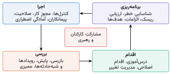
هر خانهٔ چرخه سندها و سابقههای خودش را دارد:
- برنامهریزی: دفترِ خطرها، ارزیابیِ ریسک، الزاماتِ قانونی و قراردادی، و هدفها.
- اجرا: کنترلها، مجوزِ کار، آموزش و صلاحیت، کنترلِ پیمانکاران، و آمادگیِ اضطراری (بخش 32.9).
- بررسی: بازرسیها، پایش، گزارشِ رویدادها و شبهحادثهها، و ممیزی.
- اقدام: اقدامِ اصلاحی، درسآموزی و مدیریتِ تغییر (بخش 32.6.5).
32.2.2 ماتریسِ ریسک
ایده. خطر منبعِ آسیبِ ممکن است: سقوط، برق، بارِ آویخته، گرما. ریسک ترکیبِ احتمالِ آسیب و شدتِ آن است. ماتریسِ آموزشیِ این فصل به هر دو عددی از ۱ تا ۵ میدهد:
\[ R = L \times S \tag{32.1}\]
در این رابطه \(L\) ردهٔ احتمال است و \(S\) ردهٔ شدت. در این فصل \(S\) ردهٔ شدت است و نه توانِ ظاهری.
def risk_score(likelihood: int, severity: int) -> int:
"""Teaching 5 x 5 matrix: score = likelihood x severity (1..25)."""
if not (1 <= likelihood <= 5 and 1 <= severity <= 5):
raise ValueError("likelihood and severity run from 1 to 5")
return likelihood * severity
def risk_band(score: int) -> str:
"""Band of a score in the teaching matrix."""
for top, name in BANDS:
if score <= top:
return name
return "very high"
def incident_rate(events: int, hours: float, per: float = 200_000.0,
conf: float = 0.90) -> tuple[float, float, float]:
"""(rate, low, high) per `per` hours with an exact Poisson interval."""
a = 1 - conf
low = stats.chi2.ppf(a / 2, 2 * events) / 2 if events > 0 else 0.0
high = stats.chi2.ppf(1 - a / 2, 2 * events + 2) / 2
f = per / hours
return events * f, low * f, high * fthe teaching 5 x 5 risk matrix (score = likelihood x severity)
likelihood \ severity 1 2 3 4 5
5 5 10 15 20 25
4 4 8 12 16 20
3 3 6 9 12 15
2 2 4 6 8 10
1 1 2 3 4 5
bands: up to 4 low, 5-9 medium, 10-16 high, above 16 very
high (teaching); a matrix ranks risks for attention - it
does not prove a risk acceptable, and its numbers are
judgements to be written down with their reasonsخطای رایج. ماتریس ریسکها را برای توجه رتبهبندی میکند، اما پذیرفتنیبودنِ ریسک را ثابت نمیکند. عددهای آن داوریاند. هر داوری با دلیلش نوشته میشود تا کسِ دیگری بتواند آن را بازبینی کند. ریسکی با شدتِ ۵ و احتمالِ ۱ «متوسط» است، اما اگر رخ دهد کسی میمیرد. چنین ردیفی هرگز با «متوسط» کنار گذاشته نمیشود.
32.2.3 سلسلهمراتبِ کنترلها
ایده. کنترلها به ترتیبِ اثربخشی برگزیده میشوند: حذف یا کاهشِ خطر، کنترلِ مهندسی، کنترلِ اداری، و در آخر تجهیزاتِ حفاظتِ فردی. کنترلِ بالاتر به رفتارِ هر روزهٔ افراد کمتر وابسته است.
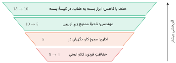
controls up the hierarchy for one hazard (teaching scores)
step L S score band
hazard: tool dropped from the nacelle 3 5 15 high
reduce: tools tethered, carried in closed bags 2 5 10 high
engineer: exclusion zone under the turbine 1 5 5 medium
administrate: permit names the zone, door watch 1 5 5 medium
protect: helmets for anyone who must enter 1 4 4 low
controls are chosen from the top of the hierarchy down; the
residual 4 (low) holds only while the tethers, the zone and
the permit hold every day - helmets alone would have left
12 (high), with the likelihood untouchedمثال 32.1 (کلاهِ ایمنی کافی نیست) پرسش. اگر برای ابزارِ افتاده از ناسل فقط کلاهِ ایمنی تجویز شود، ریسک چقدر میماند؟
پاسخ. شدت از ۵ به ۴ میرسد و احتمال ۳ میماند: امتیازِ 12، «زیاد». با طنابِ ابزار، ناحیهٔ ممنوع و مجوز، امتیاز به 4 میرسد.
تفسیر. کنترلهای بالا احتمال را کم میکنند و کلاه فقط پیامد را. اما امتیازِ 4 وقتی برقرار است که طنابها، ناحیهٔ ممنوع و مجوز هر روز رعایت شوند. سرپرست همینها را میپاید. وارسی: \(3 \times 4 = 12\) و \(1 \times 4 = 4\).
32.2.4 مجوزِ کار و جداسازی
ایده. مجوزِ کار برای کارهای پرخطر نوشته میشود: جداسازیِ برقی، کار در ارتفاع، بالابری، کارِ گرم و فضای بسته. مجوز میگوید کار چیست، کجاست، چه خطرهایی دارد، کدام نقطهها جدا و قفل شدهاند و چه کسی آن را صادر کرده است. جداسازی را فردِ مجاز طبقِ برنامهٔ جداسازی انجام میدهد، از جایی ایمن و با قفل و برچسبگذاری. این کتاب روالِ جداسازی یا کار روی تجهیزاتِ برقدار را نمیدهد. اینها را نظامِ مجوزِ پروژه و افرادِ مجاز تعیین میکنند (فصلهای ۶ و ۵۱).
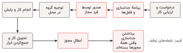
PERMITS = [ # (id, kind, area, isolation points)
("P-101", "electrical isolation", "WS2 feeder", {"Q-WS2", "T03-Q1"}),
("P-102", "work at height", "T03 nacelle", {"T03-Q1"}),
("P-103", "lifting", "T03 pad", set()),
("P-104", "hot work", "T03 tower base", set()),
("P-105", "confined space", "T03 hub", {"T03-Q1"}),
]permits open on one day at T03 and the checks between them
id kind area isolation points
P-101 electrical isolation WS2 feeder Q-WS2, T03-Q1
P-102 work at height T03 nacelle T03-Q1
P-103 lifting T03 pad -
P-104 hot work T03 tower base -
P-105 confined space T03 hub T03-Q1
isolation points shared by several permits:
T03-Q1: P-101, P-102, P-105 - de-isolate only after all close
simultaneous operations: the lift (P-103) over the tower
base puts the hot work (P-104) and anyone at the door under
a suspended load - the permit office sees both, sequences
them, and names who coordinates; a permit is a
conversation about one job among others, not a formمثال 32.2 (یک نقطهٔ جداسازی، سه مجوز) پرسش. کلیدِ T03-Q1 در سه مجوز آمده است. کِی میتوان جداسازیاش را برداشت؟
پاسخ. فقط وقتی هر سه مجوز، یعنی P-101، P-102 و P-105، بسته شده باشند.
تفسیر. اگر گروهِ برقی پس از پایانِ کارِ خودش جداسازی را بردارد، گروهی که هنوز در ناسل یا هاب کار میکند ناگهان در معرضِ انرژی قرار میگیرد. دفترِ مجوزها نقطههای مشترک را نشان میدهد و قفلِ هر گروه تا بستهشدنِ مجوزِ خودش روی نقطه میماند. بالابری بالای درِ برج و کارِ گرم در پای آن هم عملیاتِ همزماناند و دفترِ مجوزها آنها را پشتِ سرِ هم میچیند. وارسی: سه شناسه در فهرستِ T03-Q1.
32.2.5 صلاحیت
competency matrix of a turbine maintenance crew (1 = current)
task A B C supervisor
work at height and rescue 1 1 1 1
electrical isolation (authorised) 1 0 1 1
lifting supervision 0 0 1 1
confined space entry 1 0 0 1
first aid 1 1 0 1
every pair is current in height and rescue; an isolation
needs A, C or the supervisor; a hub entry (confined space)
needs two current people and only A and the supervisor are;
a lift needs C or the supervisor - the planner checks the
matrix, not names, and the gaps go into the training planایده. صلاحیت یعنی آموزش، تجربه و ارزیابیِ معتبر برای یک کارِ مشخص. برنامهریز گروه را از روی ماتریسِ صلاحیت میچیند، نه از روی نامها. شکافهای ماتریس به برنامهٔ آموزش میروند. گواهیِ منقضی یعنی صلاحیتِ منقضی، حتی اگر فرد کار را بلد باشد.
32.2.6 کنترلِ پیمانکاران
contractor prequalification (scores 1-5, teaching weights)
criterion weight C1 C2 C3
safety record (rates, fatalities) 0.25 4 5 3
safety management system 0.20 4 5 4
competence and training records 0.20 3 2 4
plant and equipment inspection 0.15 4 5 4
subcontractor control 0.10 3 2 4
welfare and labour practices 0.10 4 4 3
weighted C1 3.70 C2 4.00 C3 3.65
C2 has the best weighted score but 2 on competence and on
subcontractor control: a minimum of 3 on every line
(lowest scores C1 3, C2 2, C3 3) qualifies
C1 and C3 only - a weighted sum alone would hide the gapمثال 32.3 (جمعِ وزنی شکاف را پنهان میکند) پرسش. کدام پیمانکار بهترین امتیازِ وزنی را دارد و آیا صلاحیت دارد؟
پاسخ. C2 با 4.00. اما در صلاحیتِ کارکنان و کنترلِ پیمانکارانِ جزء امتیازِ ۲ دارد. با حداقلِ ۳ در هر معیار، فقط C1 و C3 پذیرفته میشوند.
تفسیر. سابقهٔ خوبِ گذشته ضعفِ امروز را جبران نمیکند. پیمانکاری که پیمانکارانِ جزءِ خود را کنترل نمیکند، همهٔ آن سابقه را در ساختگاهِ تازه به خطر میاندازد. پیشارزیابی هم کمینه میخواهد و هم جمعِ وزنی. پس از قرارداد، پایش و ممیزی ادامه مییابد. وارسی: \(0.25\times5+0.20\times5+0.20\times2+0.15\times5+0.10\times2+0.10\times4 = 4.00\).
32.2.7 نرخِ رویدادها و عدمِ قطعیتشان
ایده. نرخِ رویداد تعدادِ رویدادها در هر 200,000 ساعتِ کار است، یعنی تقریباً صد نفر در یک سال:
\[ \lambda = \frac{n \times 200{,}000}{H} \tag{32.2}\]
در این رابطه \(n\) تعدادِ رویدادهاست و \(H\) ساعتهای کار. وقتی \(n\) کوچک است، خودِ نرخ چیزِ زیادی نمیگوید. بازهٔ اطمینانِ دقیقِ پواسون با توزیعِ کایدو حساب میشود:
\[ \begin{aligned} \lambda_\text{low} &= \frac{\chi^2_{\alpha/2}(2n)}{2}\cdot\frac{200{,}000}{H} \\ \lambda_\text{high} &= \frac{\chi^2_{1-\alpha/2}(2n+2)}{2}\cdot\frac{200{,}000}{H} \end{aligned} \tag{32.3}\]
incident rates per 200,000 h with 90 % Poisson intervals (synthetic)
period hours kind n rate interval
construction 1,050,000 lost_time 3 0.57 0.16- 1.48
construction 1,050,000 recordable 11 2.10 1.18- 3.47
operation 52,000 lost_time 0 0.00 0.00-11.52
operation 52,000 recordable 1 3.85 0.20-18.25
operation's zero lost-time injuries in 52,000 h says little:
its interval reaches 11.5 per 200,000 h, 20 times
the construction rate - a small workforce needs many years,
or leading indicators, before its rate means anything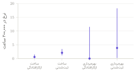
مثال 32.4 (صفر یعنی هنوز نمیدانیم) پرسش. سالِ نخستِ بهرهبرداری هیچ حادثهٔ منجر به ازکارافتادگی نداشت. نرخ صفر است؟
پاسخ. نرخِ اندازهگیریشده صفر است، اما کرانِ بالای بازهٔ 90 % به 11.5 در هر 200,000 ساعت میرسد. این بیست برابرِ نرخِ دورهٔ ساخت است.
تفسیر. گروهِ کوچکِ بهرهبرداری در 52,000 ساعت به اندازهٔ کافی کار نمیکند که نرخش معنا داشته باشد. پس عملکردِ ایمنی با نشانگرهای پیشنگر هم سنجیده میشود: بازرسیهای انجامشده، شبهحادثههای گزارششده و اقدامهای بستهشده. وارسی: \(2.996 \times 200{,}000/52{,}000 = 11.52\).
32.2.8 شبهحادثهها و درسآموزی
near misses as a learning source (construction, synthetic)
164 near misses against 11 recordable injuries (15 to 1)
dropped objects 38
vehicle and plant movements 41
electrical isolation found incomplete 9
work at height 22
housekeeping, slips and trips 33
heat stress symptoms 21
the nine incomplete isolations caused no injury, but each
could have been fatal: a near miss is ranked by what it
could have done, not by what it did - those nine get a
full investigation and a fix to the permit systemایده. شبهحادثه رویدادی است که میتوانست آسیب بزند و نزد. شمارِ شبهحادثهها از حادثهها بسیار بیشتر است، پس منبعِ اصلیِ یادگیریاند. هر شبهحادثه به آنچه میتوانست بکند رتبه میگیرد. نُه جداسازیِ ناقص هیچ آسیبی نزدند، اما هر کدام میتوانست کشنده باشد. پس هر نُه مورد بررسیِ کامل و اصلاحِ نظامِ مجوز را میخواهند. گزارشدادن فقط وقتی ادامه مییابد که گزارشدهنده سرزنش نشود و ببیند گزارشش به اقدام رسیده است.
- خطر و ریسک چه فرقی دارند؟ برای هر کدام یک نمونه از نیروگاه بیاورید.
- امتیاز و ردهٔ ریسکِ \(L = 2\) و \(S = 5\) را بنویسید.
- چرا ماتریسِ ریسک پذیرفتنیبودن را ثابت نمیکند؟
- چهار ردهٔ سلسلهمراتبِ کنترلها را به ترتیب نام ببرید.
- چرا ردیفی با شدتِ ۵ و احتمالِ ۱ کنار گذاشته نمیشود؟
- نقطهٔ جداسازیِ مشترکِ چند مجوز کِی آزاد میشود؟
- «عملیاتِ همزمان» را با یک نمونه توضیح دهید.
- نرخِ ۴ حادثهٔ ثبتشدنی در 800,000 ساعت چقدر است؟
- چرا نرخِ گروهِ کوچک بیمعناست و چه چیزی جایش را میگیرد؟
- چرا شبهحادثه به آنچه میتوانست بکند رتبه میگیرد؟
32.2.9 سدها میانِ علت و رویدادِ اصلی
برنامه:
python -m companion.ch32.examples_kایده. میانِ یک علت، مثلاً عیبِ یک سلول، و رویدادِ اصلی، مثلاً انفجارِ کانتینر، چند سد قرار دارد. هر سدِ مستقل با احتمالِ خرابیِ خودش بسامدِ رویداد را کم میکند:
\[ f_\text{event} = f_0 \prod_{i\,\in\,\text{independent}} \text{PFD}_i \tag{32.4}\]
سدی که با سدِ دیگر در علت شریک است مستقل نیست و اعتباری نمیگیرد.
BARRIERS = [ # (barrier, PFD credit, independent?)
("cell monitoring and BMS limits", 0.1, True),
("rack fuse / contactor opens", 0.1, True),
("off-gas detection -> PCS stop", 0.1, True),
("explosion control (per product test)", 0.1, True),
("second BMS channel, same sensors", 0.1, False),
]barriers between a cell fault and a container explosion (teaching)
initiating cell faults: 0.02 a year per container
barrier PFD counted frequency /yr
cell monitoring and BMS limits 0.10 yes 2.0e-03
rack fuse / contactor opens 0.10 yes 2.0e-04
off-gas detection -> PCS stop 0.10 yes 2.0e-05
explosion control (per product test) 0.10 yes 2.0e-06
second BMS channel, same sensors 0.10 no 2.0e-06
8 containers: 1.6e-05 a year against a teaching target 1e-05:
above it - the study asks for a further independent
barrier or a lower initiating rate (cell screening, ch 19);
the second BMS channel shares the first one's sensors, so
it is not an independent barrier and earns no credit;
one impaired barrier multiplies the frequency by ten -
which is why barrier health is tracked like any KPI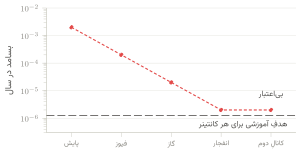
مثال 32.5 (کانالِ دوم با همان حسگرها) پرسش. چرا کانالِ دومِ مدیریتِ باتری بسامد را کم نمیکند؟
پاسخ. چون از همان حسگرهای کانالِ نخست میخواند. اگر حسگر خطا کند، هر دو با هم خطا میکنند.
تفسیر. با چهار سدِ مستقل، بسامد برای هشت کانتینر 1.6e-05 در سال است. این از هدفِ آموزشیِ 1e-05 بیشتر است. مطالعه سدِ مستقلِ دیگری میخواهد، یا بسامدِ آغازگرِ کمتر با غربالگریِ بهترِ سلولها (فصلِ ۱۹). یک سدِ ازکارافتاده بسامد را ده برابر میکند. پس سلامتِ سدها مانندِ هر شاخصِ دیگری پایش میشود (بخش 32.5.4). بسامدها و اعتبارهای واقعی از مطالعهٔ پروژه میآیند. وارسی: \(0.02 \times 0.1^4 \times 8 = 1.6\times10^{-5}\).
32.2.10 نشانگرهای پیشنگر
leading indicators for one month of construction (synthetic)
indicator value
inspections done / planned 88 %
near misses reported per 100 workers a month 9
actions closed on time 78 %
permits audited, found correct 90 %
toolbox talks held / planned 100 %
impaired barriers today 1 of 12
lagging rates count harm after it happens; leading
indicators show whether the system works now - a fall in
near-miss reports is a warning (people stopped reporting),
not good news, until it is understoodایده. نرخهای پسنگر آسیب را پس از وقوع میشمارند. نشانگرهای پیشنگر نشان میدهند نظام همین حالا کار میکند یا نه: بازرسیها، گزارشها، اقدامها، ممیزیِ مجوزها، جلسههای ایمنی و سدهای ازکارافتاده. کاهشِ گزارشِ شبهحادثهها هشدار است، نه خبرِ خوب، تا وقتی دلیلش فهمیده شود. شاید مردم دیگر گزارش نمیدهند.
32.2.11 یافتههای ممیزی و زمانِ بستنشان
برنامه:
python -m companion.ch32.examples_n
python -m companion.ch32.examples_p
python -m companion.ch32.examples_qhow long audit findings stay open (construction year, synthetic)
rating findings median days target days overdue
high 12 9 14 33 %
medium 30 24 45 10 %
low 40 54 90 22 %
a finding closed late is a barrier left weak for longer:
overdue high-rated findings go to the project manager
every week, and 'closed' means verified on site, not
a signature on the formایده. یافتهای که دیر بسته شود سدی است که مدتِ بیشتری ضعیف مانده است. یافتههای زیادِ عقبافتاده هر هفته به مدیرِ پروژه میرسند. «بسته» یعنی در ساختگاه وارسی شده، نه امضایی روی فرم. یکسومِ یافتههای زیاد در این نمونه دیر بسته شدهاند و همین خودش یک نشانگرِ پیشنگر است (بخش 32.2.10).
32.2.12 گواهیهایی که منقضی میشوند
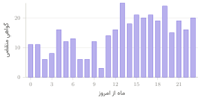
certificates (height and rescue) expiring each month, peak workforce
450 people, validity 2 or 3 years, issued over the last two years
expiring in the next 12 months: 118
busiest month: 25; course places of 12 -> 3 courses
without a plan, expiries arrive as a wave and crews stop
for paperwork; the competency matrix (lesson A) flags each
expiry three months ahead and training is booked in timeمثال 32.6 (موجِ انقضا) پرسش. در دوازده ماهِ آینده چند گواهی منقضی میشود و پرکارترین ماه چند دوره میخواهد؟
پاسخ. 118 گواهی. پرکارترین ماه 25 گواهی دارد که با دورههای ۱۲ نفره سه دوره میشود.
تفسیر. بیبرنامه، انقضاها مثلِ موج میرسند و گروهها برای کاغذبازی متوقف میشوند. ماتریسِ صلاحیت هر انقضا را سه ماه زودتر نشان میدهد و آموزش بهموقع رزرو میشود (بخش 32.2.5). وارسی: \(\lceil 25/12 \rceil = 3\).
32.2.13 نوبتکاری و خستگی
shift rosters and the hours worked (teaching)
roster h/week on longest run h rest days a cycle
12 h x 14 days on, 14 off 84 168 14
12 h x 21 days on, 7 off 84 252 7
10 h x 6 days, 1 off 60 60 1
long runs of long shifts build fatigue that one rest day
does not clear; the 21/7 roster puts 252 hours into one
run - fatigue errors cluster late in runs and after night
shifts, so critical work (isolation, lifts) is planned
away from them; legal limits come from the labour lawایده. نوبتهای طولانیِ پشتِ سرِ هم خستگیای میسازند که یک روز استراحت آن را پاک نمیکند. خطاهای ناشی از خستگی در پایانِ دورهها و پس از نوبتِ شب جمع میشوند. پس کارهای حساس، مانندِ جداسازی و بالابری، دور از آنها برنامهریزی میشوند. حدهای قانونی از قانونِ کار است.
32.3 ب. خطرهای نیروگاهِ تجدیدپذیر
نیروگاهِ هیبریدی خطرهای کارگاهِ ساختمانی، پستِ فشارقوی، ماشینِ دوّار در ارتفاع و انبارِ انرژیِ شیمیایی را یکجا دارد. هر خطر در این بخش با یک عدد از دادهٔ نیروگاهِ P نشان داده میشود تا بزرگیِ آن دیده شود. هیچکدام روالِ کار نیست. روالها را نظامِ مدیریتِ پروژه، دستورهای سازندگان و افرادِ صلاحیتدار تعیین میکنند. عددها آموزشیاند (A-371).
برنامه:
python -m companion.ch32.examples_b32.3.1 انرژیای که پس از قطع میماند
energy that stays after the switch is open (teaching)
battery container: 5,016 kWh; at 50 % charge 2,508 kWh = 9,029 MJ
main transformer oil: 22 m3 = 880 GJ of fire load
DC link capacitors of an inverter: charged for minutes
after stopping - the maker states the wait
tensioned springs, brakes and a rotor held by its lock
opening a breaker removes the grid, not the stored energy:
a damaged battery keeps its charge after a fire (stranded
energy) and may reignite days later; its removal is a
specialist job with the maker, never a site improvisationایده. باز کردنِ کلید شبکه را جدا میکند، نه انرژیِ ذخیرهشده را. باتری بارش را نگه میدارد و خازنهای لینکِ DC تا چند دقیقه باردار میمانند. فنرها، ترمزها و روتورِ قفلشده انرژیِ مکانیکی دارند و روغنِ ترانسفورماتور بارِ آتش است. جداسازیِ کامل یعنی هر شکلِ انرژی، نه فقط برق، تا جایی که برنامهٔ جداسازی و سازنده میگویند. باتریِ آسیبدیده پس از حریق انرژیِ بهجامانده دارد و ممکن است روزها بعد دوباره شعلهور شود. برداشتنش کارِ متخصص با سازنده است (فصلِ ۱۹).
32.3.2 آرایهٔ خورشیدی در روشنایی برقدار است
when the PV array is energised (data-pack year, hourly GHI)
hours with GHI above 50 W/m2: 4,031 (46 % of the year)
hours with faint light (1-50 W/m2): 472
a module makes voltage in faint light, and open-circuit
voltage is highest on cold, dim mornings; opening a combiner
or an inverter switch isolates what lies beyond it, never the
modules and string cables on the array side - which is why
DC work is planned with the array treated as energised and
done under the permit system (ch 6, 9, 10)مثال 32.7 (کلید ماژول را خاموش نمیکند) پرسش. پس از بازکردنِ کلیدِ جعبهٔ ترکیبکننده، کدام بخشهای آرایه هنوز برقدارند؟
پاسخ. ماژولها و کابلهای رشته در سمتِ آرایه. هر ماژول تا وقتی نور به آن میتابد ولتاژ میسازد: 4,031 ساعتِ پرنور در سال و 472 ساعتِ کمنور.
تفسیر. کلید فقط آنچه را پس از آن است جدا میکند. ولتاژِ مدارِ باز در صبحهای سرد و کمنور حتی از ظهر بیشتر است (فصلِ ۱۰). پس کار روی بخشِ DC با این فرض برنامهریزی میشود که آرایه برقدار است، و زیرِ نظامِ مجوز انجام میشود (فصلهای ۶ و ۹). روالِ آن در این کتاب نیامده است. وارسی: \(4{,}031/8{,}760 = 46\,\%\).
32.3.3 کار در ارتفاع
ایده. سامانهٔ مهارِ سقوط پیش از توقف فاصلهای لازم دارد: طولِ طناب، کشیدگیِ جاذبِ انرژی، کشیدگیِ هارنس، فاصلهٔ حلقهٔ پشتی تا پا، و یک حاشیه. اگر این فاصله از ارتفاعِ لنگرگاه تا زمین بیشتر باشد، فرد پیش از توقف به زمین میخورد:
\[ h_\text{need} = \ell_\text{lan} + d_\text{dec} + d_\text{har} + d_\text{body} + d_\text{m} \tag{32.5}\]
def fall_clearance(lanyard_m: float, deceleration_m: float,
harness_m: float = 0.3, body_m: float = 1.5,
margin_m: float = 1.0) -> float:
"""Clear height needed below the anchor for a fall-arrest system:
lanyard + deceleration + harness stretch + D-ring to feet + margin."""
return lanyard_m + deceleration_m + harness_m + body_m + margin_mclear height needed below an anchor (teaching, maker data governs)
system lanyard decel total anchor ok?
energy-absorbing lanyard 1.8 m 1.8 1.75 6.35 5.0 NO
energy-absorbing lanyard 1.8 m 1.8 1.75 6.35 7.0 yes
short lanyard 1.0 m 1.0 1.20 5.00 5.0 yes
self-retracting device 0.3 0.60 3.70 5.0 yes
on a transformer top or a short platform the usual lanyard
hits the ground before it stops the fall, and the short one
has only the 1 m margin in the sum: restraint (no free
fall at all) or a retracting device is chosen, and the
rescue of a suspended person is planned before work startsمثال 32.8 (طنابِ معمولی روی ترانسفورماتور) پرسش. کارگری روی سقفِ ترانسفورماتور، با لنگرگاهی در ارتفاعِ 5 m، طنابِ 1.8 m با جاذبِ انرژی دارد. سقوطش پیش از زمین مهار میشود؟
پاسخ. نه. سامانه 6.35 m فاصله میخواهد و فقط 5 m هست.
تفسیر. روی سطحهای کوتاه یکی از این دو برگزیده میشود: بازداشتن از سقوط، که فرد اصلاً به لبه نمیرسد، یا مهارِ خودجمعشو با فاصلهٔ کم. نجاتِ فردِ آویزان در هارنس هم پیش از شروعِ کار برنامهریزی میشود، چون آویزانماندن خودش خطرناک است. عددِ واقعی از دادهٔ سازندهٔ تجهیزات است. وارسی: \(1.8 + 1.75 + 0.3 + 1.5 + 1.0 = 6.35\,\text{m}\).
در توربین، کار در ارتفاع با بالابرِ خدمت، ریلِ مهارِ سقوط و تجهیزاتِ فرود و نجات در ناسل انجام میشود. اقدامهای حفاظتیِ توربین در EN 50308:2004 آمدهاند (STD-140). کار روی بالِ پره، سقفِ ناسل و هاب هر کدام برنامهٔ نجاتِ خودشان را دارند (بخش 32.9.2).
32.3.4 فضای بسته
ایده. هاب، داخلِ پره، گودالِ کابل و مخزن فضای بستهاند: ورود و خروجشان دشوار است، هوایشان ممکن است کماکسیژن یا آلوده شود و نجات از آنها سخت است. تهویه آلاینده را رقیق میکند. در فضای کاملاً مخلوط، غلظت به شکلِ نمایی کم میشود:
\[ \frac{C(t)}{C_0} = \exp\!\left(-\frac{Q\,t}{V}\right) \tag{32.6}\]
در این رابطه \(Q\) دبیِ هوای تازه است و \(V\) حجمِ فضا.
purging a confined space by dilution (well mixed, teaching)
space 30 m3 (a hub or a cable vault), fan 300 m3/h: 10 air changes an hour
time to bring a contaminant to 50 % of its start: 4.2 min
time to bring a contaminant to 10 % of its start: 13.8 min
time to bring a contaminant to 1 % of its start: 27.6 min
real spaces mix badly: corners and low points keep gas long
after the formula says it has gone. The atmosphere is
measured before and during entry, never calculated; the
formula only says how long a fan needs before measuringخطای رایج. فضای واقعی خوب مخلوط نمیشود: گوشهها و نقطههای پایین گاز را مدتها پس از آنکه فرمول میگوید رفته است نگه میدارند. هوای فضای بسته پیش و در طولِ ورود اندازهگیری میشود، هرگز محاسبه نمیشود. ورود با مجوز، نگهبانِ بیرون و برنامهٔ نجات انجام میشود (بخش 32.2.4).
32.3.5 گرما و سرما
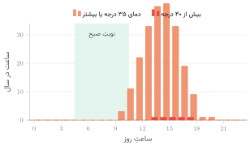
heat from the data-pack year (air temperature only)
hottest hour 40.7 C; hours at or above 35 C: 213, above 40 C: 5
of the 35 C hours, 3 fall between 05 and 11 h and 199 between 11 and 18 h
a 05-11 h summer shift meets 1 % of them; a day shift 93 %
heat stress depends on humidity, sun, wind and the work, not
on air temperature alone: the index used on site (for
example WBGT) needs a measured humidity and globe
temperature the data pack does not hold. The year shows
when to plan heavy work (early shifts in summer) and where
to put shade, water and rest; the limits come from the
site's heat-stress procedure and local lawمثال 32.9 (نوبتِ صبح) پرسش. اگر کارِ سنگینِ تابستان به ساعت ۵ تا ۱۱ برود، چند درصد از ساعتهای ۳۵ درجه به آن میخورد؟
پاسخ. حدودِ 1 %، یعنی ۳ ساعت از 213 ساعت. نوبتِ روز 93 % آنها را میگیرد.
تفسیر. تنشِ گرمایی به رطوبت، تابش، باد و سنگینیِ کار هم بستگی دارد، نه فقط دمای هوا. شاخصی که در ساختگاه به کار میرود، مثلاً دمای تر-گویسان (WBGT)، رطوبت و دمای گویسانِ اندازهگیریشده میخواهد و اینها در بستهٔ داده نیست. سالِ داده نشان میدهد کارِ سنگین کِی برنامهریزی شود و سایه، آب و استراحت کجا باشد. حدها از روالِ تنشِ گرمایی و قانونِ محل میآیند. وارسی: \(3/213 = 1.4\,\%\).
سرما در ارتفاع. کمینهٔ دما روی زمین −8.6 درجه بود (فصلِ ۲۹). روی سقفِ ناسل باد هم هست. دمای سوزِ باد برای دمای \(T\) بر حسبِ درجهٔ سلسیوس و سرعتِ \(v\) بر حسبِ کیلومتر بر ساعت چنین است:
\[ \begin{aligned} T_\text{wc} &= 13.12 + 0.6215\,T - 11.37\,v^{0.16} \\ &\quad + 0.3965\,T\,v^{0.16} \end{aligned} \tag{32.7}\]
cold at nacelle height: wind-chill temperature (data-pack year)
coldest wind chill -20.7 C; hours below -10 C: 175, below -20 C: 3
the ground minimum was -8.6 C (ch 29); a technician on the
nacelle roof in a winter wind feels far colder - clothing,
time on the roof and a warm refuge are planned for it, and
turbines stopped for work make no heat in the nacelle32.3.6 ترافیک و ماشینآلات
ایده. فاصلهٔ توقف دو بخش دارد: فاصلهای که در زمانِ واکنشِ راننده پیموده میشود و فاصلهٔ ترمز، که با مجذورِ سرعت بالا میرود:
\[ d = v\,t_\text{r} + \frac{v^2}{2\,\mu\,g} \tag{32.8}\]
در این رابطه \(t_\text{r}\) زمانِ واکنش است و \(\mu\) ضریبِ اصطکاکِ راه.
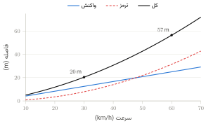
stopping distance on a gravel site road (reaction 1.5 s, mu 0.45)
speed km/h reaction m braking m total m
20 8.3 3.5 11.8
30 12.5 7.9 20.4
40 16.7 14.0 30.6
50 20.8 21.8 42.7
60 25.0 31.5 56.5
braking grows with the square of speed: 60 km/h needs nearly
three times the distance of 30 km/h. Site speed limits,
separated walkways at pads and laydown, and banksmen for
reversing are chosen from distances like theseبیشترِ حادثههای جدیِ ساخت به خودرو و ماشینآلات مربوطاند: دندهعقب، چرخش، واژگونی روی شیب و برخورد با عابر. حدِ سرعت، جداکردنِ مسیرِ پیاده در سکوها و انبارها، و راهنما برای دندهعقب از همین فاصلهها برگزیده میشوند. نقشهٔ ترافیکِ ساختگاه آنها را نشان میدهد (فصلهای ۲۹ و ۳۱).
32.3.7 صدا
ایده. مواجهه با صدا انرژیِ صوتیِ روز است، جمعشده روی هشت ساعت:
\[ L_\text{EX,8h} = 10\log_{10}\!\left(\frac{1}{8}\sum_i 10^{L_i/10}\,t_i\right) \tag{32.9}\]
در این رابطه \(L_i\) ترازِ صدای کارِ \(i\) است و \(t_i\) مدتِ آن به ساعت.
daily noise exposure of one worker (teaching levels)
task level dB(A) hours
angle grinder on a tower flange 98 1.0
diesel generator at 3 m 90 2.0
compactor operator (cab closed) 80 4.0
site office and drive 65 1.0
8-hour equivalent: 90.4 dB(A); the grinder hour alone gives 89.0
each 3 dB is a doubling of sound energy: one grinder hour
outweighs the whole rest of the day. The action values and
hearing protection rules come from local law; quieter tools
and shorter exposure come before ear defendersمثال 32.10 (یک ساعت سنگفرز) پرسش. یک ساعت سنگفرز با 98 dB(A) بهتنهایی چه مواجههای میسازد؟
پاسخ. 89.0 dB(A) در هشت ساعت. کلِ روز 90.4 است.
تفسیر. هر ۳ دسیبل دو برابر شدنِ انرژیِ صوتی است. یک ساعت سنگفرز از همهٔ بقیهٔ روز بیشتر است. ابزارِ کمصداتر و مواجههٔ کوتاهتر پیش از گوشی میآیند. حدهای اقدام و قاعدههای حفاظتِ شنوایی از قانونِ محل است. وارسی: \(98 + 10\log_{10}(1/8) = 89.0\).
32.3.8 گازِ خروجیِ باتری: فقط مفهوم
ایده. گازی که با دبیِ \(G\) آزاد میشود، با دبیِ هوای تازهٔ \(Q\) زیرِ غلظتِ \(c\) میماند اگر:
\[ Q = \frac{k\,G}{c} \tag{32.10}\]
در این رابطه \(k\) ضریبِ اختلاطِ ناقص است.
off-gas dilution in a battery container: the concept (placeholders)
free air volume 60 m3; release and limit are PLACEHOLDERS
kept below 25 % of a 4 % limit, mixing factor 3
release m3/h fresh air m3/h air changes per hour
0.5 150 2
2.0 600 10
8.0 2,400 40
the steady formula shows why a small release is diluted by a
fan and a large one is not - a runaway releases gas far
faster than any fan, which is why explosion control is
designed from the product's large-scale test gas data, the
authority's requirements and a specialist's analysis (ch 19,
U-073); it is never sized from this lessonاین فرمول فقط نشان میدهد چرا رهایشِ کوچک با پنکه رقیق میشود و رهایشِ بزرگ نه. فرارِ گرمایی گاز را بسیار تندتر از هر پنکهای آزاد میکند. کنترلِ انفجار از دادهٔ گازِ آزمونِ بزرگمقیاسِ محصول (UL 9540A، STD-099)، الزاماتِ مقامِ مسئول و تحلیلِ متخصص طراحی میشود (U-073، فصلِ ۱۹). هیچ عددی از این درس به طراحی نمیرود.
32.3.9 بالابری، مواد و دیگر خطرها
- بالابری: هر بالابری طرحِ مصوب، جرثقیلِ بازرسیشده و ناحیهٔ ممنوع دارد (فصلِ ۳۱).
- مواد شیمیایی: روغنِ ترانسفورماتور، گازِ SF6 در تابلوهای گازی (فصلِ ۲۴)، الکترولیت و مایعِ خنککنندهٔ باتری، سوخت و رنگ. هر ماده برگهٔ اطلاعاتِ ایمنی دارد که جابهجایی، انبار، نشت و کمکهای اولیهاش را میگوید.
- ماشینِ دوّار: محورها، چرخدندهها و بادزنها حفاظ دارند و پیش از کار قفل میشوند. روتور با قفلِ روتور و نه فقط با ترمز نگه داشته میشود.
- محیط: گرد و خاک، توفان، رعد و برق و جانوران. کار در بیرون با پیشبینیِ هوا و قاعدهٔ توقف انجام میشود (بخش 32.9.1).
- سه شکلِ انرژی را نام ببرید که پس از بازکردنِ کلید میمانند.
- چرا ولتاژِ آرایه در صبحِ سرد بیشتر است؟
- فاصلهٔ لازم با طنابِ 2.0 m و کشیدگیِ 1.75 m چقدر است؟
- بازداشتن از سقوط با مهارِ سقوط چه فرقی دارد؟
- چند دقیقه طول میکشد تا آلاینده با ۱۰ بار تعویضِ هوا در ساعت به 10 % برسد؟
- چرا هوای فضای بسته اندازهگیری میشود و محاسبه نمیشود؟
- چرا دمای هوا بهتنهایی تنشِ گرمایی را نشان نمیدهد؟
- فاصلهٔ توقف در 40 km/h چقدر است؟
- دو ساعت در 95 dB(A) چه مواجههای در هشت ساعت میسازد؟
- چرا تهویهٔ رقیقسازی برای فرارِ گرمایی کافی نیست؟
32.3.10 رعد و برق: فاصله از روی صدا
ایده. نور تقریباً بیدرنگ میرسد و صدا با سرعتِ حدودِ 343 m/s. پس فاصلهٔ توفان از ثانیههای میانِ برق و تندر به دست میآید: \(d = 0.343\,t\) کیلومتر.
how far is the storm? flash-to-bang (sound 343 m/s)
seconds distance km
5 1.7
10 3.4
20 6.9
30 10.3
45 15.4
under 30 s the storm is within about 10 km: work at height,
on the line and in open areas stops, and restarts 30
minutes after the last thunder; a lightning detector
with a warning radius replaces counting where fitted -
the site rule sets the distances (ch 26 for protection)کار در ارتفاع، روی خط و در فضای باز با رسیدنِ توفان متوقف میشود و نیم ساعت پس از آخرین تندر از سر گرفته میشود. فاصلهها را قاعدهٔ ساختگاه تعیین میکند. حفاظتِ تأسیسات در برابرِ صاعقه در فصلِ ۲۶ آمده است.
32.3.11 گرد و خاکِ قابلِ تنفس
respirable dust over an 8-hour shift (teaching concentrations)
task mg/m3 hours
grading in the wind 3.00 3.0
driving the site roads 1.20 2.0
cab with filter, closed 0.30 2.0
office 0.05 1.0
time-weighted average: 1.51 mg/m3
three hours of grading supply most of the dose; water
sprays, closed cabs and working upwind come before masks;
the limit, and whether silica needs its own, come from
local law and an occupational hygienist's samplingایده. مواجهه با گرد و خاک هم مانندِ صدا میانگینِ وزنی بر حسبِ زمان است. سه ساعت تسطیح در باد بیشترِ دُز را میسازد. آبپاشی، کابینِ بسته و کار در سمتِ بادگیر پیش از ماسک میآیند. حدها، و اینکه سیلیس حدِ جداگانهای میخواهد یا نه، از قانونِ محل و نمونهبرداریِ متخصصِ بهداشتِ حرفهای میآیند.
32.3.12 بلندکردنِ ماژولِ خورشیدی
ایده. معادلهٔ بازنگریشدهٔ بلندکردن یک حدِ وزنِ توصیهشده میسازد. این حد از یک ثابتِ بار شروع میشود و برای فاصلهٔ افقی، ارتفاع، مسافت، چرخش، تکرار و نوعِ دستگیره کم میشود. شاخصِ بلندکردن نسبتِ بار به این حد است. شاخصِ بیش از ۱ یعنی کار باید دوباره چیده شود.
lifting index of a PV module (revised lifting equation, teaching)
module 32 kg; load constant 23 kg
case RWL kg load kg index
one person, module from pallet to table 6.2 32.0 5.20
two persons, same lift 6.2 16.0 2.60
two, held close, pallet at 75 cm, no twist 17.6 16.0 0.91
one person carrying a module from a low pallet is far
above 1; two people halve it but stay above 1; holding
it close, raising the pallet and cutting the twist bring
it under 1 - the layout of the work, not the strength
of the worker, is the control (modules crack if bent)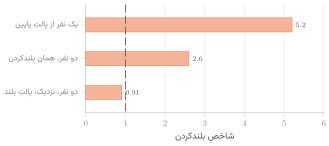
مثال 32.11 (چیدمانِ کار، نه زورِ کارگر) پرسش. ماژولِ 32 kg را با چه چیدمانی میتوان زیرِ شاخصِ ۱ بلند کرد؟
پاسخ. با دو نفر، ماژول نزدیکِ بدن، پالت در ارتفاعِ 75 cm و بیچرخش: شاخصِ 0.91. یک نفر از پالتِ پایین 5.2 و دو نفر 2.6 است.
تفسیر. چیدمانِ کار کنترل است: ارتفاعِ پالت، جای ایستادن و نبودِ چرخش. ماژول اگر خم شود ترک برمیدارد، پس همین چیدمان از محصول هم محافظت میکند (فصلِ ۱۰). عددها آموزشیاند و ارزیابیِ واقعی را متخصصِ ارگونومی با کارِ واقعی انجام میدهد. وارسی: \(23 \times 0.85 \times 0.90 = 17.6\,\text{kg}\) و \(16/17.6 = 0.91\).
32.3.13 ساعتهایی که هوا کار در ارتفاع را متوقف میکند
daytime hours that stop work at height (data-pack year, 06-18 h)
daytime hours in the year: 4,380
rule (teaching) hours share
hub wind above 12 m/s (no climbing) 307 7.0 %
hub wind above 15 m/s (leave the nacelle) 80 1.8 %
air 35 C or more (heavy work moved) 202 4.6 %
wind stops climbing on about 7 % of working hours, heat
moves heavy work on about 5 %; the maker's limits for the
service lift, the hub and the roof hatch, and the site's
heat rule, set the real thresholds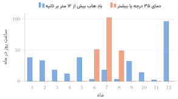
باد حدودِ 7 % از ساعتهای کاری بالارفتن را متوقف میکند و گرما حدودِ 5 % کارِ سنگین را جابهجا میکند. برنامهٔ نگهداری این ساعتها را از پیش در نظر میگیرد و فشارِ زمان را به گروه منتقل نمیکند. حدهای واقعی از سازندهٔ بالابرِ خدمت، هاب و دریچهٔ سقف، و از قاعدهٔ گرمای ساختگاه است.
32.3.14 چرا ولتاژِ تماس مهم است
ایده. جریانِ گذرنده از بدن با قانونِ اهم برابرِ \(I = U/R_\text{body}\) است. مقاومتِ بدن به پوست، سطحِ تماس و مسیرِ جریان بستگی دارد و پوستِ خیس آن را بسیار کم میکند.
why touch voltage matters: current through the body (teaching)
I = U / R_body; R_body depends on skin, contact and path
touch voltage V R dry ohm I dry mA R wet ohm I wet mA
25 2000 12 800 31
50 2000 25 800 62
230 2000 115 800 288
400 2000 200 800 500
a few tens of milliamps across the chest can stop a
heart: even low-voltage circuits are lethal with wet
skin - which is why isolation, earthing and protective
devices come first, and why no work here is ever done
live (ch 6 and 26 for the protection side)مثال 32.12 (ولتاژِ کم، پوستِ خیس) پرسش. ولتاژِ تماسِ 50 V با پوستِ خیس چه جریانی میسازد؟
پاسخ. حدودِ 62 mA با مقاومتِ آموزشیِ 800 Ω.
تفسیر. چند ده میلیآمپر از قفسهٔ سینه میتواند قلب را از کار بیندازد. پس حتی مدارهای ولتاژِ پایین با پوستِ خیس کشندهاند. جداسازی، زمینکردن و وسیلههای حفاظتی مقدماند و هیچ کاری در این نیروگاه روی تجهیزاتِ برقدار انجام نمیشود (فصلهای ۶ و ۲۶). وارسی: \(50/800 = 0.0625\,\text{A}\).
32.3.15 ارتعاشِ دست و بازو
ایده. مواجهه با ارتعاشِ دست و بازو مجموعِ انرژیگونهٔ کارهای روز است، بهنجارشده به هشت ساعت:
\[ A(8) = \sqrt{\frac{1}{8}\sum_i a_i^2\,t_i} \tag{32.11}\]
hand-arm vibration over a shift: A(8) = sqrt(sum a^2 t / 8)
tool a m/s2 hours
breaker (hand-held) 15.0 1.0
angle grinder 5.0 1.5
impact wrench on flanges 8.0 2.0
daily exposure A(8) = 7.0 m/s2
the breaker hour alone gives most of the dose: tools with
low vibration, tension tools instead of impact wrenches
on flanges, and rotation between tasks come before
gloves; action and limit values are set by local lawیک ساعت چکشتخریبِ دستی بیشترِ دُز را میسازد. ابزارِ کمارتعاش، کششدهنده بهجای آچارِ ضربهای روی فلنجها، و چرخشِ کار پیش از دستکش میآیند. حدهای اقدام و حد از قانونِ محل است.
32.4 پ. مبنای خطرِ حریق و طراحیِ حفاظت
حفاظت از حریق یک رشتهٔ مهندسی در سراسرِ عمرِ نیروگاه است، نه فهرستی از تجهیزات. راهبردِ حریق با سناریوهای باورپذیر شروع میشود و مبنای طراحی را مینویسد. سپس جلوگیری از اشتعال، حفاظتِ غیرفعال، آشکارسازی و هشدار، منطقِ علت و معلول، اطفا یا حفاظتِ مجاورها، دود، تخلیه، دسترسیِ امدادگران و بازیابی را میچیند. نمونهٔ سندی که چنین مبنایی را برای نیروگاهها سازمان میدهد NFPA 850:2026 است (STD-139). باتریها اسنادِ خودشان را دارند (STD-099، STD-100، فصلِ ۱۹). این بخش هیچ سامانهٔ اطفای همگانی تجویز نمیکند. روشها، دبیها، فاصلهها و منطق از راهبردِ حریقِ پروژه، مقامِ مسئول و آزمونهای محصول میآیند (U-105، U-110).
برنامه:
python -m companion.ch32.lab_c32.4.1 راهبردِ حریق چه میگوید
راهبردِ حریق به این پرسشها پاسخ میدهد و هر پاسخ مالکِ خودش را دارد:
- سناریوها: چه چیزی، کجا و چگونه میسوزد؟ پیامدش برای افراد، دارایی، شبکه و محیط چیست؟
- جلوگیری: چه چیزی احتمالِ اشتعال را کم میکند؟ نگهداری، حفاظتِ برقی، کنترلِ کارِ گرم، نظافت و کنترلِ گیاهان.
- حفاظتِ غیرفعال: فاصلهها، دیوارهای آتش، آتشبندیِ نفوذهای کابل و حوضچههای روغن.
- آشکارسازی و هشدار: کدام آشکارساز، کجا، با چه رأیگیری؟ هشدار به چه کسی میرسد؟
- علت و معلول: هر ورودی کدام خروجیها را به حرکت درمیآورد؟ جداسازی، توقف، تهویه، تماس.
- اطفا یا حفاظتِ مجاورها: آیا اطفا هست؟ با چه عاملی؟ یا فقط خنککردنِ مجاورها تا رسیدنِ کمک؟
- دود، تخلیه و دسترسی: راههای خروج، محلِ تجمع، راهِ خودروی امدادی و اطلاعات برای امدادگران.
- بازیابی: پس از حریق چه کسی صحنه را آزاد میکند و چگونه به کار بازمیگردیم؟ (بخش 32.6.6)
32.4.2 دفترِ خطرِ حریق
REGISTER = [ # (id, area, scenario, L, S, consequence driver)
("F01", "BESS containers", "thermal runaway, off-gas, spread", 2, 5,
"explosion of off-gas, spread to the next unit"),
("F02", "PV array", "arc fault or cable fire in a string", 3, 2,
"local damage; grass ignition"),
("F03", "PV array", "grass fire across the array", 2, 3,
"many tables, smoke over the road"),
("F04", "inverter stations", "electronics or unit-transformer fire", 2, 3,
"one block out for months"),
("F05", "nacelles", "fire with no one on board", 2, 4,
"turbine lost; burning debris"),
("F06", "nacelles", "fire with technicians on board", 1, 5,
"escape from height"),
("F07", "main transformers", "oil fire after an internal fault", 1, 5,
"half the export lost for a year"),
("F08", "control and MV buildings", "cable or panel fire", 2, 4,
"loss of control; toxic smoke"),
("F09", "construction areas", "hot work, fuel or waste fire", 3, 3,
"injury; damage to stored parts"),
]the fire-hazard register of Plant P (teaching scores)
id area L S score band
F01 BESS containers 2 5 10 high
thermal runaway, off-gas, spread; explosion of off-gas, spread to the
next unit
F09 construction areas 3 3 9 medium
hot work, fuel or waste fire; injury; damage to stored parts
F05 nacelles 2 4 8 medium
fire with no one on board; turbine lost; burning debris
F08 control and MV buildings 2 4 8 medium
cable or panel fire; loss of control; toxic smoke
F02 PV array 3 2 6 medium
arc fault or cable fire in a string; local damage; grass ignition
F03 PV array 2 3 6 medium
grass fire across the array; many tables, smoke over the road
F04 inverter stations 2 3 6 medium
electronics or unit-transformer fire; one block out for months
F06 nacelles 1 5 5 medium
fire with technicians on board; escape from height
F07 main transformers 1 5 5 medium
oil fire after an internal fault; half the export lost for a year
the battery heads the list on severity, the construction
site on likelihood; the main transformer scores only medium
but its loss stops half the export for a year - a matrix
ranks attention, and the strategy still treats every row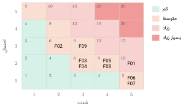
32.4.3 سناریوها در بخشهای نیروگاه
| بخش | ویژگیِ حریق | جداسازی | محدودیتها |
|---|---|---|---|
| کانتینرِ باتری | فرارِ گرمایی، گازِ خروجی، گسترش | توقفِ مبدل و کنتاکتورهای DC؛ ماژولها باردار میمانند | شعلهوریِ دوباره؛ گازِ قابلِ انفجار؛ دیدنِ درونِ کانتینر از بیرون ممکن نیست |
| بخشِ DC آرایه | قوسِ الکتریکی، آتشِ کابل، آتشِ علف | توقفِ اینورتر؛ آرایه در روز برقدار | گسترش در علف؛ دود روی راه |
| ایستگاههای اینورتر | آتشِ الکترونیک یا ترانسفورماتورِ واحد | کلیدِ فشارِ متوسط، توقفِ اینورتر | روغن؛ یک بلوکِ کامل از کار میافتد |
| ناسلها | آتشِ برقی یا اصطکاکی در ارتفاع | توقفِ توربین، کلیدِ فشارِ متوسط | بیرون از دسترسِ آتشنشانی؛ قطعههای سوزان؛ افرادِ بالا |
| ترانسفورماتورهای اصلی | آتشِ روغن پس از خطای درونی | کلیدهای دو طرف با حفاظت | بارِ آتشِ بزرگ؛ تابش؛ آبِ آلوده |
| ساختمانهای کنترل و فشارِ متوسط | آتشِ کابل و تابلو | جداسازیِ محلی، توقفِ تهویه | دودِ سمی؛ از دست رفتنِ کنترل |
| محوطههای ساخت | کارِ گرم، سوخت، پسماند | کنترلِ مجوزِ برقِ موقت | تغییرِ روزانهٔ محوطه |
پایشِ از دور محدودیت دارد. دوربینِ حرارتی سطحِ کانتینر را میبیند، نه سلولِ داغِ درون را. نبودِ دود در تصویر یعنی دود هنوز بیرون نیامده است. دادههای مدیریتِ باتری پیش از آتش هشدار میدهند، اما پس از آسیبِ حسگرها شاید هیچ چیز نگویند. پس راهبرد میگوید امدادگران با چه اطلاعاتی و از چه فاصلهای تصمیم میگیرند.
32.4.4 ماتریسِ حفاظت
concept protection matrix by area (questions and owners, not designs)
BESS containers
prevent cell monitoring, BMS limits, maker's commissioning tests
passive spacing or barriers from the product test (strategy)
detect off-gas, smoke, BMS temperature (layers, ch 19)
isolate PCS stop and DC contactors open, with feedback
act explosion control and water use: strategy and tests decide
access approach routes, stand-off, responder information
PV array
prevent connector quality, cable support, vegetation control
passive firebreaks around and through the array
detect inverter arc and insulation alarms, patrols
isolate inverter stop; array stays energised in daylight
act grass fire tactics with the fire service; no DC contact
access perimeter road and gates as firebreaks
inverter stations
prevent cooling, cleaning, torque checks, thermography
passive separation of the oil unit transformer (strategy)
detect station smoke and temperature alarms
isolate MV switch open, inverter stop, with feedback
act by the strategy; exposure protection if specified
access hard standing by each station
nacelles
prevent maintenance of brakes, bearings, converters; housekeeping
passive materials of low flammability (maker)
detect nacelle smoke and heat, SCADA alarm
isolate turbine stop and MV switch open
act maker's system if fitted; ground: exclusion zone
access evacuation devices for people at height
main transformers
prevent protection, oil tests, bushing checks (ch 25, 26)
passive bund, fire walls or separation (standard, strategy)
detect protection trip, temperature, fire detection if fitted
isolate breakers on both sides open by protection
act by the strategy; firewater only if specified (D)
access hydrant or tanker point if specified; drainage (D)
control and MV buildings
prevent cable segregation, housekeeping, no storage
passive fire stopping of every cable penetration
detect aspirating smoke detection, manual call points
isolate HVAC stop, local isolation by the strategy
act by the strategy; portable extinguishers for trained staff
access two exits, signs, emergency lighting
construction areas
prevent hot-work permits, fuel storage rules, waste removal
passive separation of fuel, gas bottles and laydown
detect fire watch during and after hot work
isolate permit control of temporary supplies
act extinguishers and trained staff; call the fire service
access kept-clear routes on the traffic plan
each line names what must be decided and who decides it;
a method appears only where it is the same everywhere
(fire stopping, detection layers, isolation with feedback)مثال 32.13 (ماتریس پرسش میپرسد، طرح نمیدهد) پرسش. سطرِ «اقدام» برای کانتینرِ باتری چرا روشی نام نمیبرد؟
پاسخ. چون کنترلِ انفجار، بهکاربردنِ آب و فاصلهها از آزمونِ بزرگمقیاسِ همان محصول، تحلیلِ کاهشِ خطر و الزاماتِ مقامِ مسئول میآیند (فصلِ ۱۹).
تفسیر. روشی در ماتریس آمده که در همه جا یکسان است: آتشبندیِ همهٔ نفوذها، لایههای آشکارسازی و جداسازی با بازخوردِ وضعیت. بقیه پرسشاند و هر پرسش مالکِ نامبرده دارد. ماتریسِ کاملشده با راهبردِ حریق یکی از سندهای تحویلدادنیِ این فصل است. وارسی: هفت بخش و شش پرسش.
32.4.5 آشکارسازی، هشدار و منطقِ علت و معلول
ایده. ماتریسِ علت و معلول میگوید هر ورودی، یعنی آشکارساز، شستیِ دستی یا تریپِ حفاظت، کدام خروجیها را به حرکت درمیآورد: هشدار، تماس، توقف، جداسازی و تهویه. خروجیای که تجهیزی را جابهجا میکند وضعیتش را به منطق برمیگرداند تا معلوم شود واقعاً انجام شده است.
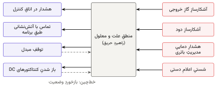
INPUTS = { # id: (device, location)
"I1": ("off-gas detector", "BESS-1"), "I2": ("smoke detector", "BESS-1"),
"I3": ("BMS thermal alarm", "BESS-1"), "I4": ("nacelle smoke", "T03"),
"I5": ("aspirating smoke, alert", "building"),
"I6": ("aspirating smoke, fire", "building"),
"I7": ("transformer protection trip", "TR1"),
"I8": ("manual call point", "building")}
OUTPUTS = { # id: (action, location, feedback?)
"O1": ("alarm in control room and remote centre", "all", True),
"O2": ("call the fire service by the plan", "all", True),
"O3": ("PCS stop", "BESS-1", True),
"O4": ("DC contactors open", "BESS-1", False),
"O5": ("turbine stop and MV switch open", "T04", True),
"O6": ("HVAC stop", "building", True),
"O7": ("evacuation alarm", "building", True),
"O8": ("breakers both sides open", "TR1", True)}
DRAFT = {"I1": ["O1", "O2", "O3", "O4"], "I2": ["O3", "O4"],
"I3": ["O1", "O3"], "I4": ["O1", "O2", "O5"], "I5": ["O1"],
"I6": ["O1", "O2", "O6", "O7"], "I7": ["O1", "O8"],
"I8": ["O1", "O2", "O7"]}cause and effect: the draft matrix checked (teaching logic)
input device location outputs
I1 off-gas detector BESS-1 O1 O2 O3 O4
I2 smoke detector BESS-1 O3 O4
I3 BMS thermal alarm BESS-1 O1 O3
I4 nacelle smoke T03 O1 O2 O5
I5 aspirating smoke, alert building O1
I6 aspirating smoke, fire building O1 O2 O6 O7
I7 transformer protection trip TR1 O1 O8
I8 manual call point building O1 O2 O7
checker findings: 3
I2 smoke detector at BESS-1: no alarm to the control room
I4 at T03 drives O5 'turbine stop and MV switch open' at T04
O4 'DC contactors open' has no position feedback
after the three fixes: 0 findings
the wrong turbine, the silent smoke detector and the open
contactor with no feedback are each easy to miss by eye;
which outputs an input drives at all (and whether a second
detector must confirm) is the strategy's decisionمثال 32.14 (توربینِ اشتباه) پرسش. وارسیکننده در پیشنویسِ ماتریس چه چیزی یافت؟
پاسخ. سه یافته: آشکارسازِ دودِ BESS-1 هشداری به اتاقِ کنترل نمیفرستد. دودِ ناسلِ T03 توربینِ T04 را متوقف میکند. باز شدنِ کنتاکتورهای DC بازخوردِ وضعیت ندارد.
تفسیر. هیچکدام با چشم آسان دیده نمیشود. هر سه در آزمونِ یکپارچهٔ علت و معلول پیدا میشوند، اما آن آزمون دیر و گران است. قاعدههای ساده، یعنی هشدار برای هر ورودی، خروجی فقط در محلِ خودش و بازخورد برای هر جابهجایی، را میتوان از همان پیشنویس با برنامه وارسی کرد. اینکه هر ورودی اصلاً کدام خروجیها را میراند، و آیا آشکارسازِ دوم باید تأیید کند، تصمیمِ راهبرد است. وارسی: پس از سه اصلاح، صفر یافته.
32.4.6 تابش و فاصلهها: یک غربالگری
ایده. آتشِ استخرِ روغن را از دور میتوان چشمهای نقطهای فرض کرد. بخشِ تابشیِ \(\chi\) از توانِ گرماییِ \(\dot Q\) بهطورِ یکنواخت پخش میشود و شارِ تابشی در فاصلهٔ \(r\) چنین است:
\[ q'' = \frac{\chi\,\dot Q}{4\pi r^2} \tag{32.12}\]
توانِ گرمایی از سطحِ استخر به دست میآید: \(\dot Q = \dot m''\,\Delta H_\text{c}\,A\). در این رابطه \(\dot m''\) نرخِ سوختن در واحدِ سطح است و \(\Delta H_\text{c}\) گرمای سوختن. مقدارهای این درس آموزشیاند.
def heat_flux_point(q_kw: float, radiant_fraction: float, r_m: float) -> float:
"""Radiant heat flux (kW/m2) at distance r from a fire treated as a
point source: chi Q / (4 pi r^2)."""
return radiant_fraction * q_kw / (4 * math.pi * r_m * r_m)
def distance_for_flux(q_kw: float, radiant_fraction: float,
flux_kw_m2: float) -> float:
"""Distance (m) at which the point-source flux falls to a criterion."""
return math.sqrt(radiant_fraction * q_kw / (4 * math.pi * flux_kw_m2))
def autonomy_minutes(volume_m3: float, rate_l_min: float) -> float:
"""Minutes a store lasts at a steady draw."""
return volume_m3 * 1000 / rate_l_minradiant heat from an oil-pool fire: a point-source screen
bund 140 m2 (equivalent diameter 13.4 m), heat release 251 MW, radiant 30 %
distance m flux kW/m2
10 60.0
15 26.6
20 15.0
30 6.7
40 3.7
12.5 kW/m2 (a common screening level) is reached at 22 m
= 1.6 pool diameters - where a point source is
least reliable. Separations and fire walls come from the
standard and the fire engineer's flame model (ch 25,
STD-123); the screen only shows why they are tens of metres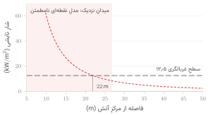
مثال 32.15 (چرا فاصلهها دهها متر است) پرسش. آتشِ حوضچهٔ 140 m² در چه فاصلهای به سطحِ غربالگریِ 12.5 kW/m² میرسد؟
پاسخ. در حدودِ 22 m، یعنی 1.6 برابرِ قطرِ استخر.
تفسیر. این دقیقاً همان ناحیهای است که مدلِ نقطهای در آن کمتر از همه قابلِ اعتماد است. فاصلهها و دیوارهای آتش از استاندارد (STD-123، فصلِ ۲۵) و مدلِ شعلهٔ مهندسِ حریق میآیند. غربالگری فقط نشان میدهد چرا آنها دهها متر است و چرا دیوارِ آتش میانِ دو ترانسفورماتورِ نزدیک ارزانتر از فاصله است. وارسی: \(\sqrt{0.3 \times 251{,}160/(4\pi \times 12.5)} = 21.9\,\text{m}\).
32.4.7 دود، تخلیه و دسترسیِ امدادگران
دود بیش از شعله میکشد. ساختمانِ کنترل دو راهِ خروج، تابلوها و روشناییِ اضطراری و محلِ تجمعِ مشخص دارد. دودِ آتشِ باتری و کابل سمی است و باد آن را جابهجا میکند. پس محلِ تجمع دو جایگزین در دو سمتِ باد دارد. امدادگران به راه، دروازه، کلید، نقشههای بهروز و اطلاعاتِ خطر نیاز دارند: کجا برقدار است، کجا باتری است و کجا گاز. این اطلاعات پیش از روزِ حادثه با آتشنشانی مرور میشود (بخش 32.6.4).
- هشت پرسشِ راهبردِ حریق را نام ببرید.
- چرا ترانسفورماتورِ اصلی با ریسکِ «متوسط» هنوز در راهبرد جدی گرفته میشود؟
- چرا دوربینِ حرارتی آتشِ درونِ کانتینر را دیر نشان میدهد؟
- کدام روشها در ماتریسِ حفاظت برای همهٔ بخشها یکساناند؟
- سه قاعدهٔ وارسیِ برنامهایِ ماتریسِ علت و معلول را بگویید.
- چرا خروجیای که تجهیزی را جابهجا میکند بازخورد میخواهد؟
- شارِ تابشی در 30 m از همان آتش چقدر است؟
- چرا مدلِ نقطهای در میدانِ نزدیک نامطمئن است؟
- محلِ تجمع چرا دو جایگزین دارد؟
- امدادگران پیش از حادثه چه اطلاعاتی میخواهند؟
32.4.8 رشدِ آتش و زمانِ آشکارسازی
برنامه:
python -m companion.ch32.examples_mایده. آتش در دقیقههای نخست تقریباً با مجذورِ زمان رشد میکند:
\[ \dot Q = \alpha\,t^2 \tag{32.13}\]
در این رابطه \(\alpha\) ضریبِ رشد است و ردهٔ آتش را تعیین میکند: کند، متوسط، تند یا بسیار تند.
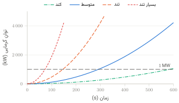
fire growth Q = alpha t^2 (teaching growth classes)
class alpha kW/s2 100 kW at 1 MW at 5 MW at
slow 0.0029 185 s 584 s 1306 s
medium 0.0117 92 s 292 s 653 s
fast 0.0469 46 s 146 s 327 s
ultra-fast 0.1876 23 s 73 s 163 s
a fast cable or panel fire reaches 1 MW in about 2.5
minutes: detection that responds near 100 kW (under a
minute) leaves time to alarm, isolate and leave; detection
that waits for 1 MW leaves almost none - which is why the
building uses aspirating detection (lesson C)مثال 32.16 (دو دقیقه و نیم) پرسش. آتشِ تندِ کابل یا تابلو کِی به یک مگاوات میرسد و آشکارسازِ حساس در چه زمانی آن را میبیند؟
پاسخ. حدودِ 146 ثانیه تا یک مگاوات. آشکارسازی که نزدیکِ 100 kW پاسخ دهد آن را در حدودِ 46 ثانیه میبیند.
تفسیر. آشکارسازیِ زودهنگام زمان برای هشدار، جداسازی و خروج میخرد. آشکارسازی که منتظرِ یک مگاوات بماند تقریباً هیچ زمانی باقی نمیگذارد. به همین دلیل ساختمانِ کنترل آشکارسازِ مکشی دارد (بخش 32.4.5). وارسی: \(\sqrt{1000/0.0469} = 146\,\text{s}\).
32.4.9 رأیگیری: هشدارِ کاذب در برابرِ آتشِ ازدسترفته
voting: false alarms against missed fires (teaching rates)
40 detectors, each 0.05 false alarms a year; failure rate 0.02 a year
logic unwanted actions a year PFD in the fire zone
any one detector acts 2.00 0.0050
two must agree 0.00089 0.0100
voting cuts unwanted trips from about two a year to almost
none, and doubles the chance of missing a real fire - so
a single detector may raise the ALARM while the trip of a
container or a building waits for a second: the cause-
and-effect matrix states which (lesson C)ایده. اگر هر آشکارسازی بهتنهایی اقدام کند، هشدارهای کاذب توقفهای ناخواسته میسازند. اگر دو آشکارساز باید تأیید کنند، توقفِ ناخواسته تقریباً از میان میرود، اما احتمالِ ازدستدادنِ آتشِ واقعی دو برابر میشود. راهِ میانه رایج است: یک آشکارساز هشدار میدهد و توقفِ کانتینر یا ساختمان منتظرِ آشکارسازِ دوم میماند. ماتریسِ علت و معلول میگوید کدام کار با کدام منطق انجام شود (بخش 32.4.5).
32.4.10 پرشدنِ اتاق از دود
ایده. ستونِ دودِ آتش هوا را به درونِ خود میکشد و لایهٔ دود زیرِ سقف ضخیم میشود. دبیِ جرمیِ ستون در ارتفاعِ \(z\) تقریباً چنین است:
\[ \dot m = 0.071\,\dot Q_\text{c}^{1/3}\,z^{5/3} \tag{32.14}\]
در این رابطه \(\dot Q_\text{c}\) بخشِ همرفتیِ توانِ گرمایی بر حسبِ کیلووات است.
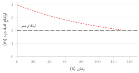
how fast smoke fills a room (control room 150 m2, 4 m high; teaching)
plume entrainment m = 0.071 Q^(1/3) z^(5/3) kg/s (Q convective kW)
fire kW time for the layer to fall to 2 m
100 3.3 min
300 2.3 min
1000 1.5 min
a 300 kW panel fire brings the smoke to head height in
a little over two minutes - before most people would
think of leaving: early detection (lesson C) and two
short exits are the defence, not a fast walkمثال 32.17 (دو دقیقه تا ارتفاعِ سر) پرسش. آتشِ 300 kW در اتاقِ کنترل دود را کِی به ارتفاعِ سر میرساند؟
پاسخ. کمی بیش از دو دقیقه. آتشِ 1 MW در حدودِ یک دقیقه و نیم.
تفسیر. دود پیش از آنکه بیشترِ افراد به ترککردن فکر کنند پایین میآید. دفاع آشکارسازیِ زودهنگام (مثال 32.16) و دو خروجیِ نزدیک است، نه تند راهرفتن. وارسی: با \(z = 4\) و \(\dot Q_\text{c} = 210\,\text{kW}\)، \(\dot m = 0.071 \times 5.94 \times 10.08 = 4.3\,\text{kg/s}\) در آغاز.
32.4.11 نگهبانِ آتش پس از کارِ گرم
how long to watch after hot work (smouldering delay, teaching)
delay of a smouldering ignition: lognormal, median 25 min
watch after the work min share of such fires seen
30 58 %
60 83 %
120 96 %
240 99 %
a short watch misses many slow fires: the hot-work permit
sets a watch during the work and for a period after it,
and a final check later - the times come from the
site's procedure and the insurer, not from this curveایده. جرقهٔ جوشکاری یا برش ممکن است در عایق، گرد و خاک یا زباله آرام بسوزد و دیرتر شعلهور شود. نگهبانیِ کوتاه بسیاری از این آتشها را نمیبیند. مجوزِ کارِ گرم نگهبانی در حینِ کار و تا مدتی پس از آن، و یک وارسیِ نهایی را تعیین میکند. زمانها از روالِ ساختگاه و بیمهگر است.
32.4.12 تابش میانِ دو کانتینرِ باتری: فقط غربالگری
radiant heat from one battery container to the next (screen only)
PLACEHOLDER heat release 4 MW, radiant 0.35 (point source)
gap m flux kW/m2
1.5 12.4
3.0 5.5
6.0 2.0
10.0 0.8
at a close gap the point source is useless (the flame is
bigger than the gap): spacing or barriers between
containers come from the product's large-scale fire test
and the authority (ch 19, UL 9540A), never from a screen
like this one, which only shows why the gap matters32.4.13 شعلهٔ آتشِ علف و پهنای آتشبر
ایده. شدتِ آتشِ علف از رابطهٔ بایرام به دست میآید: \(I = H\,w\,r\)، با گرمای سوختنِ \(H\)، بارِ سوختِ \(w\) و سرعتِ گسترشِ \(r\). طولِ شعله از شدت برمیآید:
\[ L = 0.0775\,I^{0.46} \tag{32.15}\]
grass fire: Byram's intensity and flame length (teaching)
I = H w r (kW/m); flame length L = 0.0775 I^0.46 (m)
fuel kg/m2 spread m/s intensity kW/m flame m break 3 x L m
0.2 0.05 180 0.8 2.5
0.3 0.10 540 1.4 4.2
0.5 0.30 2700 2.9 8.8
after a wet spring the grass between the PV rows can carry
a fire with flames of a few metres in wind: firebreaks
around the array, vegetation control under the tables and
the perimeter road are the passive defence (lesson C)مثال 32.18 (پس از بهارِ پرباران) پرسش. علفِ 0.5 kg/m² با گسترشِ 0.3 m/s چه شعلهای دارد؟
پاسخ. حدودِ 2.9 m. آتشبرِ سه برابرِ طولِ شعله حدودِ 9 m است.
تفسیر. پس از بهارِ پرباران، علفِ میانِ ردیفهای PV آتشی با شعلههای چندمتری در باد میسازد. آتشبرهای دورِ آرایه، کنترلِ گیاهان زیرِ میزها و جادهٔ پیرامونی دفاعِ غیرفعالاند (بخش 32.4.4). قاعدهٔ «سه برابرِ شعله» آموزشی است و پهنای واقعی را مقامِ مسئول و آتشنشانی تعیین میکنند. وارسی: \(0.0775 \times 2700^{0.46} = 2.9\,\text{m}\).
32.5 ت. آبِ آتشنشانی و پیوند با محیطِ زیست
در فصلِ ۲۹ ذخیرهٔ 180 m³ از دبیها و مدتهای جایگزین به دست آمد (U-105). این بخش میپرسد آن ذخیره در یک حریق چه میکند. چقدر دوام میآورد؟ آتشنشانی کِی میرسد؟ آبِ آلوده کجا میرود؟ وقتی بخشی از حفاظت از کار افتاده است چه میکنیم؟ در نیم ساعتِ نخست چه کسی چه میکند؟ هر روشی، و نیازِ اصلی به آبِ آتشنشانی، از الزاماتِ تأییدشدهٔ پروژه و مهندسیِ حفاظت از حریقِ صلاحیتدار است. حسابِ این بخش روش و حساسیتها را نشان میدهد (A-370).
برنامه:
python -m companion.ch32.examples_d32.5.1 دوامِ ذخیره
ایده. ذخیرهٔ \(V\) با دبیِ ثابتِ \(\dot V\) تا این مدت دوام میآورد:
\[ t = \frac{V}{\dot V} \tag{32.16}\]
autonomy of the held reserve (180 m3, placeholder rates)
case rate L/min minutes +wells
main transformer, external cooling 3000 60 61
BESS container, exposure protection 1500 120 123
both at once (not the design case) 4500 40 40
the wells add 39 L/min - about 1 % of a fire flow:
the reserve is what there is, and refilling it takes
77 h. The strategy states whether one event or
two is the design case, and the authority accepts itمثال 32.19 (چاهها کمکی نمیکنند) پرسش. دو چاه در طولِ حریق چقدر به ذخیره میافزایند؟
پاسخ. حدودِ 39 L/min، یعنی حدودِ 1 % دبیِ آتش. پرکردنِ دوبارهٔ ذخیره 77 ساعت طول میکشد.
تفسیر. ذخیره همان است که هست. پس راهبرد میگوید طرح برای یک رویداد است یا دو رویداد، و مقامِ مسئول آن را میپذیرد. پس از هر آزمون یا رویداد، پرکردنِ ذخیره پیش از هر مصرفِ دیگری است و تا آن وقت ازکارافتادگیِ حفاظت ثبت میشود (بخش 32.5.4). وارسی: \((0.40 + 0.25) \times 60 = 39\,\text{L/min}\).
32.5.2 رسیدنِ آتشنشانی
ایده. زمانِ رسیدنِ آتشنشانی سه بخش دارد: آمادهشدن، رانندگی و دسترسی در خودِ ساختگاه. هر بخش پراکندگیِ خودش را دارد و گاهی راه بسته است. شبیهسازیِ مونتکارلو توزیعِ این زمان را میسازد و سهمِ رسیدن پیش از یک زمانِ هدف را میدهد.
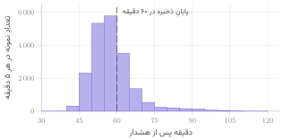
fire-service arrival at the fire (Monte Carlo, 20,000 draws)
mobilise 5-15 min, 35 km at 60 +/- 8 km/h, road blocked 5 %
of the time (+10-40 min), access on site 5-20 min
P10 49, P50 57, P90 67, P99 91 min
share arriving within 45 min: 1.6 %
share arriving within 60 min: 68.7 %
share arriving within 75 min: 95.8 %
the reserve lasts 60 min at the transformer rate; in about
31 % of fires the fire service arrives after the site's own
water is gone - so the strategy, not the tank, sets what
the water is for (cooling exposures until help arrives),
and the fire service's own tankers and the meeting point
are agreed in advanceمثال 32.20 (آبِ ساختگاه پیش از رسیدنِ کمک تمام میشود) پرسش. با ذخیرهای که با دبیِ ترانسفورماتور 60 دقیقه دوام میآورد، در چند درصد از نمونهها آتشنشانی پس از تمامشدنِ آب میرسد؟
پاسخ. حدودِ 31 %. میانهٔ رسیدن 57 دقیقه است و صدکِ ۹۰ام 67 دقیقه.
تفسیر. آب برای خنککردنِ مجاورها تا رسیدنِ کمک است، نه برای خاموشکردن. نتیجه دو اقدام است: آتشنشانی تانکرهای خودش را میآورد، و محلِ دیدار، دروازه و راهِ دوم از پیش توافق میشوند. فرضهای این شبیهسازی جایگزیناند. زمانهای واقعی را آتشنشانیِ محلی میدهد (A-370). وارسی: \(1 - 0.687 = 0.31\).
32.5.3 زهکشی و آبِ آلوده
contaminated runoff from a battery-yard fire (teaching)
water applied (placeholder case) 180 m3
share reaching the drains (60 %) 108 m3
rain on the BESS yard, 10-year hour (22 mm) 52 m3
volume to hold for testing 160 m3
firewater from a battery or an oil fire carries metals,
fluorides or oil: the drains of the yard lead to a
closable pond, the outlet stays shut until the water is
tested, and disposal follows the environmental permit
(ch 29, 33) - it never runs to the wadiایده. آبی که روی آتشِ باتری یا روغن ریخته میشود فلزات، فلوئوریدها یا روغن با خود میبرد. زهکشیِ محوطه به حوضچهای میرود که دریچهاش بسته میماند تا آب آزمایش شود. دفعِ آن طبقِ مجوزِ محیطِ زیستی است (فصلهای ۲۹ و ۳۳). باران هم به همان حوضچه میریزد. پس حجمِ حوضچه آبِ آتش بهاضافهٔ بارانِ طرح است.
32.5.4 ازکارافتادگیِ حفاظت
impairment register for one year (teaching)
impairment hours compensating measure
building smoke detection, panel repair 36 fire watch, no hot work
BESS-3 off-gas detector, replacement 72 container stopped, isolated
fire-service road, culvert works 120 second route marked, notice
tank reserve below 180 m3 after a test 20 refill first, tanker on call
248 impairment hours, each with a named owner, a
compensating measure and notice to the insurer and fire
service where the strategy requires it; an impairment
without a measure is a hidden gap in the protectionمثال 32.21 (شکافِ پنهان) پرسش. آشکارسازِ گازِ BESS-3 برای تعویض ۷۲ ساعت از کار افتاده است. اقدامِ جبرانی چیست؟
پاسخ. کانتینر متوقف و جدا میشود و این ازکارافتادگی با مالک و زمانِ پایان ثبت میشود.
تفسیر. ازکارافتادگی بیاقدامِ جبرانی شکافِ پنهانی در حفاظت است. هر مورد مالک، اقدامِ جبرانی و زمانِ پایان دارد. هرجا راهبرد بخواهد، به بیمهگر و آتشنشانی هم خبر داده میشود. شمارِ ساعتهای ازکارافتادگی یکی از نشانگرهای پیشنگرِ ایمنی است. وارسی: \(36 + 72 + 120 + 20 = 248\) ساعت در سال.
32.5.5 فرماندهیِ رویداد
the first ninety minutes of incident command (teaching timeline)
min action
0 alarm reaches the control room; operator confirms location
1 site emergency plan started; call the fire service by the plan
3 evacuate the area; account for everyone at the muster point
6 site team at the scene: cordon, information, no entry
10 authorised person isolates by the plan from a safe place
15 drains to the pond confirmed closed; neighbours told
20 escort meets the fire service at the gate with the plan
57 fire service in command (median arrival); site informs
90 scene held for investigation; no restart without approval
the site's role is alarm, people, isolation, information
and the environment; firefighting beyond first-aid
extinguishers by trained staff belongs to the fire
service, which takes command when it arrivesایده. در دقیقههای نخست، ساختگاه پنج کار دارد: هشدار، افراد، جداسازی، اطلاعات و محیط. خاموشکردنِ آتش، فراتر از خاموشکنندههای دستی به دستِ کارکنانِ آموزشدیده، کارِ آتشنشانی است و آتشنشانی با رسیدن فرماندهی را میگیرد. اصولِ مدیریتِ رویداد در ISO 22320:2018 آمده است (STD-138): وحدتِ فرماندهی، رویکرد برای همهٔ مخاطرات، همکاری میانِ امدادگران و تصویرِ مشترک از وضعیت. نقشهای ساختگاه در برنامهٔ اضطراری نامبردهاند و هر نقش جانشین دارد (بخش 32.9).
نیاز به آبِ آتشنشانی، دبیها، مدتها، پمپها، شیرهای آتشنشانی و حجمِ حوضچهها را مهندسِ حفاظت از حریقِ صلاحیتدار با راهبردِ حریق تعیین میکند و مقامِ مسئول و بیمهگر میپذیرند. عددهای این بخش جایگزیناند.
- دوامِ 100 m³ با 2,000 L/min چقدر است؟
- چرا چاهها در طولِ حریق به ذخیره کمکی نمیکنند؟
- سه بخشِ زمانِ رسیدنِ آتشنشانی را نام ببرید.
- چرا میانهٔ زمانِ رسیدن برای برنامهریزی کافی نیست؟
- آبِ آتشنشانیِ ساختگاه برای چیست، اگر برای خاموشکردن نیست؟
- حجمِ حوضچهٔ آبِ آلوده از چه بخشهایی ساخته میشود؟
- ازکارافتادگیِ حفاظت را تعریف کنید و یک اقدامِ جبرانی بیاورید.
- پنج کارِ ساختگاه در دقیقههای نخستِ حریق چیست؟
- چه کسی و چه وقت فرماندهی را میگیرد؟
32.5.6 تانکرهای آبِ آتشنشانی
ایده. تانکری با گنجایشِ \(V\) و زمانِ رفتوبرگشتِ \(t_\text{trip}\)، بهطورِ میانگین با دبیِ \(V/t_\text{trip}\) آب میرساند. زمانِ رفتوبرگشت شاملِ رانندگی، پرکردن و تخلیه است.
water a tanker shuttle delivers (placeholders, A-370)
source distance km round trip min L/min per tanker tankers for 1,500
2 24 417 4
10 48 208 8
35 123 81 19
from the town 35 km away one tanker delivers about 80 L/min
- a shuttle needs many tankers or a nearer source: the
site tank (refilled by tankers between events) and an
agreed filling point at the wells are what make a long
exposure-cooling case possible at allمثال 32.22 (منبعِ نزدیک) پرسش. برای دبیِ 1,500 L/min از شهرِ 35 km دورتر چند تانکر لازم است؟
پاسخ. حدودِ 19 تانکر. هر کدام فقط حدودِ 80 L/min میرساند.
تفسیر. چرخهٔ تانکر از راهِ دور عملاً شدنی نیست. مخزنِ ساختگاه، که میانِ رویدادها با تانکر پر میشود، و محلِ پرکردنِ توافقشده کنارِ چاهها هستند که حالتِ طولانیِ خنککردنِ مجاورها را ممکن میکنند. هر دو با آتشنشانی از پیش توافق میشوند (مثال 32.20). وارسی: \(2 \times 35/40 \times 60 + 18 = 123\) دقیقه و \(10{,}000/123 = 81\,\text{L/min}\).
32.6 ث. راستیآزمایی و چرخهٔ عمر
سامانهٔ حفاظت از حریق یک بار ساخته میشود و سالها باید کار کند. این بخش زنجیرهٔ شواهد را از گواهیِ محصول تا بازرسیِ دورهای دنبال میکند. سپس نشان میدهد فاصلهٔ آزمون چگونه احتمالِ خرابی را تعیین میکند، مانورها چه مییابند، کدام تغییرها راهبرد را دوباره باز میکنند، و پس از حریق چگونه به کار بازمیگردیم (A-372).
برنامه:
python -m companion.ch32.examples_e32.6.1 پروندهٔ شواهد
NEED = ("certificate", "FAT", "site test", "C&E test", "manual")
DOSSIER = { # item: evidence held (teaching)
"fire alarm panel": {"certificate", "FAT", "site test", "C&E test",
"manual"},
"aspirating smoke detectors": {"certificate", "site test", "manual"},
"BESS off-gas detectors": {"certificate", "FAT", "site test", "manual"},
"BESS container system": {"certificate", "FAT", "manual"},
"fire-rated wall, transformer bay": {"certificate", "manual"},
"cable fire stopping": {"certificate"},
"nacelle detection (maker)": {"certificate", "FAT", "manual"},
"fire pump set (if specified)": {"certificate", "FAT",
"site test", "C&E test", "manual"},
}evidence register of the fire-protection items (teaching)
item missing evidence
fire alarm panel -
aspirating smoke detectors C&E test
BESS off-gas detectors C&E test
BESS container system site test, C&E test
fire-rated wall, transformer bay site test
cable fire stopping site test, manual
nacelle detection (maker) site test, C&E test
fire pump set (if specified) -
9 pieces of evidence missing before handover
a wall or a fire stop has no factory test: its evidence
is the tested system's certificate plus a record that it
was installed as tested - photos and an inspection of
every penetration, before the cables hide itایده. هر قلمِ حفاظت پنج نوع شاهد دارد، هرجا که کاربرد داشته باشد: گواهیِ محصول، آزمونِ کارخانه، آزمونِ ساختگاه، آزمونِ یکپارچهٔ علت و معلول، و دستورِ بهرهبرداری و نگهداری. دیوارِ آتش یا آتشبندیِ نفوذ آزمونِ کارخانه ندارد. شاهدش گواهیِ سامانهٔ آزمودهشده است، بهاضافهٔ سابقهای که نشان میدهد همانطور که آزموده شده نصب شده است: عکس و بازرسیِ هر نفوذ، پیش از آنکه کابلها آن را بپوشانند.
32.6.2 نردبانِ راستیآزمایی
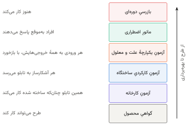
the verification ladder of a fire system (what each rung proves)
product certificate - type test by a lab
proves: the design can work
not: this unit, this site
factory test (FAT) - maker, witnessed
proves: this panel works as built
not: site wiring, other systems
site functional test - installer, each device
proves: each detector reaches the panel
not: the outputs it drives
integrated C&E test - all parties, witnessed
proves: input to every output, with feedback
not: people's response
emergency drill - site team, fire service
proves: people respond in time
not: a real fire's conditions
periodic inspection - maintainer, by schedule
proves: it still works
not: changes since the design
no rung replaces another: a certified detector wired to the
wrong output passes three rungs and fails the fourthمثال 32.23 (سه پله قبول، پلهٔ چهارم رد) پرسش. آشکارسازی گواهیدار به خروجیِ اشتباه سیمکشی شده است. کدام پله اشتباه را پیدا میکند؟
پاسخ. آزمونِ یکپارچهٔ علت و معلول، یعنی پلهٔ چهارم. گواهی، آزمونِ کارخانهٔ تابلو و آزمونِ ساختگاهِ آشکارساز همه قبول میشوند.
تفسیر. هیچ پلهای جای پلهٔ دیگر را نمیگیرد. گواهیِ محصول طرح را ثابت میکند، نه نصب را. آزمونِ ساختگاه تکتکِ آشکارسازها را میسنجد، نه منطق را. مانور هم افراد را میسنجد، نه شرایطِ آتشِ واقعی را. آزمونِ یکپارچه با حضورِ همهٔ طرفها انجام و ثبت میشود و در آن هر ورودی تا همهٔ خروجیهایش، با بازخورد، دنبال میشود. وارسی: شش پله در شکل.
32.6.3 فاصلهٔ آزمون و احتمالِ خرابی هنگامِ نیاز
ایده. آشکارسازی که خرابیاش خودبهخود آشکار نمیشود تا آزمونِ بعدی خراب میماند. با نرخِ خرابیِ پنهانِ \(\lambda\) و فاصلهٔ آزمونِ \(T\)، احتمالِ خرابی هنگامِ نیاز بهطورِ میانگین چنین است:
\[ \begin{aligned} \text{PFD}_{1} &\approx \frac{\lambda T}{2} \\ \text{PFD}_{2} &\approx \frac{(\lambda T)^2}{3} \end{aligned} \tag{32.17}\]
سطرِ دوم برای دو آشکارسازِ مستقل است که هر کدام بهتنهایی هشدار دهد.
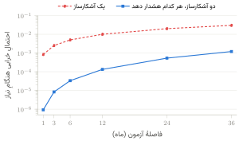
chance a detector is failed when needed (PFD) vs test interval
undetected failure rate 0.02 per year (teaching)
interval months one detector two (either alarms)
1 0.0008 0.000001
3 0.0025 0.000008
6 0.0050 0.000033
12 0.0100 0.000133
24 0.0200 0.000533
36 0.0300 0.001200
halving the interval halves the PFD of one detector; a
second detector cuts it 75 to 300 times here - unless
both share a cause (same dust, same power supply), which
the simple formula ignores and the design must notمثال 32.24 (علتِ مشترک) پرسش. دو آشکارسازِ گاز در یک کانتینر، هر دو روی یک منبعِ تغذیه و در یک گرد و خاک. فرمولِ دو آشکارساز درست است؟
پاسخ. نه. فرمول استقلالِ دو آشکارساز را فرض میکند. علتِ مشترک، مثلِ همان تغذیه یا همان آلودگی، هر دو را با هم از کار میاندازد.
تفسیر. دومین آشکارساز احتمالِ خرابی را در این مثال، با فاصلههای آزمونِ ۳ تا ۱۲ ماه، ۷۵ تا ۳۰۰ برابر کم میکند (در فاصلهٔ ششماههٔ این وارسی ۱۵۰ برابر)، اما فقط اگر مستقل باشد. طرح علتهای مشترک را میشکند: تغذیهٔ جدا، جای جدا یا فناوریِ متفاوت. بازرسی هم بهجای خودِ آشکارساز، شرایطِ مشترکِ هر دو را میپاید. نرخهای واقعی از دادهٔ سازنده و سابقهٔ نگهداری میآیند. وارسی: \(0.02 \times 0.5/2 = 0.005\).
32.6.4 مانورها
four drills of the construction site (synthetic)
drill people counted muster min finding
D1 month 2 41 39 17.5 two contractors not on the list
D2 month 5 52 52 12.0 gate key could not be found
D3 month 8 47 47 9.5 radio dead spot at T07
D4 month 11 44 44 8.0 fire service took the wrong road
the muster time fell from 17.5 to 8.0 minutes and the count
became complete after D1; each drill found a new kind of
gap (people, keys, radio, road) - a drill is judged by what
it finds and fixes, not by being uneventfulایده. مانور با آنچه مییابد و اصلاح میکند سنجیده میشود، نه با بیدردسر گذشتن. هر مانورِ این ساختگاه شکافِ تازهای یافت: فهرستِ افراد، کلیدِ دروازه، نقطهٔ کورِ بیسیم و راهِ اشتباهِ آتشنشانی. زمانِ تجمع از 17.5 به 8.0 دقیقه رسید. آشناکردنِ امدادگرانِ بیرونی با ساختگاه بخشی از همین برنامه است (بخش 32.9.4).
32.6.5 مدیریتِ تغییر
changes that reopen the fire strategy (management of change)
a ninth BESS container -> strategy, C&E, spacing, water, access
new maker's battery firmware -> BMS alarms, C&E inputs, FAT records
control room moved off site -> alarm path, call-out, response times
new site road layout -> responder access, meeting point, plan maps
detector model replaced -> certificate, site test, spares, training
a change is small or large by what it touches, not by its
cost: new firmware is cheap and reopens the C&E matrixایده. کوچکی و بزرگیِ تغییر به آنچه لمس میکند بستگی دارد، نه به هزینهاش. میانافزارِ تازهٔ مدیریتِ باتری ارزان است، اما هشدارها و ورودیهای ماتریسِ علت و معلول را تغییر میدهد. هر تغییر پیش از اجرا ارزیابی میشود: کدام سندها، آزمونها، آموزشها و یدکیها را لمس میکند؟ چه کسی آن را تأیید میکند؟
32.6.6 بازگشت به کار پس از حریق
back to service after a fire (H = hold point)
1. [H] scene released by the fire service and the investigator
2. [-] damage survey; residue and water handled by the permit
3. [H] cause found, or a stated reason why it cannot be
4. [-] repairs and replaced parts with their records
5. [H] detection and isolation re-tested (rungs 3 and 4)
6. [-] strategy and C&E updated for what was learned
7. [H] return to service approved by the named person
restarting a battery or a transformer after a fire is a
decision of the maker, the insurer and the asset owner,
with evidence; the plan names who signs each hold pointایده. راهاندازیِ دوبارهٔ باتری یا ترانسفورماتور پس از حریق تصمیمِ سازنده، بیمهگر و مالکِ دارایی است و شاهد میخواهد. علت پیدا میشود، یا نوشته میشود چرا پیدا نمیشود. آشکارسازی و جداسازی دوباره آزموده میشوند. راهبرد و ماتریسِ علت و معلول با آنچه آموخته شده بهروز میشوند. برنامه میگوید چه کسی هر نقطهٔ توقف را امضا میکند.
- پنج نوع شاهدِ یک قلمِ حفاظت را نام ببرید.
- شاهدِ آتشبندیِ نفوذ چیست؟
- کدام پله سیمکشیِ اشتباهِ خروجی را پیدا میکند؟
- مانور چه چیزی را ثابت نمیکند؟
- احتمالِ خرابی هنگامِ نیازِ یک آشکارساز با نرخِ 0.05 در سال و آزمونِ سالانه چقدر است؟
- چرا دو آشکارساز روی یک تغذیه مستقل نیستند؟
- چه چیزی مانورِ موفق را میسازد؟
- چرا میانافزارِ تازه تغییرِ بزرگی است؟
- پیش از راهاندازیِ دوبارهٔ باتری پس از حریق، کدام نقطههای توقف لازماند؟
32.6.7 نمونهٔ ممیزی دربارهٔ همهٔ مجوزها چه میگوید
برنامه:
python -m companion.ch32.examples_r
python -m companion.ch32.examples_swhat an audit sample says about all permits (exact binomial, 90 %)
sample found correct share interval
20 18 90 % 72- 98 %
20 20 100 % 86-100 %
60 54 90 % 81- 96 %
20 of 20 correct still leaves room for one permit in ten
to be wrong: a clean sample is reassuring, not proof - a
larger sample, or auditing the riskiest permits first,
narrows what the audit can sayایده. اگر از \(n\) مجوزِ نمونه \(k\) تا درست باشند، بازهٔ اطمینانِ دقیقِ دوجملهای سهمِ درست را در همهٔ مجوزها نشان میدهد. بیست مجوزِ کاملاً درست هنوز جا میگذارد که یک مجوز از هر ده نادرست باشد. نمونهٔ پاک اطمینانبخش است، نه اثبات. نمونهٔ بزرگتر، یا ممیزیِ پرریسکترین مجوزها در ابتدا، آنچه ممیزی میگوید را دقیقتر میکند.
32.6.8 کدام پیمانکار متفاوت است: نمودارِ قیف
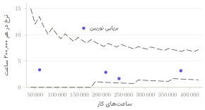
recordable rates by contractor against the site mean (funnel check)
site mean 4.00 per 200,000 h
contractor hours n rate 95 % band for its hours flag
civil works 380,000 6 3.2 1.6- 6.8
electrical 210,000 3 2.9 1.0- 8.6
turbine erection 160,000 9 11.2 0.0- 8.8 above
PV mechanical 240,000 2 1.7 0.8- 8.3
logistics 60,000 1 3.3 0.0-13.3
turbine erection sits above its band: a cause worth
finding (crews, lifts, supervision), not a league table -
small contractors' rates swing widely by chance, so the
band, not the ranking, decides who is looked atمثال 32.25 (باند، نه رتبه) پرسش. کدام پیمانکار بیرون از بازهٔ خودش است؟
پاسخ. پیمانکارِ برپاییِ توربین، با نرخِ 11.2 در برابرِ حدِ بالای 8.8 برای ساعتهای خودش.
تفسیر. این علتی است که باید پیدا شود: گروهها، بالابریها، سرپرستی. این یک جدولِ رتبهبندی نیست. نرخِ پیمانکارانِ کوچک بهطورِ تصادفی زیاد نوسان میکند. پس باند، نه رتبه، تعیین میکند به چه کسی نگاه کنیم (بخش 32.2.7). وارسی: \(9 \times 200{,}000/160{,}000 = 11.25\).
32.6.9 کجا جمع میشوند: پارتوی شبهحادثهها
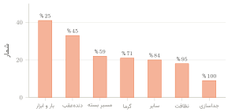
near-miss causes ranked (164 in the construction year, synthetic)
cause count cumulative
load or tool not secured 41 25 %
vehicle reversing 33 45 %
access route blocked 22 59 %
heat, fatigue 21 71 %
other 20 84 %
housekeeping 18 95 %
isolation step skipped 9 100 %
three causes give about 60 % of the near misses and are
where most effort goes - but the nine skipped isolation
steps rank low by count and highest by what they could
have done (lesson A): count and severity are read togetherسه علت حدودِ 60 % شبهحادثهها را میسازند و بیشترِ تلاش به آنها میرود. اما نُه جداسازیِ جاافتاده از نظرِ شمار پایین و از نظرِ پیامدِ ممکن بالاتریناند. شمار و شدت با هم خوانده میشوند (بخش 32.2.8).
32.6.10 زمانِ خروجِ ایمن: موجود در برابرِ لازم
ایده. زمانِ موجود برای خروجِ ایمن زمانی است تا شرایط، مثلاً لایهٔ دود، به افراد برسد. زمانِ لازم برای خروجِ ایمن جمعِ آشکارسازی، هشدار، پیشحرکت، پیمودن و صف است. خروج ایمن است اگر:
\[ \text{ASET} > \text{RSET} = t_\text{det} + t_\text{alarm} + t_\text{pre} + t_\text{travel} + t_\text{queue} \tag{32.18}\]
can people leave before the smoke? ASET vs RSET (control building)
required safe egress time (RSET), seconds
detection (aspirating) 30
alarm and recognition 30
pre-movement (stop, collect) 60
walk 25 m at 1.2 m/s 21
queue at one door (30 people) 23
RSET 164 s; ASET (smoke at 2 m, 300 kW fire, lesson P) 138 s
as drawn the smoke wins by 26 s
second exit and drilled 'leave now': RSET 123 s, margin 15 s
the same with a heat detector (detection 120 s): margin -75 s
pre-movement - people finishing a task - is the largest
part: drills and a second exit turn the result round;
slow detection undoes it - the three work togetherمثال 32.26 (دود برنده میشود، مگر…) پرسش. با چیدمانِ کنونی، افراد پیش از دود از ساختمانِ کنترل خارج میشوند؟
پاسخ. نه. دود ۲۶ ثانیه زودتر میرسد. با خروجیِ دوم و تمرینِ «همین حالا خارج شو» حاشیهٔ ۱۵ ثانیهای پیدا میشود. با آشکارسازِ حرارتی دوباره از دست میرود.
تفسیر. پیشحرکت، یعنی تمامکردنِ کارِ دست، بزرگترین سهم است. تمرین و خروجیِ دوم نتیجه را برمیگردانند و آشکارسازیِ کند آن را خنثی میکند. این سه با هم کار میکنند (بخش 32.4.10). در طراحیِ واقعی، مهندسِ حریق این حساب را با مدلِ دود و دادههای رفتاریِ معتبر انجام میدهد. وارسی: \(30 + 30 + 60 + 21 + 23 = 164\,\text{s}\).
32.6.11 آیا تدبیرِ امنیتی هزینهاش را برمیگرداند
does a security measure pay for itself? (teaching, k u a year)
measure cost/yr events/yr loss/event saved/yr
marked aluminium earth cable 6 1.5 -> 0.4 40 44
alarm at stores 12 2.0 -> 0.8 15 18
guard at every gate, 24 h 180 2.0 -> 0.6 15 21
design and records (cheap, permanent) pay back many times;
manpower is costly for the loss it prevents - and the
community relations of lesson G reduce the events
themselves; measures stay proportionate and lawfulایده. زیانِ سالانهٔ مورد انتظار برابرِ بسامدِ رویداد ضرب در زیانِ هر رویداد است. تدبیری که بسامد را کم میکند، با کاهشِ زیان در برابرِ هزینهاش سنجیده میشود. طراحی و سوابق، که ارزان و ماندگارند، چند برابر برمیگردانند. نیروی انسانی برای زیانی که جلویش را میگیرد پرهزینه است. رابطه با جامعه خودِ رویدادها را کم میکند (بخش 32.8). تدابیر متناسب و قانونی میمانند.
32.6.12 سیلِ هشدار در اتاقِ کنترل
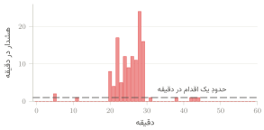
alarms in the control room around a fire at BESS-1 (synthetic)
normal: about 2 alarms in ten minutes
minutes 20-30: 118 alarms - about 12 a minute
an operator handles roughly one considered action a minute:
in a flood the few alarms that matter (fire, isolation
feedback, people) are lost among consequential ones - the
alarm system gives fire and life-safety alarms the top
priority, suppresses the expected follow-on alarms, and
the emergency plan gives the operator a short checklist32.6.13 فهرستِ مواد خطرناک و جعبههای نشت
hazardous materials on site at the peak of construction (teaching)
material basis amount
transformer oil (2 main + 26 unit) 22 x 2 + 3 x 26 m3 122.0 m3
SF6 in 132 kV and 33 kV switchgear teaching 0.6 t
battery electrolyte (in cells) 8 containers 40.0 t
diesel (crane campaign store) ch 31 60.0 m3
lubricants and greases turbines, cranes 8.0 m3
paints and solvents construction 3.0 m3
each has a safety data sheet, a storage rule (bund, cover,
separation), a spill response and a waste route; whether
an amount triggers a permit or a major-hazard regime is
local law (ch 33, 55-57) - the inventory is kept current
because the fire service and the permit both ask for itspill kits by area (teaching: absorb the largest likely spill)
area largest likely spill L kit L kits
refuelling point 200 120 2
crane on its pad 150 120 2
transformer bay 400 240 2
workshop and store 60 50 2
each turbine during service 40 50 1
a kit sized for a drip is useless at a burst hose: the
largest likely spill sets the kit, the bund catches the
rest, and used absorbent is hazardous waste (ch 33)مثال 32.27 (فهرستی که همه میخواهند) پرسش. چرا فهرستِ مواد خطرناک همیشه بهروز نگه داشته میشود؟
پاسخ. چون آتشنشانی و مجوزِ محیطِ زیستی هر دو آن را میخواهند. آتشنشانی باید بداند چه چیزی کجاست، و مجوز به مقدارها بستگی دارد.
تفسیر. هر ماده برگهٔ اطلاعاتِ ایمنی، قاعدهٔ انبار (دیوارهٔ مهار، پوشش، جداسازی)، پاسخ به نشت و مسیرِ پسماند دارد. اینکه مقداری مجوز یا رژیمِ خطرِ بزرگ را فعال کند یا نه، قانونِ محل است (فصلهای ۳۳ و ۵۵ تا ۵۷). جعبهٔ نشت با بزرگترین نشتِ محتمل اندازه میشود و جاذبِ مصرفشده پسماندِ خطرناک است. وارسی: \(22 \times 2 + 3 \times 26 = 122\,\text{m}^3\) روغن.
32.7 ج. تمرینهای کنترلِ ریسک و حفاظت از حریق (مثالهای کارشده)
این بخش دو مثالِ کارشدهٔ فصل را کنار هم میگذارد. مثالِ نخست دفترِ خطرِ حریق و ماتریسِ حفاظت را به یک حالتِ محدودِ آب و زمانِ پاسخ پیوند میدهد و منطقِ آشکارسازی تا اقدام را دنبال میکند. مثالِ دوم یک تحلیلِ خطرِ شغلی برای کارِ نگهداری است. هیچکدام راهحلِ اطفای همگانی یا روالِ کار نمیدهد.
برنامه:
python -m companion.ch32.lab_c
python -m companion.ch32.lab_f32.7.1 مثالِ کارشدهٔ ۱: از دفترِ خطر تا اقدام
مثال 32.28 (مثالِ کارشده: دفترِ خطرِ حریق و ماتریسِ حفاظتِ نیروگاهِ P) پرسش. برای نیروگاهِ P دفترِ خطرِ حریق و ماتریسِ حفاظتِ مفهومی را بر حسبِ بخش بسازید. یک حالتِ دوامِ آب و پوششِ پاسخ را فقط از معیارهای بیانشده و منبعدار حساب کنید. منطقِ آشکارسازی تا هشدار و جداسازی و پاسخ را دنبال کنید، بیآنکه راهحلِ اطفای همگانی تجویز شود.
پاسخ.
- دفتر: نُه سناریو با امتیازِ آموزشی (بخش 32.4.2). باتری با 10 «زیاد» است، به دلیلِ شدت. محوطهٔ ساخت با 9 بیشترین احتمال را دارد.
- ماتریس: هفت بخش و شش پرسش: جلوگیری، غیرفعال، آشکارسازی، جداسازی، اقدام و دسترسی. هر پرسش مالکِ نامبرده دارد (بخش 32.4.4).
- حالتِ محدود: معیارها جایگزیناند و منبعشان نامبرده است: ذخیرهٔ 180 m³ (U-105، فصلِ ۲۹)، دبیِ 3,000 L/min (U-105)، و زمانهای آتشنشانی (A-370). دوام 60 دقیقه است. آتشنشانی در 31 % نمونهها پس از آن میرسد.
- منطق: هشت ورودی و هشت خروجی. سه یافته در پیشنویس و صفر پس از اصلاح (مثال 32.14).
تفسیر. خروجیِ این مثال سه سند است: دفترِ خطرِ حریق، ماتریسِ مفهومیِ حفاظت و پیشنویسِ ماتریسِ علت و معلول. هر سه برای مهندسِ حفاظت از حریق ورودیاند. مثال نشان میدهد کدام پرسشها باید پاسخ بگیرند و عددهای بیانشده به کجا حساساند: آب برای خنککردنِ مجاورهاست و زمانِ رسیدنِ آتشنشانی آن را محدود میکند. مثال انتخابِ سامانهٔ اطفا را به راهبردِ حریق، آزمونهای محصول و مقامِ مسئول وامیگذارد. وارسی: \(180{,}000/3{,}000 = 60\) دقیقه.
32.7.2 مثالِ کارشدهٔ ۲: تحلیلِ خطرِ شغلی
ایده. تحلیلِ خطرِ شغلی کار را به گامها میشکند. برای هر گام خطرها، ریسکِ پیش از کنترل، کنترلها و ریسکِ باقیمانده را مینویسد. گروهی که کار را انجام میدهد آن را مینویسد، با دستورِ سازنده و روالهای ساختگاه.
JHA = [ # (step, hazard, L0, S0, [(kind, control)], L1, S1)
("1 plan, permit, weather", "work started in high wind or heat",
3, 4, [("A", "permit with wind and heat limits"),
("A", "forecast checked")], 1, 4),
("2 climb to the nacelle", "fall from the ladder",
2, 5, [("G", "service lift"), ("G", "fall-arrest rail"),
("A", "rescue kit up")], 1, 5),
("3 isolate the yaw drives", "unexpected movement or energy",
3, 5, [("G", "yaw lock pins"), ("A", "isolation by the permit"),
("A", "verified dead by an authorised person")], 1, 5),
("4 rig the service crane", "dropped load, overload",
2, 4, [("G", "crane rated for the motor"),
("A", "lift plan, exclusion zone")], 1, 4),
("5 remove the old motor", "hand crushed, back strain",
3, 3, [("G", "lifting aid"), ("P", "gloves")], 2, 2),
("6 lower it through the hatch", "fall through the open hatch",
2, 5, [("P", "harness clipped on")], 2, 5),
("7 fit the new motor", "pinch points, wrong torque",
3, 3, [("G", "guide pins"), ("A", "torque record")], 1, 3),
("8 remove locks, test yaw", "movement with a person in reach",
2, 5, [("A", "everyone clear and counted"),
("A", "permit cancelled in order")], 1, 5),
("9 descend, hand back", "fatigue, haste at day's end",
2, 4, [("A", "time limit, buddy check")], 1, 4),
]job hazard analysis: replace a yaw-drive motor (draft)
step before after top control
1 plan, permit, weather 12 high 4 low administrate
2 climb to the nacelle 10 high 5 medium engineer
3 isolate the yaw drives 15 high 5 medium engineer
4 rig the service crane 8 medium 4 low engineer
5 remove the old motor 9 medium 4 low engineer
6 lower it through the hatch 10 high 10 high protect
7 fit the new motor 9 medium 3 low engineer
8 remove locks, test yaw 10 high 5 medium administrate
9 descend, hand back 8 medium 4 low administrate
checker findings: 3
6 lower it through the hatch: severity 5 with only protect
6 lower it through the hatch: residual high
8 remove locks, test yaw: severity 5 with only administratejob hazard analysis: steps 6 and 8 revised, the residual risk
step before after top control
1 plan, permit, weather 12 high 4 low administrate
2 climb to the nacelle 10 high 5 medium engineer
3 isolate the yaw drives 15 high 5 medium engineer
4 rig the service crane 8 medium 4 low engineer
5 remove the old motor 9 medium 4 low engineer
6 lower it through the hatch 10 high 5 medium engineer
7 fit the new motor 9 medium 3 low engineer
8 remove locks, test yaw 10 high 5 medium engineer
9 descend, hand back 8 medium 4 low administrate
checker findings: 0
sum of scores 91 before, 39 after controls
4 steps keep severity 5 at likelihood 1: the climb, the
isolation, the hatch and the yaw test. Controls cut the
likelihood, not the consequence - the permit, the
authorised person and a rescue-ready crew are what hold
those rows at 5 every time the job is done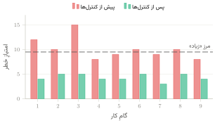
مثال 32.29 (مثالِ کارشده: تعویضِ موتورِ یاو) پرسش. تحلیلِ خطرِ شغلیِ تعویضِ موتورِ یاو در ناسل را بنویسید و نشان دهید کنترلها ریسکِ باقیمانده را چگونه کم میکنند.
پاسخ.
- پیشنویس: سه یافته. پاییندادنِ موتور از دریچهٔ باز فقط با هارنس کنترل شده بود و ریسکِ باقیماندهاش «زیاد» ماند. آزمونِ یاو با شدتِ ۵ فقط کنترلِ اداری داشت.
- بازنگری: نردهٔ دریچه و پاییندادن با وینچ برای گامِ ۶، و قفلِ کلیدِ اسیر روی تابلوی یاو برای گامِ ۸. هر دو کنترلِ مهندسیاند. یافتهها به صفر رسید.
- نتیجه: جمعِ امتیازها از 91 به 39 رسید. هیچ گامی «زیاد» نماند.
تفسیر. چهار گام شدتِ ۵ را با احتمالِ ۱ نگه میدارند: بالا رفتن، جداسازی، دریچه و آزمونِ یاو. کنترلها احتمال را کم کردهاند، نه پیامد را. آنچه این چهار ردیف را هر بار در امتیازِ 5 نگه میدارد مجوز است، فردِ مجاز، و گروهی آماده برای نجات. جداسازی در این تحلیل به نامِ هدفش آمده است، نه به شکلِ روالِ گامبهگام. وارسی: \((91 - 39)/91 = 57\,\%\) کاهش.
تحلیلِ خطرِ شغلی را گروهِ کار با سرپرست و دستورِ سازنده مینویسد و نظامِ مجوز تأییدش میکند. جداسازیها را افرادِ مجاز طبقِ برنامهٔ جداسازیِ پروژه انجام میدهند. امتیازهای این مثال آموزشیاند (A-373).
- سه سندی را که مثالِ نخست میسازد نام ببرید.
- معیارهای حالتِ محدود از کجا آمدند و وضعشان چیست؟
- چرا مثال سامانهٔ اطفا را انتخاب نمیکند؟
- چه کسی تحلیلِ خطرِ شغلی را مینویسد؟
- چرا هارنس بهتنهایی برای دریچهٔ باز کافی نیست؟
- قفلِ کلیدِ اسیر چه نوع کنترلی است و چه میکند؟
- چرا چهار گام هنوز شدتِ ۵ دارند؟
- چه چیزی ریسکِ باقیماندهٔ آن چهار گام را هر بار نگه میدارد؟
32.8 چ. رفاهِ کارکنان و پیوند با جامعه
ایمنی به دروازهٔ ساختگاه محدود نمیشود. کارکنان جایی زندگی میکنند، هر روز رفتوآمد میکنند و از روستا میگذرند. کامیونها از کنارِ مدرسه رد میشوند. کودکی ممکن است به حصارِ پست برسد. این بخش این پیوندها را با عدد نشان میدهد و تعهدهای قانونی را از شرطهای وامدهندگان و تعهدهای خودِ پروژه جدا میکند. فقط الزاماتی به کار میرود که برای پروژه و کشورش مناسب است. هیچ الزامِ قانونیای در این کتاب فرض نشده است و این بخش مشاورهٔ حقوقی نیست. جامعه همان جامعهٔ ساختگیِ فصلهای ۱۴ و ۲۲ است (A-374).
برنامه:
python -m companion.ch32.examples_g32.8.1 محلِ اقامتِ کارکنان
where the outside workers live (peak, teaching)
peak workforce 450; local share 40 %; outside workers 270
camp water at 1.8 x 70 L a day each: 34.0 m3/day
both wells at their safe yield: 56.2 m3/day
share of the wells a camp on site would use: 61 %
a camp on site would take most of the wells while dust
suppression already needs trucked water (ch 29): rented
housing in the town, or a camp with its own supply, is the
choice - each with its own conduct, health and transport
plan agreed with the communityمثال 32.30 (اردوگاه چاهها را میگیرد) پرسش. اردوگاهی در ساختگاه برای 270 کارگرِ بیرونی چه سهمی از آبدهیِ مطمئنِ دو چاه را میگیرد؟
پاسخ. حدودِ 34 m³ در روز، یعنی 61 % از 56 m³.
تفسیر. غبارنشانیِ ساخت هماکنون آبِ تانکری لازم دارد (فصلِ ۲۹). پس دو راه هست: اجارهٔ خانه در شهر، یا اردوگاهی با منبعِ آبِ جداگانه. هر کدام برنامهٔ رفتار، سلامت و جابهجاییِ خودش را دارد و با جامعه هماهنگ میشود. استانداردهای اقامتگاه، مانندِ فضا، بهداشت و ایمنیِ حریق، از قانون و از شرطهای وامدهندگان میآیند (STD-108). وارسی: \(270 \times 70 \times 1.8/1000 = 34.0\,\text{m}^3\).
32.8.2 جابهجاییِ روزانه
moving the workforce every day (18 months, 26 days a month)
average workforce 252; from town 151; 4 buses of 40
by bus: 131,040 vehicle-km; by car (1.5 a car): 3,300,752
expected injury crashes at 0.5 per million vehicle-km: bus 0.07, cars 1.65
the daily drive is one of the largest risks of the whole
project: buses, rested drivers, no driving after a night
shift and a road survey cut it more than any site ruleایده. رانندگیِ روزانه یکی از بزرگترین ریسکهای کلِ پروژه است. اتوبوس، رانندگانِ استراحتکرده، رانندگینکردن پس از نوبتِ شب و بررسیِ راه، ریسک را بیش از هر قاعدهٔ درونِ ساختگاه کم میکنند. نرخِ تصادفِ این درس آموزشی است. حتی اگر نرخِ اتوبوس و خودرو برای هر کیلومتر برابر باشد، اتوبوسها حدودِ بیستوپنج برابر کیلومترِ کمتری میپیمایند.
32.8.3 ترافیکِ ساخت در روستا
construction trucks past the village school (peak month, teaching)
hour trucks school run
6 4
7 10 yes
8 14
9 12
10 10
11 9
12 6
13 9 yes
14 11
15 12
16 10
17 6
18 3
116 trucks a day; 19 pass in the two school hours
holding them for those two hours moves them into the next,
with a marshal at the crossing and a lower speed limit
through the village - agreed with the village, not imposedایده. نگهداشتنِ کامیونها در دو ساعتِ رفتوآمدِ مدرسه آنها را به ساعتِ بعد منتقل میکند. همراهِ آن، راهنمایی در گذرگاه و حدِ سرعتِ کمتر در روستا هم لازم است. این با روستا توافق میشود، نه بر آن تحمیل. ترافیک، گرد و خاک و سروصدای شب بیشترین شکایتها را میسازند (بخش 32.8.4).
32.8.4 سازوکارِ شکایت
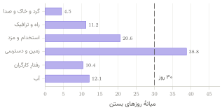
grievance log of the construction year (synthetic)
category count median days to close
dust and noise 14 4.5
road and traffic 9 11.2
hiring and pay 8 20.6
land and access 5 38.8
worker conduct 3 10.4
water 3 12.1
42 grievances; 88 % closed within 30 days; longest 71 days
land and access cases take longest and go to the
escalation step with a named senior person; a grievance
about worker conduct goes to the protection route at once,
never through the open logمثال 32.31 (شکایت از رفتارِ کارگر) پرسش. شکایتی دربارهٔ رفتارِ یک کارگر با اهالی میرسد. از کدام مسیر میرود؟
پاسخ. فوراً از مسیرِ حفاظتی، با محرمانگی و حمایت از شاکی. هرگز در دفترِ باز ثبت نمیشود.
تفسیر. سازوکارِ شکایت برای کارکنان و برای جامعه جداست. هر دو در دسترس، بیهزینه، بیترس از تلافی، با زمانِ پاسخ و با ارجاع به سطحِ بالاتر طراحی میشوند. پروندهٔ زمین و دسترسی طولانیترین زمان را میبرد و به فردِ ارشدِ نامبرده ارجاع میشود. نتیجهٔ هر شکایت به شاکی گفته میشود. وارسی: 88 % از 42 شکایت در ۳۰ روز بسته شد.
32.8.5 دسترسیِ عمومی
public access: what each area protects people from (teaching)
area measure hazard to a visitor
substation fence, locked gates, signs intruder electrocuted
BESS yard fence, signs, responder plan fire, off-gas
PV array fence, signs at the gates DC energised in daylight
turbines locked doors, ice and blade signs falling objects, climbing
construction barriers, banksmen, night lights open trenches, plant
the fence protects the public as much as the plant: a
herder's child at the substation fence is the risk the
signs, the locks and the talks at the village school
address; grazing and paths across the site are agreedایده. حصار به همان اندازه که نیروگاه را حفظ میکند، مردم را هم حفظ میکند. فرزندِ چوپانی کنارِ حصارِ پست همان ریسکی است که تابلوها، قفلها و گفتوگو در مدرسهٔ روستا به آن میپردازند. چرا، گذرگاهها و راههای عبور از ساختگاه با اهالی توافق میشوند. در آرایهٔ خورشیدی، DC در روز برقدار است. زیرِ توربین، یخ و قطعههای افتاده خطرند. در محوطهٔ ساخت، ترانشههای باز و ماشینآلات.
32.8.6 قانون، شرطِ وامدهنده، تعهدِ پروژه
what kind of commitment each item is (teaching, not legal advice)
item kind set by
pay, hours, rest days, safe workplace law law, counsel
worker grievance channel lender loan (STD-108)
accommodation standards lender loan
community grievance mechanism lender+own ESMP (ch 33)
local hiring share 40 % project community deal
school-hour truck hold project village deal
security conduct, use of force law, lender counsel, loan
keeping the kinds apart matters: a legal duty cannot be
traded away, a lender condition is a covenant of the loan,
and a project promise is kept because trust depends on itمثال 32.32 (سه نوع تعهد) پرسش. «سهمِ ۴۰ درصدیِ استخدامِ محلی» و «مزد و ساعتِ کار» چه نوع تعهدیاند؟
پاسخ. استخدامِ محلی تعهدِ خودِ پروژه است که با جامعه توافق شده است. مزد و ساعتِ کار تعهدِ قانونیاند و از قانونِ کار و مشاورِ حقوقی میآیند.
تفسیر. جدا نگهداشتنِ این سه نوع مهم است. وظیفهٔ قانونی را نمیتوان معامله کرد. شرطِ وامدهنده یکی از تعهدهای قراردادِ وام است و نقضش پیامدِ مالی دارد. تعهدِ پروژه نگه داشته میشود چون اعتمادِ جامعه به آن بسته است. رفتارِ نیروهای حفاظت هم قانون است و هم شرطِ وامدهنده: آییننامهٔ رفتار، آموزش و نظارت (بخش 32.10.6). وارسی: هفت قلم در سه نوع.
- چرا اردوگاه در ساختگاهِ نیروگاهِ P مسئلهٔ آب دارد؟
- دو راهِ اقامتِ کارگرانِ بیرونی کداماند؟
- چرا رفتوآمدِ روزانه از ریسکهای بزرگِ پروژه است؟
- کامیونها در ساعتِ مدرسه چه میشوند؟
- پنج ویژگیِ سازوکارِ شکایت را نام ببرید.
- چرا شکایت از رفتارِ کارگر در دفترِ باز ثبت نمیشود؟
- حصارِ پست چه کسی را حفظ میکند؟
- فرقِ وظیفهٔ قانونی، شرطِ وامدهنده و تعهدِ پروژه چیست؟
32.8.7 صدای ساخت در روستا
ایده. صدای یک چشمهٔ نقطهای با دور شدن از آن کم میشود. با ترازِ توانِ صوتیِ \(L_\text{W}\)، در میدانِ آزاد و بیمانع، ترازِ فشارِ صوت در فاصلهٔ \(r\) چنین است:
\[ L_\text{p} = L_\text{W} - 20\log_{10} r - 11 \tag{32.19}\]
construction noise at the village 1.2 km away (point source, teaching)
Lp = Lw - 20 log10(r) - 11 (free field, no screening)
source Lw dB(A) at 1.2 km period
pile driver for PV posts 115 42 day
concrete batching 105 32 day
night concrete pour (pumps) 100 27 night
trucks on the haul road 95 22 day
the pile driver is heard in the village by day; a night
pour reaches about 27 dB(A), audible in a quiet desert
night - the limits come from the permit (ch 33), and
night work near the village is agreed and announcedکوبیدنِ ستونهای PV در روز در روستا شنیده میشود. بتنریزیِ شبانه در شبِ آرامِ بیابان هم شنیدنی است. حدها از مجوز میآیند (فصلِ ۳۳). کارِ شبانه نزدیکِ روستا از پیش توافق و اعلام میشود، و شکایتها از همین سازوکار میرسند (بخش 32.8.4).
32.8.8 کمکهای اولیه و آبِ آشامیدنی
first aid and drinking water for the peak workforce (teaching ratios)
peak workforce 450, two shifts, five work fronts
first aiders at 1 per 25 on each front: 18 (plus one per remote crew)
drinking water at 5 L a person on a hot day: 2.25 m3
at 8 L for heavy work in summer: 3.60 m3
shade and cool water at every front, not only at the
welfare cabins: the walk to water is a heat risk itself;
the ratios come from local law and the site's medical
provider, and a nurse on site at peak is a common choiceمثال 32.33 (راهِ آب خودش ریسک است) پرسش. در اوجِ کار چند امدادگرِ کمکهای اولیه و چه مقدار آبِ آشامیدنی لازم است؟
پاسخ. با نسبتِ آموزشیِ یک به ۲۵ در هر جبهه، 18 نفر بهاضافهٔ یکی برای هر گروهِ دورافتاده. آب در روزِ گرم 2.25 m³ و برای کارِ سنگینِ تابستان 3.6 m³.
تفسیر. سایه و آبِ خنک در هر جبههٔ کار لازم است، نه فقط در کانکسهای رفاهی. خودِ راهِ رسیدن به آب در گرما ریسک است (بخش 32.3.5). نسبتها از قانونِ محل و ارائهدهندهٔ خدماتِ پزشکیِ ساختگاه میآیند. حضورِ یک پرستار در اوجِ کار انتخابی رایج است. وارسی: \(450/25 = 18\).
32.8.9 سرعت و ریسکِ عابر
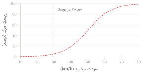
pedestrian fatality risk against impact speed (teaching curve)
P = 1 / (1 + exp(-(v - 50) / 7)), v in km/h (illustrative)
speed km/h risk
20 1 %
30 5 %
40 19 %
50 50 %
60 81 %
70 95 %
the risk climbs steeply between 30 and 60 km/h: a village
speed limit of 30 for site traffic and a marshal at the
school crossing (lesson G) do more than any sign; the
real curve and limits come from road-safety authoritiesایده. ریسکِ عابر میانِ ۳۰ و ۶۰ کیلومتر بر ساعت بهتندی بالا میرود. حدِ ۳۰ کیلومتر برای ترافیکِ ساخت در روستا و راهنمایی در گذرگاهِ مدرسه (بخش 32.8.3) بیش از هر تابلویی اثر دارند. منحنیها و حدهای واقعی از مراجعِ ایمنیِ راه است.
32.8.10 باد، گرد و خاک و روستا
working hours when strong wind blows site dust toward the village
village 3 km north of the PV block (ch 14): wind from 135-225 deg
working hours (06-18 h): 4,380
wind from that sector: 191
... and above 8 m/s at 100 m: 51 (1.2 %)
the prevailing wind blows away from the village; in the few
hours it does not, grading and haul near the village stop
or get extra water - a wind-direction rule set with the
community and the dust plan (ch 29) costs about 1 % of
working time and removes a cause of lesson G's complaintsمثال 32.34 (قاعدهای بر پایهٔ جهتِ باد) پرسش. در چند ساعت از ساعتهای کاری، بادِ تند گرد و خاکِ بلوکِ خورشیدی را به سوی روستا میبرد؟
پاسخ. حدودِ 51 ساعت از 4,380 ساعت، یعنی حدودِ 1 %.
تفسیر. بادِ غالب از روستا دور میوزد. در همان چند ساعت تسطیح و حمل نزدیکِ روستا متوقف میشود یا آبپاشی بیشتر میگیرد. هزینهٔ این قاعده کم است و یکی از علتهای شکایت را از ریشه برمیدارد (مثال 32.31). جای روستا از فصلِ ۱۴ است و قاعده با جامعه و برنامهٔ گرد و خاک (فصلِ ۲۹) تنظیم میشود. وارسی: \(51/4{,}380 = 1.2\,\%\).
32.9 ح. آمادگیِ اضطراری برای همهٔ مخاطرات و نجات
حریق فقط یکی از رویدادهاست. ساختگاهِ دورافتادهٔ نیروگاهِ P برای مصدوم، آسیبِ برقی، فردِ آویزان در هارنس، نجات از ناسل، توفان، سیلِ وادی، راهِ بسته، قطعِ ارتباط، نشت، ورودِ غیرمجاز و بستنِ دروازه هم برنامه میخواهد. برنامهٔ اضطراری برای همهٔ مخاطرات سطحهای پاسخ، نقشها، صلاحیتها، مرزِ پاسخِ نخست، ارتباطات، کمکِ متقابل، مانورها و بازیابی را تعیین میکند. برنامههای نجات و پزشکی را ارائهدهندگانِ صلاحیتدار مینویسند. امنیتِ فیزیکیِ ساختگاه در بخشِ خ (بخش 32.10) و تمرینِ یکپارچهٔ آمادگی در بخشِ د (بخش 32.11) میآیند. هیچکدام روالِ تاکتیکی نمیدهند (A-375).
برنامه:
python -m companion.ch32.lab_h32.9.1 سناریوها و سطحهای پاسخ
SCENARIOS = [ # (scenario, level, first response on site, outside help)
("medical emergency (illness)", 2, "first aider, AED", "ambulance"),
("electrical injury", 2, "isolate by plan, first aid", "ambulance"),
("person suspended in a harness", 2, "site rescue team", "ambulance"),
("injured person in a nacelle", 2, "site rescue team", "ambulance"),
("fire (any area, lesson C)", 3, "alarm, people, isolate",
"fire service"),
("dust storm, lightning, heat wave", 1, "stop work, shelter", "-"),
("wadi flood at the substation", 2, "evacuate low ground",
"civil defence"),
("access road blocked", 1, "second route, hold work", "road authority"),
("loss of communications", 1, "radio, satellite, stop work", "-"),
("oil or electrolyte spill", 1, "contain, report",
"environment office"),
("intrusion or theft", 1, "report, do not confront", "police"),
("gate blocked by a protest", 1, "liaison officer, hold",
"local authority"),
]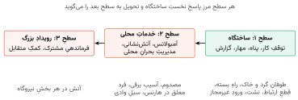
scenarios and response levels (1 site, 2 local services, 3 major)
medical emergency (illness) - level 2
on site: first aider, AED; outside: ambulance
electrical injury - level 2
on site: isolate by plan, first aid; outside: ambulance
person suspended in a harness - level 2
on site: site rescue team; outside: ambulance
injured person in a nacelle - level 2
on site: site rescue team; outside: ambulance
fire (any area, lesson C) - level 3
on site: alarm, people, isolate; outside: fire service
dust storm, lightning, heat wave - level 1
on site: stop work, shelter; outside: -
wadi flood at the substation - level 2
on site: evacuate low ground; outside: civil defence
access road blocked - level 1
on site: second route, hold work; outside: road authority
loss of communications - level 1
on site: radio, satellite, stop work; outside: -
oil or electrolyte spill - level 1
on site: contain, report; outside: environment office
intrusion or theft - level 1
on site: report, do not confront; outside: police
gate blocked by a protest - level 1
on site: liaison officer, hold; outside: local authority
the site's first response has limits it states: first aid,
not treatment; alarm and isolation, not firefighting; report
and record, never confront - beyond them, outside servicesایده. پاسخِ نخستِ ساختگاه مرزهایی دارد که برنامه به صراحت مینویسد. کمکهای اولیه میدهد، نه درمان. هشدار و جداسازی میکند، نه آتشنشانی. گزارش و ثبت میکند، هرگز درگیری. بیرون از این مرزها، خدماتِ بیرونی وارد میشوند. برنامه برای هر سطح میگوید چه کسی تصمیم میگیرد، چه کسی خبر میدهد و تحویل به سطحِ بعد کِی است.
32.9.2 نجات از ناسل: بودجهٔ زمان
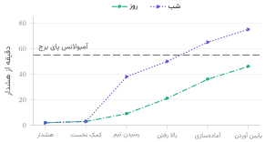
rescue from a nacelle: time budget (minutes, teaching)
step day night
alarm by radio, location confirmed 2 2
colleague starts first aid in the nacelle 1 1
rescue team reaches the tower 6 35
climb by service lift 12 12
assess, package, prepare descent 15 15
lower to the ground by rescue device 10 10
casualty on the ground after 46 min by day, 75 by night
ambulance at the tower after about 55 min (mobilise 10,
35 km, access 10); hospital 45 min further
by day the casualty is down before the ambulance arrives;
by night the on-call team adds half an hour. The plan's
answer is not a faster formula: two trained people on
every crew, rescue kit in each nacelle, and night work
only with the team on site - with times agreed with the
medical provider, who sets what is acceptableمثال 32.35 (پاسخ فرمولِ تندتر نیست) پرسش. مصدوم در شب کِی به زمین میرسد و چه چیزی آن را کوتاه میکند؟
پاسخ. پس از 75 دقیقه. گروهِ آمادهباش نیم ساعت به آن میافزاید.
تفسیر. پاسخ در سازماندهی است: دو فردِ آموزشدیده در هر گروه، تجهیزاتِ نجات در هر ناسل، و کارِ شب فقط وقتی گروهِ نجات در ساختگاه است. زمانها با ارائهدهندهٔ خدماتِ پزشکی توافق میشوند و او میگوید چه زمانی پذیرفتنی است (U-111). در روز، مصدوم پیش از رسیدنِ آمبولانس پایین است و تحویل در پای برج انجام میشود. وارسی: \(2+1+35+12+15+10 = 75\).
32.9.3 ارتباطات و جایگزینها
communications at the twelve turbine pads (survey, synthetic)
mobile coverage missing at 4: T05, T07, T08, T11
site radio reaches all pads; one repeater serves T07-T08
fallback order: site radio -> satellite phone in each duty
vehicle -> runner to the substation; a crew with neither
radio nor satellite phone does not start work at a gap pad
loss of the repeater leaves T07 and T08 with satellite onlyایده. پوششِ تلفنِ همراه روی دشت ناقص است. ترتیبِ جایگزینها نوشته شده است: بیسیمِ ساختگاه، تلفنِ ماهوارهای در هر خودروی کشیک، و در نهایت پیک به پست. گروهی که نه بیسیم دارد و نه تلفنِ ماهوارهای، در سکوی بیپوشش کار را شروع نمیکند. آزمونِ هفتگیِ ارتباطات بخشی از برنامهٔ تمرینهاست (بخش 32.9.4).
32.9.4 برنامهٔ تمرینها، کمکِ متقابل و بازیابی
the exercise programme (teaching frequencies)
exercise how often who
table-top of one scenario quarterly managers, control room
rescue drill at height monthly per team rescue teams
evacuation and muster twice a year everyone on site
full exercise with services yearly fire, ambulance, police
communications test weekly control room
each exercise ends with findings, owners and dates, and
the next one tests whether those fixes workedایده. برنامهٔ اضطراری با تمرین زنده میماند. کمکِ متقابل با همسایگان، مانندِ معدن، کارخانه یا نیروگاهِ دیگر، از پیش نوشته میشود: چه کسی چه تجهیزی را با چه شرطی میدهد. بازیابی هم بخشی از برنامه است: حمایت از افراد، بازبینیِ رویداد، اصلاحها و بازگشتِ ایمن به کار. ارائهدهندگانِ صلاحیتدارِ نجات و پزشکی برنامه را تأیید میکنند و سابقهٔ تمرینها شاهدِ آمادگی است.
برنامههای نجات از ارتفاع، کمکهای اولیه و انتقالِ پزشکی را ارائهدهندگانِ صلاحیتدار مینویسند و آموزش میدهند. تدابیرِ امنیتی با قانونِ محل، مشاورِ حقوقی و شرطهای وامدهندگان تنظیم میشوند. این کتاب جزئیاتِ تاکتیکیِ امنیت را نمیدهد.
- سه سطحِ پاسخ را با یک نمونه برای هر کدام نام ببرید.
- مرزهای پاسخِ نخستِ ساختگاه چیست؟
- چرا نجات از ناسل در شب طولانیتر است و چه چیزی کوتاهش میکند؟
- چه کسی میگوید زمانِ پاسخ پذیرفتنی است؟
- ترتیبِ جایگزینهای ارتباطی را بنویسید.
- کمکِ متقابل چیست و چه چیزی از پیش نوشته میشود؟
- بازیابی در برنامهٔ اضطراری چه بخشهایی دارد؟
32.9.5 راه تا محلِ تجمع در آرایهٔ خورشیدی
walking to a muster point across the PV array (teaching)
block size km muster points farthest walk m minutes at 4 km/h
1.5 1 1061 16
1.5 2 839 13
1.5 4 530 8
one muster point for a 1.5 km block means a quarter-hour
walk in the heat or smoke; four points halve it to about
eight minutes, and each crew knows its own point and the
second one upwind (lesson C)مثال 32.36 (یکربع پیاده در دود) پرسش. با یک محلِ تجمع برای بلوکِ 1.5 km، دورترین کارگر چند دقیقه راه دارد؟
پاسخ. حدودِ 16 دقیقه با سرعتِ 4 km/h. با چهار محلِ تجمع به حدودِ 8 دقیقه میرسد.
تفسیر. پیادهرویِ یکربعی در گرما یا دود خودش خطر است. هر گروه محلِ تجمعِ خودش و یک جایگزینِ بادگیر را میشناسد (بخش 32.4.7). شمارشِ افراد در هر محل با فهرستِ ورود و خروجِ همان روز انجام میشود (بخش 32.6.4). وارسی: \(1500/\sqrt{1} \times 0.71 = 1065\,\text{m}\) و \(1065/4000 \times 60 = 16\) دقیقه.
32.9.6 فاصلهٔ دستگاهِ شوک و نخستین شوک
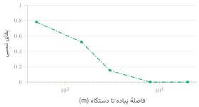
a defibrillator's distance and the time to the first shock (teaching)
survival of a cardiac arrest falls about 10 % a minute without
a shock (a common rule of thumb; the medical provider decides)
AED walk m (each way) minutes to shock survival relative to 1 min
50 3.2 0.78
150 5.8 0.52
300 9.5 0.15
800 22.0 0.00
2000 52.0 0.00
an AED in the welfare cabin is minutes away from a PV
block: AEDs go in every site vehicle and at each work
front, with trained first aiders (lesson G), so the
first shock comes before the ambulance (lab H)مثال 32.37 (شوک پیش از آمبولانس) پرسش. اگر دستگاهِ شوک 300 m دور باشد، نخستین شوک کِی داده میشود؟
پاسخ. پس از حدودِ 9.5 دقیقه، با بقای نسبیِ حدودِ 15 %. با 50 m پس از حدودِ سه دقیقه.
تفسیر. دستگاهِ شوکی که در کانکسِ رفاهی است دقیقهها با بلوکِ خورشیدی فاصله دارد. پس دستگاهها در هر خودروی ساختگاه و هر جبههٔ کار گذاشته میشوند، با امدادگرانِ آموزشدیده (مثال 32.33)، تا نخستین شوک پیش از آمبولانس داده شود (بخش 32.9.2). قاعدهٔ ده درصد در دقیقه آموزشی است و ارائهدهندهٔ خدماتِ پزشکی تصمیم میگیرد. وارسی: \(1 + 2 \times 300/80 + 1 = 9.5\) دقیقه.
32.9.7 بُردِ بیسیم
ایده. بُردِ دیدِ مستقیمِ دو آنتن به ارتفاعهای \(h_1\) و \(h_2\) (بر حسبِ متر) روی زمینِ هموار با انحنای زمین محدود است:
\[ d \approx 3.57\left(\sqrt{h_1} + \sqrt{h_2}\right)\ \text{km} \tag{32.20}\]
line-of-sight radio range: d = 3.57 (sqrt h1 + sqrt h2) km
antenna 1 m antenna 2 m range km
1.5 1.5 8.7
1.5 10.0 15.7
1.5 30.0 23.9
100.0 1.5 40.1
two hand-held radios see about 9 km over flat ground, but a
ridge or the hollow at T07-T08 blocks them: a repeater on
a mast or on the substation's tower extends the reach,
and a nacelle at 100 m sees across the whole site - the
survey of lab H checks each pad, not the formulaدو بیسیمِ دستی روی زمینِ هموار حدودِ ۹ کیلومتر یکدیگر را میبینند، اما پشته یا گودیِ T07 و T08 راه را میبندد. تکرارکننده روی دکل یا روی برجِ پست بُرد را بیشتر میکند. پیمایشِ آزمایشگاهِ ح هر سکو را جداگانه وارسی میکند، نه فرمول را (بخش 32.9.3).
32.9.8 فرود از ناسل با دستگاهِ فرود
evacuating a nacelle with a descent device (teaching)
people set-up min descent m/s total min
1 3.0 0.9 5.9
2 3.0 0.9 8.7
3 3.0 0.9 11.6
self-evacuation of a two-person crew takes under ten
minutes - far quicker than any outside help (lab H), if
the device is in the nacelle, inspected, and both people
have practised with it; the maker's device and the site's
rescue plan decideخروجِ خودِ گروهِ دونفره از ناسل کمتر از ده دقیقه طول میکشد، بسیار زودتر از هر کمکِ بیرونی. این فقط وقتی درست است که دستگاه در ناسل باشد، بازرسی شده باشد و هر دو نفر با آن تمرین کرده باشند. دستگاهِ سازنده و برنامهٔ نجاتِ ساختگاه تصمیم میگیرند.
32.9.9 هزینهٔ رویدادها
برنامه:
python -m companion.ch32.examples_twhat a year of incidents costs (teaching, k u)
kind n direct each indirect x total
lost-time injury 3 25.0 4.0 375
recordable, no lost time 8 3.0 4.0 120
property damage (crane, vehicle) 6 40.0 1.5 600
near miss investigated 30 0.5 1.0 30
total about 1,125 k u a year
the indirect part - stopped work, investigation, delay,
replacement crew, reputation - is several times the
direct cost: prevention pays in money too, but the case
for it rests on people, not on this tableایده. هزینهٔ رویداد دو بخش دارد. بخشِ مستقیم درمان، تعمیر و غرامت است. بخشِ غیرمستقیم کارِ متوقفشده، بررسی، تأخیر، گروهِ جایگزین و آبرو است، که اغلب چند برابرِ بخشِ مستقیم است. پیشگیری از نظرِ پولی هم میصرفد، اما دلیلِ اصلیِ آن مردماند، نه این جدول.
32.9.10 پیمایشِ فضای ایمنی
safety-climate survey: managers vs workers (scale 1-5, synthetic)
25 managers, 180 workers; gap with its 95 % margin
statement managers workers gap
I can stop work if unsafe 4.2 3.6 0.6 +/- 0.2
near misses are acted on 4.0 3.1 0.8 +/- 0.2
supervisors put safety first 4.4 3.4 1.1 +/- 0.2
I have the right tools 3.6 3.5 0.1 +/- 0.3
managers rate every statement higher; the widest gaps -
supervisors' priorities and acting on near misses - are
where workers do not yet trust the system, while the
tools gap is within its margin: the survey points to
conversations to have, not to scores to publishمثال 32.38 (فاصله با حاشیهاش) پرسش. بزرگترین فاصلهٔ دیدِ مدیران و کارگران در کدام گزاره است و کدام فاصله معنادار نیست؟
پاسخ. «سرپرستان ایمنی را مقدم میدارند» با 1.1، و پس از آن «به شبهحادثهها رسیدگی میشود» با 0.8. فاصلهٔ «ابزارِ درست دارم» با 0.1 ± 0.3 درونِ حاشیه است.
تفسیر. کارگران هنوز به همین دو جای نظام اعتماد ندارند. پیمایش نشان میدهد کدام گفتوگوها لازم است، نه کدام امتیاز را منتشر کنیم. حاشیهٔ هر فاصله با حجمِ نمونه میآید و فاصلهٔ کوچکتر از حاشیه نتیجه نیست (بخش 32.6.7). وارسی: میانگینهای گردشده 4.4 و 3.4 هستند و فاصلهٔ محاسبهشده از عددهای گردنشده 1.1 است.
32.9.11 بازدهِ کاهندهٔ بازرسیها
ایده. اگر هر بازرسی هر نقص را با احتمالِ \(k\) ببیند، شمارِ نقصهای یافتهشده پس از \(n\) بازرسی چنین است:
\[ N(n) = N_0\left(1 - e^{-k n}\right) \tag{32.21}\]
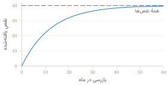
defects found against inspections a month (teaching: 40 present, k 0.08)
inspections defects found found by the last 5
0 0.0 0.0
5 13.2 13.2
10 22.0 8.8
20 31.9 9.9
30 36.4 4.4
40 38.4 2.0
60 39.7 1.3
the first inspections find most defects; later ones find
few - which is why inspections rotate areas and change
focus (the Pareto of lesson R) rather than repeat the
same walk, and why workers' own reports matterبازرسیهای نخست بیشترِ نقصها را پیدا میکنند و بعدیها کم. پس بازرسیها محدوده و تمرکز را عوض میکنند، مثلاً با پارتوی شبهحادثهها (بخش 32.6.9)، و همان مسیر را تکرار نمیکنند. گزارشهای خودِ کارگران هم برای همین ارزشمندند.
32.9.12 چرخیدنِ خودروی آتشنشانی
can a fire appliance turn at the pads and gates? (teaching radii)
appliance turning circle: inner 9.0 m, outer 16.0 m; swept width 7.0 m
location road width m bend radius m ok?
site road bend 6.0 25.0 yes
pad junction 6.0 12.0 NO
substation gate 5.0 10.0 NO
BESS yard entry 8.0 14.0 NO
the roads were sized for cranes and trailers (ch 29), but
tight gate and junction bends can stop a fire appliance:
the fire service drives the routes in a familiarisation
visit (lesson E) and its own vehicle data decideایده. راهها برای جرثقیل و تریلی اندازه شدهاند (فصلهای ۲۹ و ۳۱). اما پیچهای تنگِ دروازهها و تقاطعها ممکن است خودروی آتشنشانی را متوقف کنند. آتشنشانی در بازدیدِ آشناسازی مسیرها را میراند (بخش 32.6.4) و دادهٔ خودروی خودش تصمیم میگیرد.
32.9.13 دود به سوی روستا: یک غربالگری
ایده. مدلِ گاوسی غلظتِ زمینیِ آلاینده را در فاصلهٔ \(x\) پاییندستِ یک رهایش تخمین میزند. با دبیِ رهایشِ \(Q\)، سرعتِ باد \(u\)، ارتفاعِ مؤثرِ \(H\) و پراکندگیهای \(\sigma_y\) و \(\sigma_z\):
\[ C(x) = \frac{Q}{\pi\,u\,\sigma_y\,\sigma_z}\exp\!\left(-\frac{H^2}{2\sigma_z^2}\right) \tag{32.22}\]
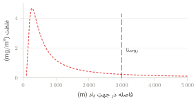
smoke-plume screen toward the village (Gaussian, neutral, teaching)
PLACEHOLDER release 50 g/s, wind 4 m/s, effective height 20 m
distance m ground concentration mg/m3
300 4.60
600 2.44
1000 1.20
2000 0.43
3000 0.24
5000 0.12
the ground concentration peaks within a few hundred metres
and falls with distance; at the village 3 km away it is
a small fraction of the peak - but wind direction, night
inversions and the real release decide, so advice to
shelter or leave comes from the fire service and the
authority, with specialists' models (ch 33)مثال 32.39 (تصمیمِ ماندن یا رفتن) پرسش. غلظتِ زمینی در روستا چه کسری از بیشینه است؟
پاسخ. حدودِ 0.24 در برابرِ بیشینهٔ حدودِ 4.6 mg/m³ در چند صد متری، یعنی حدودِ پنج درصد.
تفسیر. جهتِ باد، وارونگیِ دمای شبانه و رهایشِ واقعی تصمیم را تعیین میکنند. توصیه به ماندن در خانه یا ترکِ آن را آتشنشانی و مقامِ مسئول با مدلهای متخصصان میدهند. ساختگاه فقط اطلاعات و هشدار به جامعه را آماده دارد (بخش 32.5.5، فصلِ ۳۳). عددِ رهایش جایگزین است. وارسی: \(0.24/4.6 = 0.05\).
- چرا هزینهٔ غیرمستقیم از هزینهٔ مستقیم بیشتر است؟
- فاصلهٔ دیدِ مدیران و کارگران کِی معنادار است؟
- با \(k = 0.08\)، ده بازرسی چه کسری از نقصها را پیدا میکند؟
- چرا بازرسیها تمرکز را عوض میکنند؟
- چه کسی تصمیم میگیرد خودروی آتشنشانی از دروازه میگذرد یا نه؟
- چرا بیشینهٔ غلظت در چند صد متری است و نه کنارِ آتش؟
- چه کسی به مردم توصیهٔ ماندن یا رفتن میدهد؟
32.9.14 کارِ تنها: کِی کسی متوجه میشود
برنامه:
python -m companion.ch32.examples_u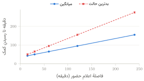
an injured lone worker: when are they missed? (teaching)
check-in interval min mean wait to be missed + response worst case
15 8 42 50
30 15 50 65
60 30 65 95
120 60 95 155
240 120 155 275
a two-hour check-in leaves an injured worker an hour on
average before anyone looks: lone work at a remote pad
is avoided, and where it cannot be, a check-in of about
30 minutes or a man-down alarm on the radio is usedمثال 32.40 (یک ساعت تا اینکه کسی نگاه کند) پرسش. با اعلامِ حضورِ هر دو ساعت، کارگرِ آسیبدیده بهطورِ میانگین کِی کمک میگیرد؟
پاسخ. حدودِ 95 دقیقه: یک ساعت تا اینکه کسی متوجه شود و 35 دقیقه برای رسیدن. در بدترین حالت 155 دقیقه.
تفسیر. در سکوی دورافتاده از کارِ تنها پرهیز میشود. جایی که نمیشود، اعلامِ حضورِ حدودِ ۳۰ دقیقهای یا هشدارِ افتادنِ فرد روی بیسیم به کار میرود (بخش 32.9.3). زمانها با زمانِ پاسخِ آزمایشگاهِ ح سنجیده میشوند (بخش 32.9.2). وارسی: \(120/2 + 35 = 95\) دقیقه.
32.9.15 خودرو و پیاده در دروازه
ایده. اگر خودروها با نرخِ \(\lambda_\text{v}\) و پیادهها با نرخِ \(\lambda_\text{p}\) از دروازه بگذرند، شمارِ «برخوردِ نزدیک»، یعنی گذرِ پیاده در فاصلهٔ \(\tau\) ثانیه از عبورِ خودرو، تقریباً \(\lambda_\text{v}\lambda_\text{p}\,2\tau\) است.
vehicles and walkers meeting at the laydown gate (Poisson, teaching)
conflict: a walker crosses within 10 s of a vehicle passing
vehicles/h walkers/h conflicts/h per 10-hour day
10 20 1.11 11.1
40 60 13.33 133.3
40 0 0.00 0.0
a busy shared gate sees over a hundred near-meetings a
day; a separate pedestrian gate (last row) removes them -
the engineering control beats any amount of attention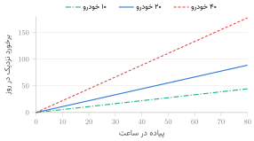
دروازهٔ مشترکِ شلوغ بیش از صد برخوردِ نزدیک در روز دارد. دروازهٔ جداگانه برای پیادهها آنها را از میان برمیدارد. کنترلِ مهندسی از هر اندازه دقت و توجه مؤثرتر است (بخش 32.2.3).
32.9.16 سایه در روزِ گرم
shade on a hot day (teaching: heavy work 45 min, rest 15 min an hour)
peak workforce 450; share in heavy work 60 %
people resting at any moment: 68
seats in shade at 1.5 m2 each: 101 m2 spread over the fronts
shade only at the welfare cabins sends people on a walk
in the sun for every break; shelters move with the work
fronts, with water (lesson G); the work-rest pattern
comes from the site's heat procedure32.9.17 بالارفتن از برجِ صدمتری
climbing a 100 m tower by ladder (teaching, 90 kg with tools)
mechanical work m g h = 88 kJ; at 20 % efficiency 441 kJ (106 kcal)
climb time min average power W effort
10 736 very heavy
15 491 very heavy
25 294 moderate
a ladder climb is very heavy work before the job starts,
worse in a hot nacelle: the service lift is a safety
device, a fit-for-climbing check is part of competence,
and a tired climber is the one who misses a clip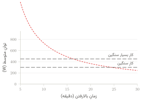
مثال 32.41 (بالابرِ خدمت یک وسیلهٔ ایمنی است) پرسش. بالارفتن از نردبانِ برجِ 100 m در ۱۵ دقیقه چه توانی از بدن میخواهد؟
پاسخ. حدودِ 490 W بهطورِ میانگین، که کارِ بسیار سنگین است، پیش از آنکه کارِ اصلی شروع شود.
تفسیر. در ناسلِ گرم این تلاش بیشتر هم میشود. بالابرِ خدمت یک وسیلهٔ ایمنی است. وارسیِ آمادگیِ بدنی برای بالارفتن بخشی از صلاحیت است و کوهنوردِ خسته همان کسی است که قلاب را جا میاندازد (بخش 32.3.5). وارسی: \(90 \times 9.81 \times 100/0.2 = 441\,\text{kJ}\) و \(441{,}000/900 = 490\,\text{W}\).
32.10 خ. امنیتِ فیزیکیِ ساختگاه
نیروگاهِ P در دشتی باز است: آرایهای چندکیلومتری، دوازده سکوی توربین، یک پست و یک انبار. امنیتِ فیزیکی از مردم و داراییها در برابرِ ورودِ غیرمجاز، دزدی، خرابکاری و آتشافروزی محافظت میکند. ابزارهایش طراحی، سوابق و رابطهاند، نه تاکتیک. این بخش سه قاعده دارد. نخست، اقدامها متناسب با ریسکاند و ریسک را برای همه میسنجند، از جمله برای کسی که بیاجازه وارد میشود. دوم، امنیت به حقوقِ مردم احترام میگذارد. حدِ آن را قانونِ محل، تعهدهای وامدهندگان (STD-108) و سازوکارِ شکایت تعیین میکنند (بخش 33.3.9.3). سوم، طرحِ امنیت تنها نیست. به برنامهٔ اضطراری (بخش 32.9)، به پاسخ به رویدادِ فناوریِ عملیاتی (بخش 36.4) و به پیوستگیِ کار گره خورده است. این بخش هیچ روالِ تاکتیکی، الگوی نگهبانی یا جای تجهیزات نمیدهد. هیچکس به مهاجم نزدیک نمیشود و هیچکس تنها وارد ساختمانِ برقدار نمیشود (A-375).
برنامه:
python -m companion.ch32.lab_i32.10.1 طرحِ مدیریتِ امنیت: ده جزء و شاهدِ هر کدام
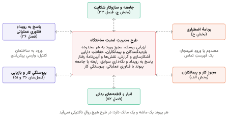
the site-security management plan: ten elements
element evidence that it works
risk assessment screen reviewed yearly and after each event
states: threats, who is harmed, proportionate measures; links: H, G
access authorisation gate records reconciled weekly
states: who may enter which area and why; links: A (permits)
visitors and contractors visitor log complete, inductions in date
states: host, induction, escort where needed; links: A (contractors)
asset protection stock counts match the records
states: stores, marking, records of spares and cable; links: ch 52
detection and reporting notification times in the incident log
states: what is reported to whom, how fast; links: control room
roles and conduct training records; complaints reviewed
states: who does what; conduct code; training; links: ch 33
incident response, evidence records kept unchanged; police reference
states: report, keep records, never confront; links: H
community interface grievances closed with an outcome
states: liaison; grievance route for security; links: G, ch 33
OT incident link OT check logged after each entry event
states: entry to a control building -> OT check; links: ch 36
business continuity restore times exercised
states: what is lost, how and when restored; links: ch 36, ch 51
an element without evidence is a declaration; the plan is
reviewed with the emergency plan (H) and the OT incident
response plan (ch 36), and owned by a named managerایده. طرحِ مدیریتِ امنیت میگوید از چه چیزی، در برابرِ چه کسی، با چه اقدامی و با چه شاهدی محافظت میشود. ستونِ مهمِ خروجی ستونِ شاهد است. «دروازه کنترل میشود» اعلام است. «سوابقِ دروازه هر هفته با مجوزها تطبیق داده میشوند و هر یافته مالک دارد» شاهد است. دو جزءِ آخر طرح را به فصلهای دیگر وصل میکنند. ورود به ساختمانِ کنترل ممکن است تجهیزاتِ شبکه را در دسترس گذاشته باشد. پس باید یک وارسیِ فناوریِ عملیاتی را به راه بیندازد (بخش 36.4). دزدیِ یک کابل ممکن است صادرات را قطع کند. پس طرح باید بگوید چه کارکردی از دست میرود و چگونه بازمیگردد (بخش 36.4.7). مالکِ طرح مدیری با نام است. طرح هر سال و پس از هر رویداد، همراه با برنامهٔ اضطراری بازبینی میشود.
32.10.2 غربالِ متناسبِ ریسک
physical-security risk screen (proportionate, teaching)
threat L S score band
cable theft (copper earth, spares) 4 3 12 high
measures: aluminium where allowed, marked cable, stores locked
intrusion at the substation 2 5 10 high
measures: fence, signs, locks, alarm to control room
vandalism or stone throwing 3 2 6 medium
measures: community relations, quick repair
theft by insiders 3 2 6 medium
measures: access badges, stores control, audits
module theft from the array edge 2 2 4 low
measures: fasteners, records, community links
arson of grass near the array 1 4 4 low
measures: firebreaks, patrols with the community
the measures are design, records and relations first;
detection reports to the control room and the police;
security staff follow a conduct code, are trained in it
and never act beyond what law and the lenders allow (G)مثال 32.42 (ریسک برای چه کسی؟) پرسش. ورودِ غیرمجاز به پست با شدتِ ۵ ردهبندی شده است. شدت برای چه کسی است؟
پاسخ. بیشتر برای خودِ واردشونده: برقگرفتگی در پستِ فشارقوی کشنده است.
تفسیر. امنیتِ فیزیکی از امنیتِ سایبریِ سامانههای عملیاتی (فصلِ ۳۶) و از رفتارِ نیروهای حفاظت با جامعه (فصلِ ۳۳) جداست، اما با هر دو و با برنامهٔ اضطراری پیوند دارد. اقدامها متناسب با ریسکاند و به این ترتیب میآیند: طراحی (حصار، قفل، تابلو)، سوابق (کارتهای ورود، دفترِ بازدیدکنندگان، کنترلِ انبار) و رابطه با جامعه. هر آشکارسازی به اتاقِ کنترل و پلیس گزارش و ثبت میشود. نیروهای حفاظت آییننامهٔ رفتار دارند و در آن آموزش میبینند. هرگز هم فراتر از آنچه قانون و وامدهندگان اجازه میدهند عمل نمیکنند (STD-108). وارسی: \(2 \times 5 = 10\)، «زیاد».
32.10.3 سوابقِ دروازه و شمارشِ تجمع
EMPLOYEES = [f"E{k:02d}" for k in range(1, 31)]
FIRMS = {"A": 10, "B": 8, "C": 5} # contractor firms and people
INDUCTION_UNTIL = {f"B{k:02d}": 4 for k in (2, 5, 7)} # expired after day 4
SUBSTATION_LIST = set(EMPLOYEES[:8]) | {f"C{k:02d}" for k in range(1, 6)}
VISITORS = [(f"V{k:02d}", 1 + k % 6, k not in (4, 9)) for k in range(1, 11)]
# (visitor, day, host recorded)a week of gate records reconciled with the authorisations
entries: 378 at two gates (main, substation)
contractor entries after the induction expired: 6 (3 people, days 5-6)
visitors without a host recorded: 2
substation entries without area authorisation: 2
entries without a recorded exit: 4 (all on day 5)
day 5 at 18:00 the records show 4 people on site;
the call-round found all of them had left (exit not
badged) - a muster built on these records would have
searched for 4 people who were at home
owners: inductions -> the contractor's supervisor; area
list -> the substation authority; exits -> the gate
process; hosts -> the visitor procedureمثال 32.43 (چهار نفری که در خانه بودند) پرسش. سوابقِ یک هفتهٔ دو دروازه با مجوزها تطبیق داده شدهاند. چه یافتههایی هست و کدام به برنامهٔ اضطراری مربوط میشود؟
پاسخ. چهار نوع یافته هست. شش ورودِ پیمانکار پس از پایانِ اعتبارِ آموزشِ بدوِ ورود ثبت شده است (سه نفر در روزهای ۵ و ۶). دو بازدیدکننده میزبانِ ثبتشده ندارند. دو ورود به پست بیمجوزِ آن محدوده بوده است. چهار ورود در روزِ ۵ خروجِ ثبتشده ندارند. یافتهٔ آخر به برنامهٔ اضطراری مربوط است. در ساعتِ ۱۸ روزِ ۵، سوابق چهار نفر را در ساختگاه نشان میدهند، اما تماسها نشان داد هر چهار نفر رفته بودند.
تفسیر. کنترلِ دسترسیِ ساختگاه فقط برای امنیت نیست. شمارش در محلِ تجمع هنگامِ اضطرار بر همین سوابق تکیه دارد (بخش 32.9.5). اگر آن شب حریقی رخ داده بود، گروهها دنبالِ چهار نفری میگشتند که در خانه بودند. هر یافته یک مالک دارد. اعتبارِ آموزش با سرپرستِ پیمانکار است و فهرستِ مجازِ پست با مسئولِ پست. خروجهای ثبتنشده به روالِ دروازه برمیگردند و میزبان به روالِ بازدیدکنندگان. تطبیق هیچ تاکتیکی ندارد. فقط دو سابقه را با هم مقایسه میکند. وارسی: \(3 \times 2 = 6\) ورود؛ \(6 \times 61 + 10 + 2 = 378\) ورود.
32.10.4 حفاظتِ دارایی: پول و خطر
زیانِ سالانهٔ مورد انتظار جمعِ نرخِ هر نوع رویداد ضرب در هزینهاش است. هر اقدام نرخ را در ضریبی کمتر از یک ضرب میکند. صرفهٔ خالصِ یک مجموعه از اقدامها، زیانِ پرهیزشده منهای هزینهٔ سالانهٔ آن اقدامهاست:
\[ E_\text{a} = \sum_i \lambda_i\, f_i\,(C_i + O_i), \qquad N = E_\text{a,0} - E_\text{a} - \sum_j c_j \tag{32.23}\]
در این رابطه \(\lambda_i\) شمارِ رویدادهای نوعِ \(i\) در سال است و \(f_i\) حاصلضربِ ضریبهای اقدامهای انتخابشده برای آن نوع. \(C_i\) هزینهٔ مستقیم و \(O_i\) هزینهٔ قطعی است. \(E_\text{a,0}\) زیان بیهیچ اقدامی است و \(c_j\) هزینهٔ سالانهٔ اقدامِ \(j\).
EVENTS = { # type: (rate a year, direct cost k u, outage cost k u)
"earth conductor at a PV station": (1.0, 3.0, 0.0),
"spare cable drums from the store": (0.5, 25.0, 0.0),
"LV cable at a turbine pad": (0.3, 5.0, 3.5),
}
MEASURES = { # name: (cost k u a year, rate factor by event type)
"marking and records": (4.0, {"*": 0.7}),
"stores control": (6.0, {"spare cable drums from the store": 0.2}),
"community links": (3.0, {"*": 0.8}),
"longer fence at PV stations": (20.0,
{"earth conductor at a PV station": 0.5}),
}asset protection: expected annual loss and measures (k u/yr)
baseline expected loss: 18.05
measure alone cost benefit net
marking and records 4.0 5.42 +1.42
stores control 6.0 10.00 +4.00
community links 3.0 3.61 +0.61
longer fence at PV stations 20.0 1.50 -18.50
benefits alone add to 20.52 > the loss 18.05:
measures overlap, so sets are compared, not items
best sets of the 15 (net saving):
+4.00 stores control
+2.61 stores control + community links
+2.42 marking and records + stores control
earth-conductor thefts a year, stores control alone: 1.00
earth-conductor thefts a year, with marking and community: 0.56
station-days without earth a year, monthly inspection: 15.0
station-days without earth a year, weekly look: 3.5
money ranks the measures; it does not rank the hazard: a
missing earth conductor leaves a station without its fault
path, so after any theft on site the stations' earthing is
inspected before anyone works there (ch 26); the owner
decides with both numbers in front of themمثال 32.44 (انبار، نه حصار) پرسش. کدام مجموعه از چهار اقدام بیشترین صرفه را دارد؟ آیا همان مجموعه خطر را هم بیشتر از همه کم میکند؟
پاسخ. کنترلِ انبار بهتنهایی، با صرفهٔ خالصِ 4.00 هزار واحد در سال. حصارِ بلندتر در ایستگاههای خورشیدی سالی 18.5 هزار واحد زیان میدهد. سودِ تکتکِ اقدامها روی هم 20.52 است که از کلِ زیان (18.05) بیشتر است. پس اقدامها همپوشانی دارند و باید مجموعهها را مقایسه کرد، نه تکتکِ اقدامها را. اما کنترلِ انبار دزدیِ هادیِ زمین را کم نمیکند. این دزدی سالی 1.00 بار میماند. با علامتگذاری و رابطه با جامعه به 0.56 بار در سال میرسد.
تفسیر. پول اقدامها را رتبهبندی میکند، اما خطر را نه. هادیِ زمینِ دزدیدهشده ایستگاه را بیمسیرِ جریانِ خطا میگذارد. این نقصی ایمنی است که با پول سنجیده نمیشود (بخش 26.4.5). دو کار این خطر را کم میکند. نخست، پس از هر دزدی در ساختگاه، زمینِ ایستگاهها پیش از هر کاری بازرسی میشود. دوم، نگاهِ هفتگی بهجای بازرسیِ ماهانه، روزهای بیزمین را از ۱۵ به ۳٫۵ در سال میرساند. مالک با هر دو عدد تصمیم میگیرد. حصارِ پست حسابِ دیگری دارد. آن حصار خودِ واردشونده را از برقگرفتگی حفظ میکند (مثال 32.42) و با این حساب حذف نمیشود. وارسی: \(0.5 \times 25 \times (1-0.2) - 6 = 4.0\).
32.10.5 گزارش و شواهد: هشدارِ ساعتِ ۲:۱۰
NOTIFY = [ # (who, target minutes from the alarm, actual minutes or None)
("control room acknowledges", 5, 2),
("police informed", 15, 21),
("on-call manager", 15, 10),
("OT incident lead (ch 36)", 30, 390),
("grid operator (only if export or protection is affected)", 60, None),
("insurer (as the policy states)", 48 * 60, 33 * 60),
]intrusion alarm at the substation control building, 02:10
notification target actual status
control room acknowledges 5 2 ok
police informed 15 21 LATE
on-call manager 15 10 ok
OT incident lead (ch 36) 30 390 LATE
grid operator * 60 - not needed
insurer (as the policy states) 2880 1980 ok
* only if export or protection is affected (it was not)
late: 2 - police informed; OT incident lead (ch 36)
cause of the long delay: the OT lead was not on the call
list; fix: add the role, and make 'entry to a control
building' a trigger in the OT response plan (ch 36)
the OT check found the configuration matching its
baseline; door and alarm logs were exported and kept
unchanged for the police; no one entered the building
until the police and the electrical authority allowed itمثال 32.45 (نقشی که در فهرست نبود) پرسش. هشدارِ درِ ساختمانِ کنترلِ پست ساعتِ ۲:۱۰ به صدا درآمد. کدام اطلاعرسانی دیر بود و چرا؟
پاسخ. دو اطلاعرسانی دیر بود. پلیس پس از ۲۱ دقیقه خبر شد، در حالی که هدف ۱۵ دقیقه بود. مسئولِ رویدادِ فناوریِ عملیاتی پس از ۳۹۰ دقیقه خبر شد، در حالی که هدف ۳۰ دقیقه بود. علتِ تأخیرِ دوم ساده بود: این نقش در فهرستِ تماس نبود.
تفسیر. ساختمانِ کنترل هم تجهیزاتِ برقی دارد و هم تجهیزاتِ شبکه. پس ورودِ غیرمجاز به آن هم رویدادی امنیتی است و هم ماشهٔ یک وارسیِ فناوریِ عملیاتی. وارسی پیکربندی را با خطپایهاش مقایسه کرد و تفاوتی ندید (بخش 36.4.5). اصلاح دو بخش دارد. این نقش به فهرستِ تماس افزوده میشود. «ورود به ساختمانِ کنترل» هم ماشهای در برنامهٔ پاسخ به رویدادِ فناوریِ عملیاتی میشود (بخش 36.4.6). سوابقِ در و هشدار صادر شدند و بیتغییر برای پلیس نگه داشته شدند. هیچکس پیش از اجازهٔ پلیس و مقامِ برقیِ مسئول وارد ساختمان نشد. وارسی: \(21 > 15\) و \(390 > 30\).
پیوستگیِ کار. این رویداد صادرات را قطع نکرد، پس اطلاع به بهرهبردارِ شبکه لازم نبود. اگر کابلی دزدیده میشد که صادرات یا حفاظت را از کار میانداخت، طرح سه چیز را از پیش گفته بود: چه کسی به بهرهبردارِ شبکه خبر میدهد، کدام کارکرد از دست رفته است و بازگشتِ آن چقدر طول میکشد. هزینهٔ قطعیِ \(O_i\) در معادلهٔ 32.23 همین زمانِ بازگشت را به پول برمیگرداند. زمانِ بازگشت را هم، مانندِ بازیابیِ سامانهها در فصلِ ۳۶، تمرین ثابت میکند، نه برنامه (بخش 36.4.2).
32.10.6 نقشها، رفتار و شاهد
PROVIDER = [ # (item, declared, evidence seen)
("conduct code signed by every guard", True, "14 of 16 signed copies"),
("trained in the code and human rights", True, None),
("screening of past conduct", True, "12 of 16 files"),
("named supervising manager", True, "contract and rota"),
("security grievances handled outside the chain", True,
"3 of 3 closed by liaison"),
("incident reports reviewed monthly", True, None),
]security provider: declared versus evidenced
items declared: 6; with evidence: 4, of which partial: 2
conduct code signed by every guard 14 of 16 signed copies
trained in the code and human rights declared only
screening of past conduct 12 of 16 files
named supervising manager contract and rota
security grievances handled outside the chain 3 of 3 closed by liaison
incident reports reviewed monthly declared only
decision (owner's, concept): keep the contract on condition
of training records and the missing files within 30 days;
an untrained guard does not work (ch 33); the verified
findings are reported apart from the declarations (ch 39)ایده. شرکتِ حفاظت شش مورد را اعلام کرده است. برای چهار مورد شاهد دیده شده که دو تای آن ناقص است. برای دو مورد هیچ شاهدی نیست: آموزش در آییننامهٔ رفتار و حقوقِ بشر، و بازبینیِ ماهانهٔ گزارشها. یافتههای وارسیشده جدا از اعلامها گزارش میشوند. این همان قاعدهٔ فصلِ ۳۹ دربارهٔ تأمینکنندگان است (بخش 39.8). تصمیم با مالک است و اینجا فقط بهعنوانِ مفهوم آمده است: قرارداد میماند، به این شرط که سوابقِ آموزش و پروندههای ناقص در ۳۰ روز برسند. نگهبانِ آموزشندیده تا آموزش نبیند کار نمیکند (بخش 33.3.9.3). شکایتِ جامعه از رفتارِ نیروهای حفاظت بیرون از زنجیرهٔ امنیت بررسی میشود (بخش 32.8.4).
اقدامهای امنیتی با قانونِ محل، مشاورِ حقوقی و شرطهای وامدهندگان تنظیم میشوند. ورود به پست و ساختمانهای برقدار با اجازهٔ مقامِ برقیِ مسئول است. وارسیِ تجهیزاتِ شبکه را تیمِ فناوریِ عملیاتی انجام میدهد (فصلِ ۳۶). این کتاب ارزیابیِ ریسک، سوابق و پیوندها را آموزش میدهد و هیچ جزئیاتِ تاکتیکیِ امنیت نمیدهد.
- سه قاعدهٔ امنیتِ فیزیکی در این بخش کداماند؟
- فرقِ اعلام و شاهد را با یکی از جزءهای طرح نشان دهید.
- چرا ورودِ غیرمجاز به پست شدتِ ۵ دارد؟
- امنیتِ فیزیکی با امنیتِ سایبری چه فرقی دارد و کجا به هم میرسند؟
- خروجهای ثبتنشده چه ربطی به محلِ تجمع دارند؟
- معادلهٔ 32.23 را توضیح دهید. چرا مجموعهها مقایسه میشوند و نه تکتکِ اقدامها؟
- چرا دزدیِ هادیِ زمین با پول سنجیده نمیشود؟ چه چیزی خطرِ آن را کم میکند؟
- چرا ورود به ساختمانِ کنترل وارسیِ فناوریِ عملیاتی میخواهد؟
- یک نمونه بیاورید که یافتهٔ وارسیشده از اعلام جدا گزارش شده باشد.
- چه کسانی حدِ اقدامهای امنیتی را تعیین میکنند؟
32.11 د. تمرینِ یکپارچهٔ آمادگی
رویدادهای واقعی یکییکی نمیرسند. در ساختگاهی دورافتاده ممکن است در یک ساعت یک مصدوم، یک پیوندِ قطعشده، یک راهِ بسته، یک خودروی ناشناس و یک تماس از روستا با هم برسند. تمرینِ یکپارچه همهٔ اینها را در یک سناریوی ساختگی کنار هم میگذارد: نجات و کمکِ پزشکی، قطعِ ارتباط و راه، ارجاعِ امنیتی، رابطه با جامعه، بازیابی و درسآموزی. تمرین سرعتِ افراد را نمیسنجد. سه چیز را میسنجد. آیا هر تصمیم دقیقاً یک مالک دارد؟ آیا تصمیم در زمانِ هدف گرفته میشود؟ آیا از آن سابقهای میماند؟ این تمرین تمرینِ رومیزی است، مانندِ تمرینِ فصلِ ۳۶ (بخش 36.4.6). هیچ کاری روی تجهیزات انجام نمیشود و هیچ روشِ نجات یا تاکتیکِ امنیتی تجویز نمیشود (A-375).
برنامه:
python -m companion.ch32.lab_j32.11.1 سناریو و شکافهای آن
SCENARIO = dict( # the synthetic exercise: a winter night at T07
time="22:40", place="T07 nacelle", casualty="hand crushed, conscious",
crew=2, crew_rescue_trained=1, on_call_team_min=40,
mobile=False, radio_repeater_ok=False, satellite_phone_in_vehicle=False,
road_to_town="flooded at the wadi crossing", second_route_known=False,
gate="unmanned", unknown_vehicle_at_gate=True, visitor_log_complete=False,
village_told=False, debrief_planned=False)exercise review: hand crushed, conscious at T07 nacelle, 22:40
gaps found: 8
competence one rescuer on the crew: no one to rescue the rescuer
response time on-call team 40 min at night
communications no working link from T07 at all
response time ambulance route flooded, no second route
access control unknown vehicle, incomplete visitor log
access control no one to meet the ambulance at the gate
community village not told of the flooded road and night traffic
recovery no debrief or support for the crew planned
each gap gets an owner and a fix in the emergency plan;
the unknown vehicle is reported to the control room and
the police and recorded - no one goes to challenge it;
the review prescribes no security tacticsمثال 32.46 (تمرین: شبِ زمستان در T07) پرسش. یک سناریوی ساختگی را بازبینی کنید: نجات از ارتفاع در شبِ زمستان، در ساختگاهی دورافتاده، همراه با یک موضوعِ کنترلِ دسترسی. شکافها را در زمانِ پاسخ، صلاحیت، ارتباطات، جامعه و بازیابی پیدا کنید، بیآنکه روالِ تاکتیکیِ امنیتی تجویز شود.
پاسخ. هشت شکاف:
- صلاحیت: فقط یک نجاتگر در گروه هست. کسی نیست که نجاتگر را نجات دهد.
- زمانِ پاسخ: گروهِ آمادهباش ۴۰ دقیقه دیر میرسد. راهِ آمبولانس در گذرگاهِ وادی زیرِ آب است و راهِ دوم شناخته نیست.
- ارتباطات: از T07 هیچ پیوندی برقرار نیست: تکرارکنندهٔ بیسیم از کار افتاده، پوششِ همراه نیست و تلفنِ ماهوارهای در خودرو نیست.
- کنترلِ دسترسی: خودرویی ناشناس پشتِ دروازه است و دفترِ بازدیدکنندگان کامل نیست. کسی هم در دروازه نیست که آمبولانس را راهنمایی کند.
- جامعه: به روستا دربارهٔ راهِ بسته و ترافیکِ شب خبری داده نشده است.
- بازیابی: هیچ جلسهٔ بازبینی یا حمایتی برای گروه برنامهریزی نشده است.
تفسیر. هر شکاف یک مالک و یک اصلاح در برنامهٔ اضطراری میگیرد. خودروی ناشناس به اتاقِ کنترل و پلیس گزارش و ثبت میشود و کسی برای رویارویی با آن نمیرود. بازبینی هیچ تاکتیکِ امنیتی تجویز نمیکند. شکافها با قاعدههایی ساده پیدا شدند که هر برنامهای میتواند پیش از شب داشته باشد: دو نجاتگر، یک پیوندِ کارا، راهِ دوم، کسی در دروازه، خبر به جامعه و جلسهٔ بازبینی. وارسی: هشت ردیف در خروجی.
32.11.2 پیامهای سناریو، نقشها و زمان
بازبینیِ بالا شکافهای برنامه را روی کاغذ پیدا کرد. تمرینِ رومیزی همان سناریو را با زمان اجرا میکند. هدایتکنندهٔ تمرین پیامهای سناریو را یکییکی و در دقیقههای از پیش تعیینشده میدهد. شرکتکنندگان همانطور تصمیم میگیرند که در شبِ واقعی میگرفتند. یک ناظرِ بیرونی سه چیز را ثبت میکند: چه کسی اقدام کرد، پس از چند دقیقه، و آیا سابقهای ماند.
INJECTS = [ # (minute, inject, decision, owners named in the plan,
# minutes to act or None, target minutes, record made)
(0, "alarm from T07: crushed hand", "start rescue, call ambulance",
["crew lead"], 2, 5, True),
(5, "radio repeater fails", "move to the next link",
["control room", "crew lead"], 9, 2, False),
(12, "wadi crossing flooded", "agree a second route",
["on-call manager"], 14, 15, True),
(20, "unknown vehicle at the gate", "report and record, no approach",
["control room"], 3, 5, True),
(25, "ambulance asks for a guide", "meet the ambulance at the gate",
[], 18, 10, False),
(35, "village elder calls", "inform and log the call",
[], 6, 10, False),
(75, "casualty on the ground", "hand over to the ambulance",
["rescue team lead"], 1, 5, True),
(120, "stand down", "debrief and support the crew",
["site manager"], None, 60, False),
(1440, "next day", "report with actions and owners",
["HSE lead"], 300, 480, True),
]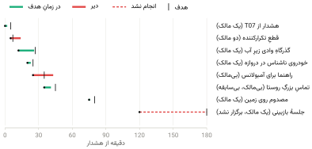
table-top of the winter night at T07: decisions and roles
min decision owner act target rec
0 start rescue, call ambulance one 2 5 yes
5 move to the next link two+ 9 2 no
12 agree a second route one 14 15 yes
20 report and record, no approach one 3 5 yes
25 meet the ambulance at the gate none 18 10 no
35 inform and log the call none 6 10 no
75 hand over to the ambulance one 1 5 yes
120 debrief and support the crew one - 60 no
1440 report with actions and owners one 300 480 yes
decisions 9: one owner 6, none 2, two 1
acted within target: 6 of 9; recorded: 5 of 9
every late or missing action sits where the plan named no
owner or two: the link (each waited for the other), the
guide at the gate, the village call - and the debrief the
plan named but no one heldمثال 32.47 (دو مالک یعنی بیمالک) پرسش. پیوند پنج دقیقه پس از هشدار قطع شد. برنامه برای رفتن به پیوندِ بعدی دو مالک نام برده است: اتاقِ کنترل و سرپرستِ گروه. چرا این اقدام ۹ دقیقه طول کشید، در حالی که هدف ۲ دقیقه بود؟
پاسخ. هر کدام منتظرِ دیگری ماند. از ۹ تصمیم، ۶ تصمیم دقیقاً یک مالک داشتند، ۲ تصمیم هیچ مالکی نداشتند و ۱ تصمیم دو مالک داشت. ۶ تصمیم در زمانِ هدف گرفته شد و از ۵ تصمیم سابقه ماند.
تفسیر. همهٔ تأخیرها و اقدامهای انجامنشده جایی رخ دادند که برنامه مالکی نام نبرده بود یا دو مالک نام برده بود: پیوند، راهنما در دروازه و تماسِ روستا. تماسِ روستا در زمانِ هدف پاسخ گرفت، اما چون مالکی نداشت، کسی آن را ثبت نکرد. جلسهٔ بازبینی مالک داشت، اما برگزار نشد. پس نامبردنِ مالک لازم است، اما کافی نیست. روشنیِ نقش سهمِ تصمیمهایی است که دقیقاً یک مالک دارند. در این تمرین ۶ از ۹، یعنی ۶۷ درصد است. این نشانگر هم مانندِ هر نشانگرِ دیگری شاهد میخواهد، و شاهدش از سوابقِ ناظر میآید. وارسی: \(6 + 2 + 1 = 9\).
32.11.3 درسها تا بستهشدنِ واقعی
ACTIONS = [ # (id, action, owner, due day, status at day 90)
("A1", "second trained rescuer on each crew", "HSE lead", 60,
"evidence"),
("A2", "night on-call team within 30 min", "site manager", 90, "open"),
("A3", "satellite phone in every duty vehicle", "control room", 30,
"evidence"),
("A4", "second ambulance route agreed", "on-call manager", 45,
"claimed"),
("A5", "visitor log reconciled weekly", "gate process", 30, "evidence"),
("A6", "guide for services at the gate", "control room", 30,
"claimed"),
("A7", "village told of night traffic", "liaison officer", 14,
"evidence"),
("A8", "debrief and crew support held", "site manager", 14, "evidence"),
("A9", "one owner for the link fallback", "control room", 30,
"evidence"),
("A10", "village-call script in the control room", "liaison officer",
30, "open"),
("A11", "fixes tested in the next table-top", "HSE lead", 120, "open"),
]lessons learned: the eleven actions at day 90
id action due status
A1 second trained rescuer on each crew 60 closed, evidence
A2 night on-call team within 30 min 90 open
A3 satellite phone in every duty vehicle 30 closed, evidence
A4 second ambulance route agreed 45 closed, claimed
A5 visitor log reconciled weekly 30 closed, evidence
A6 guide for services at the gate 30 closed, claimed
A7 village told of night traffic 14 closed, evidence
A8 debrief and crew support held 14 closed, evidence
A9 one owner for the link fallback 30 closed, evidence
A10 village-call script in the control room 30 overdue
A11 fixes tested in the next table-top 120 open
reported closed: 8 of 11 (73%); closed with evidence: 6 of 11 (55%)
claimed only: A4, A6; overdue: A10
the next table-top tests the claimed closures first; a
fix counts when the exercise shows it working, not when
the tracker says closedمثال 32.48 (هفتادوسه درصد بسته، پنجاهوپنج درصد با شاهد) پرسش. نود روز پس از تمرین، ردیابِ اقدامها ۸ اقدام از ۱۱ اقدام را «بسته» نشان میدهد. چند اقدام با شاهد بسته شده است؟ تمرینِ بعدی از کجا شروع میشود؟
پاسخ. ۶ اقدام از ۱۱ اقدام با شاهد بسته شده است (۵۵ درصد). دو اقدام فقط ادعا شدهاند: راهِ دومِ آمبولانس، که توافقِ نوشتهای ندارد (A4)، و راهنما در دروازه (A6). یک اقدام هم از موعدش گذشته است: متنِ پاسخ به تماسِ روستا (A10).
تفسیر. تمرینِ بعدی اول اقدامهای ادعاشده را میآزماید. اقدام وقتی بسته حساب میشود که تمرین نشان دهد کار میکند، نه وقتی که ردیاب میگوید بسته است. این همان فاصلهٔ ادعا و شاهد است که در بخشِ امنیت (بخش 32.10.6) دیدیم و در فصلِ ۳۹ دربارهٔ تأمینکنندگان میبینیم. درسآموختهها فقط وقتی ارزش دارند که در برنامهٔ اضطراری، طرحِ امنیت و برنامهٔ پاسخِ فناوریِ عملیاتی به تغییری بدل شوند. وارسی: \(6/11 = 0.55\) و \(8/11 = 0.73\).
32.11.4 معیارهای سنجشِ تمرین
| معیار | شاهد | در تمرینِ شبِ زمستان |
|---|---|---|
| روشنیِ نقش | هر تصمیم دقیقاً یک مالک در برنامه | ۶ از ۹ |
| زمان | زمانِ اقدام در برابرِ هدفِ توافقشده | ۶ از ۹ در زمانِ هدف |
| سوابق | دفترِ رویداد، دفترِ بیسیم، دفترِ بازدیدکنندگان | ۵ از ۹ تصمیم |
| پیوند با خدمات | راه و محلِ دیدارِ توافقشده با آمبولانس و آتشنشانی | راهِ دوم شناخته نبود |
| ارجاعِ امنیتی | گزارش و ثبت، بیرویارویی | انجام شد، در ۳ دقیقه |
| جامعه | خبر به روستا و ثبتِ تماسها | پاسخ داده شد، بیسابقه |
| بازیابی | جلسهٔ بازبینی و حمایت از گروه | برگزار نشد |
| درسآموزی | اقدام با مالک، موعد و شاهدِ بستهشدن | ۶ از ۱۱ با شاهد |
ایده. ارزیاب کسی است که در تمرین نقشی ندارد. ارزیاب ثبت میکند و قضاوت نمیکند: چه کسی، کِی و با چه سابقهای. یافتهها به سه سند میروند: برنامهٔ اضطراری (بخش 32.9)، طرحِ امنیت (بخش 32.10) و برنامهٔ پاسخ به رویدادِ فناوریِ عملیاتی (بخش 36.4). ارائهدهندگانِ نجات و خدماتِ پزشکی زمانها و روشها را تأیید میکنند. برنامهٔ تمرینها (بخش 32.9.4) میگوید تمرینِ بعدی کِی است و چه چیزی را میآزماید.
سناریو ساختگی است و تمرین رومیزی است. روشهای نجات، کمکهای اولیه و انتقالِ پزشکی را ارائهدهندگانِ صلاحیتدار مینویسند و آموزش میدهند. ارجاعِ امنیتی فقط گزارش و ثبت است. تمرین هیچ تاکتیکی را نمیآزماید و تجویز نمیکند.
- تمرینِ یکپارچه چه رویدادهایی را کنار هم میگذارد؟
- تمرین کدام سه چیز را میسنجد؟
- شش قاعدهٔ سادهٔ بازبینیِ سناریو را بنویسید.
- پیامِ سناریو چیست و چه کسی آن را میدهد؟
- چرا دو مالک برای یک تصمیم بدتر از یک مالک است؟
- روشنیِ نقش را تعریف کنید و برای تمرینِ شبِ زمستان حساب کنید.
- چرا تماسِ روستا، با اینکه در زمانِ هدف پاسخ گرفت، یک یافته است؟
- فرقِ «بسته» و «بسته با شاهد» چیست؟ تمرینِ بعدی از کجا شروع میشود؟
- ارزیابِ تمرین چه کسی است و چه چیزی را ثبت میکند؟
32.12 ساخت و تولیدِ صنعتی در این فصل
تجهیزاتِ ایمنی و حریق محصولاتِ صنعتیاند و شواهدشان از کارخانه شروع میشود. شواهد چهار نوع است که نباید با هم اشتباه شوند:
- گواهیِ محصول: آزمونِ نوعِ آزمایشگاهِ مستقل روی یک طرح، برای آشکارسازها، تابلوهای هشدار، دیوارها و آتشبندهای آزمودهشده.
- آزمونِ کارخانه: هر تابلو یا سامانه، پیش از ارسال، با حضورِ خریدار (فصلِ ۴۰).
- آزمونِ کارکردیِ ساختگاه: هر قطعهٔ نصبشده.
- آزمونِ یکپارچهٔ علت و معلول: کلِ سامانه با همهٔ واسطهایش (بخش 32.6.2).
مانور هیچکدام از اینها نیست. مانور افراد را میسنجد. سازندهٔ باتری دادهٔ آزمونِ بزرگمقیاس و دستورِ پاسخِ اضطراری را میدهد (فصلِ ۱۹). سازندهٔ توربین دستورِ فرار و نجات و دادهٔ آشکارسازیِ ناسل را میدهد. فصلهای ۴۲ تا ۴۷ کنترلِ کیفیتِ این محصولات را در کارخانه دنبال میکنند.
32.13 نیروگاهِ P: سه مثالِ یکپارچه
برنامه:
python -m companion.ch32.integratedمثال 32.49 (مقدماتی: دو نتیجه با دست) پرسش. نرخِ حادثههای ثبتشدنیِ دورهٔ ساخت و دوامِ ذخیرهٔ آب را با دست حساب و با کد مقایسه کنید.
two safety results checked by hand
recordable rate: 11 x 200,000 / 1,050,000 = 2.10; code 2.10
reserve autonomy: 180 m3 x 1,000 / 3,000 L/min = 60 min; code 60
the interval of the rate (1.18-3.47) has no hand form -
it is checked against a table of the chi-square lawپاسخ. 2.10 در هر 200,000 ساعت و 60 دقیقه، هر دو برابر با کد.
تفسیر. بازهٔ نرخ شکلِ دستیِ ساده ندارد و با جدولِ توزیعِ کایدو وارسی میشود. وارسیِ یک عدد از هر فرمول از جدول در برابرِ واحدِ اشتباه محافظت میکند. وارسی: \(11 \times 200{,}000/1{,}050{,}000 = 2.10\).
مثال 32.50 (میانی: بستهٔ ایمنی و اضطرار در عدد) پرسش. بستهٔ ایمنی، حریق و اضطرارِ نیروگاهِ P چه اندازهای دارد؟
the safety, fire and emergency package of Plant P in numbers
fire scenarios in the register: 9, of them high: 1
protection matrix: 7 areas x 6 questions
cause-and-effect: 8 inputs, 8 outputs; draft findings 3
fire-service arrival P50 57 min; reserve 60 min
JHA of the yaw motor: 9 steps, residual at most 5 after revision
emergency scenarios: 12; exercise gaps found: 8
the package is mostly registers, matrices and plans: the
numbers in it are few, sourced and marked placeholders
where the strategy or the authority must set themتفسیر. بسته بیشتر دفتر، ماتریس و برنامه است. عددهایش کماند، منبع دارند، و هرجا راهبردِ حریق یا مقامِ مسئول باید تعیینشان کند جایگزیناند. این نسبت خودش درسی است: ایمنی بیشتر سازماندهی است تا محاسبه. وارسی: نُه سناریو، هفت بخش، هشت ورودی.
مثال 32.51 (یکپارچه: مبنای ایمنی، حریق و اضطرارِ نیروگاهِ P) پرسش. مبنای ایمنی، حریق و اضطرار را با یافتهها و موردهای باز بنویسید.
D-036 safety, fire and emergency basis of Plant P (teaching)
1 safety management: teaching 5 x 5 matrix, hierarchy of
controls, permit office with shared isolation points,
prequalification with a minimum on every criterion
2 hazards: PV DC treated as energised in daylight; restraint
or retracting devices where clearance is short; summer
early shifts; wind chill on nacelle roofs; site speeds
3 fire: register F01-F09, matrix by area, C&E rules (alarm
for every input, own location, position feedback);
methods, rates and separations from the fire strategy
and the authority (U-105, U-110)
4 water: 180 m3 reserve lasts 60 min at the placeholder
rate; the fire service arrives after it in about 31 %
of draws - tankers and meeting point agreed in advance
5 lifecycle: evidence ladder, test intervals by PFD,
impairment register, management of change, restore
6 welfare: town housing or a camp with its own water (a
camp would use 61 % of the wells); buses; school hours
7 emergency: 12 scenarios with levels; two rescuers on
every crew; night work only with the team on site;
satellite phones in duty vehicles; exercise programme
8 findings of the later lessons: the control building as
drawn loses the race with smoke (second exit, drilled
'leave now'); AEDs in every vehicle; gates too tight for
a fire appliance (familiarisation drive); the erection
contractor's rate above its funnel band; 4 barriers to a
container explosion leave the teaching target missed
open: fire strategy and authority acceptance (U-105,
U-110); medical provider's response times (U-111);
findings: ch 29 construction water rises to 87,460 m3
with ch 22's workforce (corrected there)تفسیر. این تصمیمِ D-036 است. یافتههایی که به فصلهای دیگر برمیگردند:
- آبِ ساختِ فصلِ ۲۹ با نیروی کارِ فصلِ ۲۲ به 87,460 m³ میرسد و همانجا اصلاح شد.
- اردوگاه در ساختگاه 61 % آبدهیِ چاهها را میگیرد. پس اقامت در شهر یا اردوگاه با منبعِ جداگانه لازم است.
- آبِ آتشنشانیِ ساختگاه پیش از رسیدنِ آتشنشانی در حدودِ 31 % نمونهها تمام میشود (فصلِ ۲۹).
- نجاتِ شبانه از ناسل 75 دقیقه طول میکشد. پس کارِ شب فقط با گروهِ نجات در ساختگاه انجام میشود (فصلِ ۳۱).
- چهار سکوی توربین پوششِ تلفنِ همراه ندارند (فصلِ ۳۱).
32.14 عددهای کلیدیِ ایمنی و اضطرارِ نیروگاهِ P
| کمیت | مقدار | مثال |
|---|---|---|
| نرخِ حادثههای ثبتشدنیِ ساخت (بازهٔ 90 %) | 2.10 (1.18 تا 3.47) | مثال 32.4 |
| کرانِ بالای صفر حادثه در سالِ نخست | 11.5 در 200,000 h | مثال 32.4 |
| فاصلهٔ لازم با طنابِ 1.8 m | 6.35 m | مثال 32.8 |
| ساعتهای ۳۵ درجه در نوبتِ صبح / روز | 1 % / 93 % | مثال 32.9 |
| فاصلهٔ ۱۲٫۵ کیلووات بر مترمربع از آتشِ روغن | 22 m | مثال 32.15 |
| دوامِ ذخیرهٔ 180 m³؛ رسیدنِ پس از آن | 60 min؛ 31 % | مثال 32.20 |
| جمعِ امتیازهای تحلیلِ خطرِ شغلی، پیش / پس | 91 / 39 | مثال 32.29 |
| نجات از ناسل، روز / شب | 46 / 75 min | مثال 32.35 |
| اردوگاه در ساختگاه: سهم از آبدهیِ چاهها | 61 % | مثال 32.30 |
| شکافهای تمرینِ شبِ زمستان | ۸ | مثال 32.46 |
32.15 گردشِ کارِ ایمنی، حریق و اضطرار
- نظامِ مدیریت: چرخه، ماتریس، کنترلها، مجوزها، صلاحیت، پیمانکاران، یادگیری (بخش 32.2).
- خطرها با عدد: انرژیِ ماندگار، DC، ارتفاع، فضای بسته، گرما و سرما، ترافیک، صدا، گاز (بخش 32.3).
- راهبردِ حریق: سناریوها، دفتر، ماتریسِ حفاظت، منطقِ علت و معلول، تابش، دود و دسترسی (بخش 32.4).
- آب و محیط: دوام، پوششِ پاسخ، آبِ آلوده، ازکارافتادگی، فرماندهی (بخش 32.5).
- چرخهٔ عمر: شواهد، نردبان، فاصلهٔ آزمون، مانور، تغییر، بازگشت (بخش 32.6).
- تحلیلِ خطرِ شغلیِ هر کارِ پرخطر (بخش 32.7.2).
- رفاه و جامعه: اقامت، جابهجایی، ترافیک، شکایت، دسترسی، نوعِ تعهدها (بخش 32.8).
- برنامهٔ اضطراری برای همهٔ مخاطرات، نجات، ارتباطات، امنیتِ فیزیکی و تمرینها (بخش 32.9).
32.16 آزمایشگاههای پایتونِ این فصل
| آزمایشگاه | برنامه | آنچه میسازد |
|---|---|---|
| داده | sources | ساعتها و رویدادها، بخشها، پاسخ، نیروی کار، ذخیره |
| نظامِ مدیریت | examples_a | ماتریس، سلسلهمراتب، نرخها، شبهحادثه، صلاحیت، مجوزها، پیمانکاران |
| خطرها | examples_b | انرژیِ ماندگار، DC، ارتفاع، تهویه، گرما، سرما، توقف، صدا، گاز |
| آزمایشگاهِ پ | lab_c | دفترِ حریق، ماتریسِ حفاظت، وارسیِ علت و معلول |
| آب و محیط | examples_d | دوام، رسیدن، تابش، آبِ آلوده، ازکارافتادگی، فرماندهی |
| چرخهٔ عمر | examples_e | شواهد، نردبان، احتمالِ خرابی، مانورها، تغییر، بازگشت |
| آزمایشگاهِ ج | lab_f | تحلیلِ خطرِ شغلی با وارسی |
| رفاه و جامعه | examples_g | اقامت، جابهجایی، ترافیک، شکایت، دسترسی، تعهدها |
| آزمایشگاهِ ح | lab_h | سناریوها، نجات، ارتباطات، امنیت، بازبینیِ تمرین |
| ریسک و خطرها (بیشتر) | examples_k | سدها، نشانگرهای پیشنگر، رعد و برق، گرد و خاک، بلندکردن، توقف در هوا |
| حریق و افراد (بیشتر) | examples_m | رشدِ آتش، تانکرها، رأیگیری، صدای روستا، رفاه، محلِ تجمع |
| مدیریت و بدن | examples_n | ممیزی، انقضای گواهی، نوبتکاری، جریانِ بدن، ارتعاش |
| حریق (بیشتر) | examples_p | پرشدنِ دود، نگهبانِ آتش، تابش میانِ کانتینرها، آتشبر |
| افراد و اضطرار (بیشتر) | examples_q | دستگاهِ شوک، بُردِ بیسیم، فرود، ریسکِ عابر، گرد و خاک |
| عدد برای تصمیم | examples_r | نمونهٔ ممیزی، قیف، پارتو، خروجِ ایمن، ارزشِ تدبیرِ امنیتی |
| اتاقِ کنترل و مواد | examples_s | سیلِ هشدار، مواد خطرناک، جعبههای نشت |
| آخرین دور | examples_t | هزینهٔ رویداد، پیمایشِ فضا، بازدهِ بازرسی، خودروی آتشنشانی، دود |
| عواملِ انسانی | examples_u | کارِ تنها، دروازه، سایه، بالارفتن از برج |
| نیروگاهِ P | integrated | با دست، بسته، مبنای D-036 |
| مثالها و پاسخها | worked | سطرهای E01 و P01 به بعد |
ماژولِ تازهٔ safety با چهار آزمون در برابرِ حسابِ دستی پایهٔ این برنامههاست. سالِ ساعتی از بستهٔ داده میآید. ذخیره و چاهها از فصلِ ۲۹، نیروی کار از فصلِ ۲۲ و زمانهای پاسخ از فصلِ ۳۱ میآیند.
32.17 جعبهٔ استاندارد و انطباق
- نظامِ مدیریتِ ایمنی و بهداشتِ شغلی: ISO 45001:2018 با اصلاحیهٔ Amd 1:2024 (STD-137). مدیریتِ ریسک: ISO 31000:2018 (STD-107).
- مدیریتِ رویداد: ISO 22320:2018 (STD-138).
- حفاظت از حریق در نیروگاهها: NFPA 850:2026 بهعنوانِ نمونهٔ سندِ مبنای طراحی (STD-139). باتری: UL 9540A و NFPA 855:2026 (STD-099، STD-100). فاصلهها در پست: IEC 61936-1:2021 (STD-123). هیچکدام بیپذیرشِ مقامِ مسئول الزام نیست.
- اقدامهای حفاظتیِ توربین: EN 50308:2004 (STD-140).
- کار، رفاه، اقامتگاه و نیروهای حفاظت: قانونِ کارِ کشور و شرطهای وامدهندگان (STD-108). فصلهای ۵۵ تا ۵۷ قاعدههای کشوری را بررسی میکنند.
- هیچ عددی در این فصل الزام، راهبردِ حریق یا برنامهٔ نجاتِ مصوب نیست. (وارسیشده 2026-11-16.)
32.18 تحویلدادنیِ نیروگاهِ P
| سند | محتوا | معیارِ پذیرش |
|---|---|---|
| PLP-PRJ-REG-0016 | دفترِ خطرها و دفترِ امنیتِ فیزیکی | هر خطر با کنترل، مالک و ریسکِ باقیمانده |
| PLP-GEN-REP-0010 | مبنای خطرِ حریق و ماتریسِ مفهومیِ حفاظت | هر پرسش با مالک؛ جایگزینها نشاندار |
| PLP-CTL-REG-0003 | ماتریسِ علت و معلول (پیشنویس) | قاعدههای وارسی بییافته؛ آزمونِ یکپارچه برنامهریزیشده |
| PLP-PRJ-PRO-0003 | برنامهٔ اضطراری، نجات و تخلیه برای همهٔ مخاطرات | سطحها، نقشها، زمانهای پاسخِ توافقشده، ارتباطات |
| PLP-PRJ-PRO-0004 | برنامهٔ رفاهِ کارکنان و پیوند با جامعه | اقامت، جابهجایی، سازوکارِ شکایت و ارجاع |
| PLP-PRJ-REG-0017 | سابقهٔ مانورها و ازکارافتادگیها | هر یافته با مالک و تاریخ |
این فصل اینها را به پروندهٔ نیروگاهِ P میافزاید:
- تصمیمِ D-036: مبنای ایمنی، حریق و اضطرار (مثال 32.51).
- فرضهای A-368 تا A-375:
- A-368: ساعتها و رویدادهای ساختگی، ماتریسِ آموزشی.
- A-369: بخشها و سناریوهای حریق.
- A-370: زمانهای جایگزینِ آتشنشانی و پاسخ.
- A-371: عددهای خطرها (طناب، تهویه، اصطکاک، صدا، گاز).
- A-372: شواهد، نرخِ خرابی، مانورها، ازکارافتادگیها.
- A-373: امتیازهای تحلیلِ خطرِ شغلی.
- A-374: نیروی کار، آبِ اردوگاه، نرخِ تصادف، ترافیک، شکایتها.
- A-375: سناریوها، زمانهای نجات، پوشش و تمرینها.
- مجهولها: راهبردِ حریق و پذیرشِ مقامِ مسئول (U-110)؛ زمانهای پاسخِ ارائهدهندهٔ خدماتِ پزشکی (U-111)؛ دبیها و مدتها همچنان باز (U-105).
- یافتهها: آبِ ساختِ فصلِ ۲۹، آبِ اردوگاه، آبِ آتشنشانی پیش از رسیدنِ کمک، نجاتِ شبانه و سکوهای بیپوشش.
- کتابخانهٔ همراه: ماژولِ
safetyبا آزمونها و برنامههای فصلِ ۳۲.
32.19 جمعبندی
- نظامِ مدیریت: چرخهٔ برنامهریزی تا اقدام با مشارکتِ کارکنان؛ ماتریسِ ریسک رتبه میدهد و اثبات نمیکند؛ کنترلها از بالای سلسلهمراتب؛ مجوز با نقطههای جداسازیِ مشترک؛ صلاحیت از ماتریس؛ پیمانکار با کمینه در هر معیار؛ نرخِ گروهِ کوچک بیمعناست؛ شبهحادثه به آنچه میتوانست بکند (بخش 32.2).
- خطرها: انرژی پس از قطع میماند؛ آرایه در روشنایی برقدار است؛ فاصلهٔ زیرِ لنگرگاه؛ هوای فضای بسته اندازهگیری میشود؛ گرما با نوبتِ صبح؛ سوزِ باد در ارتفاع؛ فاصلهٔ توقف با مجذورِ سرعت؛ یک ساعت سنگفرز؛ رقیقسازی برای فرارِ گرمایی کافی نیست (بخش 32.3).
- حریق: راهبرد با هشت پرسش؛ دفترِ نُه سناریو؛ ماتریسِ حفاظت پرسش و مالک است؛ منطقِ علت و معلول با سه قاعدهٔ وارسی؛ تابش نشان میدهد چرا فاصلهها دهها متر است (بخش 32.4).
- آب و محیط: ذخیره همان است که هست؛ آب برای خنککردنِ مجاورها تا رسیدنِ کمک؛ آبِ آلوده در حوضچهٔ بسته؛ هر ازکارافتادگی با اقدامِ جبرانی؛ آتشنشانی فرماندهی را میگیرد (بخش 32.5).
- چرخهٔ عمر: پنج نوع شاهد؛ هیچ پله جای پلهٔ دیگر را نمیگیرد؛ فاصلهٔ آزمون احتمالِ خرابی را میسازد؛ مانور با یافتههایش سنجیده میشود؛ تغییر با آنچه لمس میکند (بخش 32.6).
- مثالها: دفتر تا اقدام بیتجویزِ اطفا؛ تحلیلِ خطرِ شغلی که احتمال را کم میکند و پیامد را نه (بخش 32.7).
- رفاه و جامعه: اقامت و آب؛ رفتوآمد ریسکِ بزرگ است؛ کامیونها و مدرسه؛ سازوکارِ شکایت با ارجاع؛ حصار مردم را هم حفظ میکند؛ سه نوع تعهد (بخش 32.8).
- اضطرار: سطحها و مرزهای پاسخِ نخست؛ نجاتِ شبانه با سازماندهی کوتاه میشود؛ جایگزینهای ارتباطی؛ برنامهٔ تمرینها و کمکِ متقابل (بخش 32.9).
- امنیتِ فیزیکی: طرح با ده جزء و شاهدِ هر کدام؛ ریسک برای واردشونده هم سنجیده میشود؛ سوابقِ دروازه شمارشِ تجمع را میسازند؛ مجموعهٔ اقدامها مقایسه میشود، نه تکتکِ آنها، و پول خطر را رتبهبندی نمیکند؛ ورود به ساختمانِ کنترل ماشهٔ وارسیِ فناوریِ عملیاتی است؛ اعلام جدا از شاهد (بخش 32.10).
- تمرینِ یکپارچه: سناریوی ساختگی با پیامهای زماندار؛ دو مالک یعنی بیمالک؛ روشنیِ نقش ۶۷ درصد؛ اقدام با شاهد بسته میشود، نه با ادعا (بخش 32.11).
32.19.1 واژگانِ فصلِ ۳۲
| فارسی | انگلیسی | یادداشت |
|---|---|---|
| خطر | hazard | |
| ریسک | risk | |
| ماتریسِ ریسک | risk matrix | |
| سلسلهمراتبِ کنترلها | hierarchy of controls | |
| ریسکِ باقیمانده | residual risk | |
| نظامِ مدیریتِ ایمنی | safety management system | |
| شبهحادثه | near miss | |
| مجوزِ کار | permit to work | |
| عملیاتِ همزمان | simultaneous operations | |
| ماتریسِ صلاحیت | competency matrix | |
| پیشارزیابیِ پیمانکار | contractor prequalification | |
| تحلیلِ خطرِ شغلی | job hazard analysis | JHA |
| فضای بسته | confined space | |
| مهارِ سقوط | fall arrest | |
| بازداشتن از سقوط | fall restraint | |
| تنشِ گرمایی | heat stress | |
| دمای سوزِ باد | wind chill temperature | |
| انرژیِ بهجامانده | stranded energy | |
| راهبردِ حریق | fire strategy | |
| دفترِ خطرِ حریق | fire-hazard register | |
| آتشبندیِ نفوذها | fire stopping | |
| ماتریسِ علت و معلول | cause-and-effect matrix | |
| مقامِ مسئول | authority having jurisdiction | AHJ |
| شارِ تابشی | radiant heat flux | |
| حفاظتِ مجاورها | exposure protection | |
| ازکارافتادگیِ حفاظت | impairment | |
| فرماندهیِ رویداد | incident command | |
| محلِ تجمع | muster point | |
| کمکِ متقابل | mutual aid | |
| مانورِ اضطراری | emergency drill | |
| مدیریتِ تغییر | management of change | |
| احتمالِ خرابی هنگامِ نیاز | probability of failure on demand | PFD |
| سازوکارِ شکایت | grievance mechanism | |
| آییننامهٔ رفتار | code of conduct | |
| امنیتِ فیزیکی | physical security | |
| ارجاع به سطحِ بالاتر | escalation | |
| طرحِ مدیریتِ امنیت | security management plan | |
| کنترلِ دسترسیِ ساختگاه | site access control | |
| زیانِ سالانهٔ مورد انتظار | expected annual loss | |
| تمرینِ رومیزی | tabletop exercise | |
| پیامِ سناریو | exercise inject | |
| روشنیِ نقش | role clarity | |
| درسآموختهها | lessons learned |
32.20 ارزیابیِ پلکانی
معیارِ تسلطِ این فصل: خواننده میتواند برای یک کار یا بخش از نیروگاه خطرها، کنترلها و ریسکِ باقیمانده را بنویسد. میتواند راهبردِ حریق را به پرسشهای مالکدار بشکند، یک حالتِ محدودِ آب یا پاسخ را فقط از معیارهای منبعدار حساب کند، و شکافهای یک برنامهٔ اضطراری را پیدا کند. همهٔ اینها بیآنکه روالِ کار روی تجهیزاتِ برقدار، تجویزِ اطفای همگانی یا جزئیاتِ تاکتیکیِ امنیت بدهد. پاسخها در بخش 32.21 آمدهاند.
32.20.1 پلهٔ ۱: مبانی
تمرین 32.1 خطر و ریسک را تعریف کنید.
تمرین 32.2 چهار خانهٔ چرخهٔ نظامِ مدیریت را با سندهایشان نام ببرید.
تمرین 32.3 معادلهٔ 32.1 را توضیح دهید.
تمرین 32.4 چرا ماتریسِ ریسک پذیرفتنیبودن را ثابت نمیکند؟
تمرین 32.5 سلسلهمراتبِ کنترلها را به ترتیب بنویسید.
تمرین 32.6 مجوزِ کار چه چیزهایی را میگوید؟
تمرین 32.7 چرا نقطهٔ جداسازیِ مشترک تا بستهشدنِ همهٔ مجوزها میماند؟
تمرین 32.8 معادلهٔ 32.2 و معادلهٔ 32.3 را توضیح دهید.
تمرین 32.9 نشانگرهای پیشنگر چیست؟
تمرین 32.10 چرا شبهحادثه منبعِ اصلیِ یادگیری است؟
تمرین 32.11 کدام شکلهای انرژی پس از بازکردنِ کلید میمانند؟
تمرین 32.12 انرژیِ بهجامانده در باتری چیست؟
تمرین 32.13 چرا آرایه پس از بازکردنِ جعبهٔ ترکیبکننده برقدار است؟
تمرین 32.14 معادلهٔ 32.5 را توضیح دهید.
تمرین 32.15 معادلهٔ 32.6 را توضیح دهید و محدودیتش را بگویید.
تمرین 32.16 چرا شاخصِ تنشِ گرمایی بیش از دمای هوا میخواهد؟
تمرین 32.17 معادلهٔ 32.8 را توضیح دهید.
تمرین 32.18 معادلهٔ 32.9 را توضیح دهید.
تمرین 32.19 چرا رقیقسازی برای فرارِ گرمایی کافی نیست؟
تمرین 32.20 هشت پرسشِ راهبردِ حریق را نام ببرید.
تمرین 32.21 محدودیتهای پایشِ از دورِ کانتینرِ باتری را بگویید.
تمرین 32.22 ماتریسِ علت و معلول چیست؟
تمرین 32.23 معادلهٔ 32.12 را توضیح دهید و بگویید کجا نامطمئن است.
تمرین 32.24 معادلهٔ 32.16 را توضیح دهید.
تمرین 32.25 پنج کارِ ساختگاه در دقیقههای نخستِ حریق چیست؟
تمرین 32.26 پنج نوع شاهدِ یک قلمِ حفاظت را نام ببرید.
تمرین 32.27 معادلهٔ 32.17 را توضیح دهید.
تمرین 32.28 مدیریتِ تغییر چیست؟
تمرین 32.29 تحلیلِ خطرِ شغلی را تعریف کنید.
تمرین 32.30 پنج ویژگیِ سازوکارِ شکایت را بگویید.
تمرین 32.31 سه نوعِ تعهد را با یک نمونه برای هر کدام بنویسید.
تمرین 32.32 سه سطحِ پاسخِ برنامهٔ اضطراری را نام ببرید.
تمرین 32.33 امنیتِ فیزیکی را از امنیتِ سایبری جدا کنید.
تمرین 32.34 کمکِ متقابل چیست؟
تمرین 32.35 معادلهٔ 32.4 را توضیح دهید و بگویید کدام سد اعتبار نمیگیرد.
تمرین 32.36 فرقِ نشانگرِ پیشنگر و پسنگر چیست؟
تمرین 32.37 شاخصِ بلندکردن چیست؟
تمرین 32.38 معادلهٔ 32.13 را توضیح دهید.
تمرین 32.39 چرا رأیگیریِ دوتایی احتمالِ ازدستدادنِ آتش را بیشتر میکند؟
تمرین 32.40 معادلهٔ 32.19 را توضیح دهید.
تمرین 32.41 چرا «بسته» یعنی وارسیشده در ساختگاه؟
تمرین 32.42 معادلهٔ 32.11 را توضیح دهید.
تمرین 32.43 معادلهٔ 32.14 را توضیح دهید.
تمرین 32.44 معادلهٔ 32.15 را توضیح دهید.
تمرین 32.45 معادلهٔ 32.20 را توضیح دهید.
تمرین 32.46 چرا نمونهٔ پاکِ ممیزی اثبات نیست؟
تمرین 32.47 نمودارِ قیف چه چیزی را از رتبهبندی جدا میکند؟
تمرین 32.48 معادلهٔ 32.18 را توضیح دهید.
تمرین 32.49 سیلِ هشدار چیست و چگونه مهار میشود؟
تمرین 32.50 معادلهٔ 32.21 را توضیح دهید.
تمرین 32.51 معادلهٔ 32.22 را توضیح دهید و بگویید چه چیزی آن را نامطمئن میکند.
تمرین 32.52 چرا بالابرِ خدمت یک وسیلهٔ ایمنی است؟
تمرین 32.53 چرا دروازهٔ جداگانه برای پیادهها بهتر از هشدار است؟
تمرین 32.54 چرا کارِ تنها در سکوی دورافتاده پرهیز میشود؟
تمرین 32.55 ده جزءِ طرحِ مدیریتِ امنیت را نام ببرید.
تمرین 32.56 فرقِ اعلام و شاهد را در طرحِ امنیت توضیح دهید.
تمرین 32.57 معادلهٔ 32.23 را توضیح دهید.
تمرین 32.58 روشنیِ نقش چیست؟
تمرین 32.59 پیامِ سناریو در تمرینِ رومیزی چیست و چه کسی آن را میدهد؟
تمرین 32.60 چرا اقدامی که ردیاب «بسته» نشان میدهد ممکن است بسته نباشد؟
32.20.2 پلهٔ ۲: تحلیل
تمرین 32.61 امتیاز و ردهٔ \(L = 3\) و \(S = 5\)؟
تمرین 32.62 امتیاز و ردهٔ \(L = 2\) و \(S = 2\)؟
تمرین 32.63 امتیازِ \(L = 4\) و \(S = 3\)؟
تمرین 32.64 نرخِ ۳ حادثهٔ منجر به ازکارافتادگی در 1,050,000 ساعت با بازه؟
تمرین 32.65 کرانِ بالای 90 % برای صفر رویداد در 52,000 ساعت؟
تمرین 32.66 نرخِ ۲ حادثه در 300,000 ساعت؟
تمرین 32.67 نسبتِ شبهحادثه به حادثهٔ ثبتشدنی، 164/11؟
تمرین 32.68 فاصلهٔ لازم با طنابِ 1.8 و کشیدگیِ 1.75 m؟
تمرین 32.69 فاصلهٔ لازم با مهارِ خودجمعشو (0.3 + 0.6 m)؟
تمرین 32.70 فاصلهٔ لازم با طنابِ 2.0 m؟
تمرین 32.71 تعویضِ هوا در ساعت برای 30 m³ با 300 m³/h؟
تمرین 32.72 زمانِ رسیدن به 1 % با ۱۰ تعویض در ساعت؟
تمرین 32.73 زمانِ رسیدن به 10 % با ۱۰ تعویض در ساعت؟
تمرین 32.74 دبیِ هوای تازه برای 2 m³/h زیرِ 1 % با ضریبِ ۳؟
تمرین 32.75 فاصلهٔ توقف در 30 km/h؟
تمرین 32.76 فاصلهٔ توقف در 60 km/h؟
تمرین 32.77 فاصلهٔ توقف در 40 km/h؟
تمرین 32.78 مواجههٔ روزِ نمونه (۹۸/۱، ۹۰/۲، ۸۰/۴، ۶۵/۱)؟
تمرین 32.79 مواجههٔ یک ساعت 98 dB(A)؟
تمرین 32.80 مواجههٔ دو ساعت 95 dB(A)؟
تمرین 32.81 دوامِ 180 m³ با 3,000 L/min؟
تمرین 32.82 دوامِ 180 m³ با 1,500 L/min؟
تمرین 32.83 دوامِ 100 m³ با 2,000 L/min؟
تمرین 32.84 زمانِ پرکردنِ 180 m³ با 39 L/min؟
تمرین 32.85 توانِ گرماییِ حوضچهٔ 140 m² با 0.039 kg/m²s و 46 MJ/kg؟
تمرین 32.86 شارِ تابشی در 20 m از همان آتش؟
تمرین 32.87 فاصلهٔ 12.5 kW/m² از همان آتش؟
تمرین 32.88 شارِ تابشی در 15 m از آتشِ 20 MW؟
تمرین 32.89 احتمالِ خرابیِ یک آشکارساز، 0.02 در سال، آزمونِ ششماهه؟
تمرین 32.90 همان برای دو آشکارسازِ مستقل؟
تمرین 32.91 احتمالِ خرابی با 0.05 در سال و آزمونِ سالانه؟
تمرین 32.92 زمانِ نجاتِ شبانه از ناسل؟
تمرین 32.93 رسیدنِ آمبولانس از 35 km با 60 km/h و ۱۰ و ۱۰ دقیقه؟
تمرین 32.94 آبِ روزانهٔ اردوگاهِ 270 نفره؟
تمرین 32.95 سهمِ رسیدنهای 50، 55، 62، 70 دقیقه در ۶۰ دقیقه؟
تمرین 32.96 انرژیِ کانتینرِ 5,016 kWh در نیمشارژ به مگاژول؟
تمرین 32.97 کاهشِ جمعِ امتیازهای تحلیلِ خطرِ شغلی از 91 به 39؟
تمرین 32.98 حجمِ حوضچه برای 108 m³ آبِ آتش و 52 m³ باران؟
تمرین 32.99 بسامدِ انفجار برای هشت کانتینر با چهار سدِ 0.1؟
تمرین 32.100 همان اگر یکی از سدها ازکارافتاده باشد؟
تمرین 32.101 فاصلهٔ توفان با ۲۰ ثانیه میانِ برق و تندر؟
تمرین 32.102 میانگینِ وزنیِ گرد و خاکِ روزِ نمونه؟
تمرین 32.103 شاخصِ بلندکردنِ یک نفر از پالتِ پایین؟
تمرین 32.104 ساعتهای روزانه با بادِ هاب بیش از 12 m/s؟
تمرین 32.105 زمانِ رسیدنِ آتشِ تند به 1 MW؟
تمرین 32.106 زمانِ رسیدنِ آتشِ متوسط به 100 kW؟
تمرین 32.107 دبیِ یک تانکر از 10 km؟
تمرین 32.108 ترازِ صدای کوبِ ستون در 1.2 km؟
تمرین 32.109 امدادگرانِ کمکهای اولیه برای 450 نفر با نسبتِ ۱ به ۲۵؟
تمرین 32.110 دورترین پیادهروی با دو محلِ تجمع؟
تمرین 32.111 سهمِ یافتههای زیادِ عقبافتاده؟
تمرین 32.112 گواهیهای منقضی در دوازده ماهِ آینده؟
تمرین 32.113 ساعتهای یک دورهٔ ۲۱ روزهٔ ۱۲ ساعته؟
تمرین 32.114 جریانِ بدن با 230 V و پوستِ خشکِ 2,000 Ω؟
تمرین 32.115 مواجههٔ ارتعاشِ روزِ نمونه؟
تمرین 32.116 زمانِ رسیدنِ دود به ارتفاعِ سر با آتشِ 100 kW؟
تمرین 32.117 سهمِ آتشهای آرامی که با نگهبانیِ ۶۰ دقیقه دیده میشوند؟
تمرین 32.118 طولِ شعلهٔ علفِ 0.3 kg/m² با 0.1 m/s؟
تمرین 32.119 زمانِ شوک با دستگاهی در 150 m؟
تمرین 32.120 بُردِ دو بیسیمِ دستی روی زمینِ هموار؟
تمرین 32.121 زمانِ فرودِ گروهِ دونفره از ناسلِ 100 m؟
تمرین 32.122 ریسکِ عابر در 40 km/h با منحنیِ آموزشی؟
تمرین 32.123 ساعتهای کاری با گرد و خاک به سوی روستا؟
تمرین 32.124 بازهٔ 90 % برای ۵۴ مجوزِ درست از ۶۰؟
تمرین 32.125 نرخِ پیمانکارِ برپایی؟
تمرین 32.126 سهمِ سه علتِ نخستِ شبهحادثه؟
تمرین 32.127 زمانِ لازم برای خروج با چیدمانِ کنونی؟
تمرین 32.128 صرفهجوییِ سالانهٔ کابلِ آلومینیومیِ نشاندار؟
تمرین 32.129 هشدارها در ده دقیقهٔ سیل؟
تمرین 32.130 روغنِ ترانسفورماتورها در ساختگاه؟
تمرین 32.131 هزینهٔ سالانهٔ رویدادها در جدولِ نمونه؟
تمرین 32.132 نقصهای یافتهشده با ۲۰ بازرسی؟
تمرین 32.133 غلظتِ زمینی در 1 km؟
تمرین 32.134 زمانِ رسیدنِ کمک با اعلامِ حضورِ ۳۰ دقیقهای، بهطورِ میانگین؟
تمرین 32.135 برخوردهای نزدیک در دروازه با ۱۰ خودرو و ۲۰ پیاده در ساعت؟
تمرین 32.136 افرادِ در حالِ استراحت در اوجِ کار؟
تمرین 32.137 توانِ متوسطِ بالارفتن از برج در ۱۰ دقیقه؟
تمرین 32.138 کارِ مکانیکیِ بالابردنِ 90 kg تا 100 m؟
تمرین 32.139 مساحتِ سایه برای استراحتِ اوجِ کار؟
تمرین 32.140 زیانِ سالانهٔ مورد انتظارِ پایه در درسِ خ؟
تمرین 32.141 صرفهٔ خالصِ علامتگذاری و سوابق بهتنهایی؟
تمرین 32.142 صرفهٔ خالصِ کنترلِ انبار همراه با علامتگذاری و سوابق؟
تمرین 32.143 دزدیِ هادیِ زمین در سال با علامتگذاری و رابطه با جامعه؟
تمرین 32.144 روزهای بیزمینِ ایستگاه در سال با نگاهِ هفتگی؟
تمرین 32.145 ورودهای ثبتشدهٔ هفته در دو دروازه؟
تمرین 32.146 روشنیِ نقش در تمرینِ شبِ زمستان؟
تمرین 32.147 سهمِ اقدامهای بسته با شاهد در روزِ ۹۰؟
تمرین 32.148 تأخیرِ خبر به مسئولِ رویدادِ فناوریِ عملیاتی نسبت به هدف؟
32.20.3 پلهٔ ۳: کاربرد
تمرین 32.149 سرپرست برای ابزارِ افتاده فقط کلاه تجویز کرده است. پاسخ دهید.
تمرین 32.150 گروهِ برقی پس از پایانِ کارش قفلِ T03-Q1 را برمیدارد. چه اشکالی دارد؟
تمرین 32.151 پیمانکارِ C2 بهترین امتیازِ وزنی را دارد. قرارداد را با او میبندید؟
تمرین 32.152 مدیرِ بهرهبرداری میگوید نرخِ صفر یعنی ایمنیِ کامل. پاسخ دهید.
تمرین 32.153 گروهی میخواهد پس از بازکردنِ جعبهٔ ترکیبکننده روی کابلِ رشته کار کند. چه میگویید؟
تمرین 32.154 روی سقفِ ترانسفورماتورِ 5 m طنابِ 1.8 m تجویز شده است. پاسخ دهید.
تمرین 32.155 تکنسینی میگوید پنکه ۲۸ دقیقه کار کرده، پس هاب امن است. پاسخ دهید.
تمرین 32.156 برنامهٔ تابستان بتنریزی را ساعت ۱۴ گذاشته است. چه پیشنهاد میکنید؟
تمرین 32.157 طرحِ تهویهٔ کانتینر را از فرمولِ رقیقسازی اندازه کردهاند. چه میگویید؟
تمرین 32.158 طراح میخواهد سامانهٔ اطفای یکسانی برای همهٔ بخشها بگذارد. پاسخ دهید.
تمرین 32.159 در آزمونِ یکپارچه، دودِ T03 توربینِ T04 را متوقف کرد. ریشه کجاست؟
تمرین 32.160 فاصلهٔ دو ترانسفورماتور 15 m است و جای بیشتر نیست. چه گزینهای هست؟
تمرین 32.161 مالک میخواهد ذخیره را تا رسیدنِ آتشنشانی کافی بداند. پاسخ دهید.
تمرین 32.162 آبِ حوضچه پس از حریقِ باتری به وادی رها شده است. چه چیزی کم بود؟
تمرین 32.163 آشکارسازِ گاز ۷۲ ساعت بیاقدام از کار افتاده بود. چه میگویید؟
تمرین 32.164 دو آشکارسازِ گاز روی یک تغذیهاند. احتمالِ خرابی را با فرمولِ دوتایی حساب کردهاند. پاسخ دهید.
تمرین 32.165 مانورِ سوم بیهیچ یافتهای گذشت. موفق بود؟
تمرین 32.166 میانافزارِ تازهٔ باتری بیارزیابی نصب شده است. چه چیزی را دوباره باز میکند؟
تمرین 32.167 تحلیلِ خطرِ شغلی برای دریچهٔ باز فقط هارنس دارد. پاسخ دهید.
تمرین 32.168 پیمانکار میخواهد اردوگاه را در ساختگاه بسازد و از چاهها آب بگیرد. پاسخ دهید.
تمرین 32.169 شکایتی از رفتارِ کارگر در دفترِ عمومی ثبت شده است. چه اشکالی دارد؟
تمرین 32.170 گروهِ شب فقط یک نجاتگرِ آموزشدیده دارد. کار شروع شود؟
تمرین 32.171 نگهبانی میخواهد خودروی ناشناس پشتِ دروازه را متوقف کند. پاسخ دهید.
تمرین 32.172 سکوی T07 پوششِ همراه ندارد و تکرارکننده خراب است. چه میکنید؟
تمرین 32.173 طراح کانالِ دومِ مدیریتِ باتری را سدِ مستقل حساب کرده است. پاسخ دهید.
تمرین 32.174 گزارشِ شبهحادثهها نصف شده است. خبرِ خوب است؟
تمرین 32.175 گروه کارِ ناسل را با شمارشِ ۲۵ ثانیه میانِ برق و تندر ادامه داده است. پاسخ دهید.
تمرین 32.176 کارگرانِ نصب ماژولها را تنها از پالتِ پایین بلند میکنند. چه پیشنهاد میکنید؟
تمرین 32.177 ساختمانِ کنترل آشکارسازِ حرارتی دارد. چه میگویید؟
تمرین 32.178 برنامه آب را با تانکر از شهر برای حریقِ طولانی فرض کرده است. پاسخ دهید.
تمرین 32.179 بتنریزیِ شبانه بیاطلاعِ روستا برنامهریزی شده است. چه میکنید؟
تمرین 32.180 بلوکِ 1.5 km فقط یک محلِ تجمع دارد. پاسخ دهید.
تمرین 32.181 یافتهٔ زیاد با امضای پیمانکار «بسته» شده است. پاسخ دهید.
تمرین 32.182 نیمی از گروهِ نجات ماهِ آینده گواهیِ منقضی دارند. چه میکنید؟
تمرین 32.183 جداسازیِ یک فیدر برای پایانِ نوبتِ شبِ بیستویکم برنامهریزی شده است. پاسخ دهید.
تمرین 32.184 دستگاهِ شوک فقط در کانکسِ رفاهی است. چه پیشنهاد میکنید؟
تمرین 32.185 گروهِ ناسل دستگاهِ فرود را هرگز تمرین نکرده است. کار شروع شود؟
تمرین 32.186 نگهبانِ آتش ده دقیقه پس از جوشکاری رفته است. چه خطری دارد؟
تمرین 32.187 مدیر نمونهٔ بیستتاییِ پاک را دلیلِ کاملبودنِ نظامِ مجوز میداند. پاسخ دهید.
تمرین 32.188 پیمانکاری با کمترین نرخ جایزه گرفته است. چه میگویید؟
تمرین 32.189 طراح ساختمانِ کنترل را با یک خروجی کشیده است. پاسخ دهید.
تمرین 32.190 پیشنهاد شده نگهبانِ ۲۴ ساعته در همهٔ دروازهها گذاشته شود. ارزیابی کنید.
تمرین 32.191 پیمایشِ فضای ایمنی با امتیازِ میانگین منتشر شده است. چه میگویید؟
تمرین 32.192 دروازهٔ پست شعاعِ 10 m دارد. خودروی آتشنشانی میگذرد؟
تمرین 32.193 مدیرِ ساختگاه میخواهد خودش به روستا بگوید در خانه بمانند. پاسخ دهید.
تمرین 32.194 پیمانکار کارِ تنها را با اعلامِ حضورِ دو ساعته در سکوی T07 برنامهریزی کرده است. پاسخ دهید.
تمرین 32.195 گروهی پس از بالارفتن از نردبان بیاستراحت در ناسلِ گرم کار را شروع میکند. چه میگویید؟
تمرین 32.196 سایه فقط کنارِ کانکسهای رفاهی است. چه پیشنهاد میکنید؟
تمرین 32.197 مدیری میخواهد حصارِ ایستگاههای خورشیدی را بلندتر کند تا دزدیِ هادیِ زمین کم شود. پاسخ دهید.
تمرین 32.198 نگهبانی پیشنهاد میکند خودروی ناشناس را تا بیرونِ ساختگاه دنبال کند. پاسخ دهید.
تمرین 32.199 پس از ورودِ غیرمجاز به ساختمانِ کنترل، کسی تیمِ فناوریِ عملیاتی را خبر نکرده است. چه میکنید؟
تمرین 32.200 شرکتِ حفاظت میگوید همهٔ نگهبانان آموزش دیدهاند، اما سابقهای نیست. چه گزارش میکنید؟
تمرین 32.201 ردیاب همهٔ اقدامهای تمرین را بسته نشان میدهد. تمرینِ بعدی را چگونه طراحی میکنید؟
32.20.4 پلهٔ ۴: طراحی و راستیآزمایی
تمرین 32.202 دفترِ خطرهای یک کارِ نگهداریِ دیگر (تعویضِ فیوزِ رشته در روز) را با ریسکِ باقیمانده بنویسید، بیروالِ کار روی تجهیزاتِ برقدار.
تمرین 32.203 ماتریسِ حفاظتِ ساختمانِ کنترل را با مالکِ هر پرسش کامل کنید.
تمرین 32.204 قاعدهای چهارم به وارسیِ ماتریسِ علت و معلول بیفزایید و آن را آزمون کنید.
تمرین 32.205 حالتِ دوامِ آب را برای دو رویدادِ همزمان با معیارهای منبعدار بنویسید.
تمرین 32.206 شبیهسازیِ رسیدنِ آتشنشانی را برای فصلِ سیل (راهِ بسته در 20 %) دوباره اجرا کنید.
تمرین 32.207 برنامهٔ آزمونِ دورهایِ آشکارسازها را با هدفِ احتمالِ خرابی بنویسید.
تمرین 32.208 برنامهٔ اقامت و جابهجاییِ کارکنان را با دو گزینه مقایسه کنید.
تمرین 32.209 سازوکارِ شکایتِ کارکنان و جامعه را با زمانها و ارجاع طراحی کنید.
تمرین 32.210 برنامهٔ نجات از ناسل را برای نوبتِ شب با زمانهای توافقشده بنویسید.
تمرین 32.211 ارزیابیِ متناسبِ امنیتِ فیزیکیِ پست را بنویسید، بیجزئیاتِ تاکتیکی.
تمرین 32.212 طرحِ مدیریتِ امنیتِ نیروگاهِ P را با ده جزء، شاهدِ هر جزء و پیوندهایش بنویسید، بیجزئیاتِ تاکتیکی.
تمرین 32.213 یک تمرینِ رومیزیِ یکپارچه برای سیلِ وادی همراه با قطعِ برقِ پست طراحی کنید: پیامها، مالکها، زمانهای هدف و معیارها.
تمرین 32.214 روالِ هفتگیِ تطبیقِ سوابقِ دروازه را با مالکِ هر یافته بنویسید.
32.20.5 پلهٔ ۵: تسلط
تمرین 32.215 مبنای ایمنی، حریق و اضطرارِ نیروگاهِ P را ارائه کنید و از سه یافته دفاع کنید.
تمرین 32.216 نشان دهید چرا ایمنی بیشتر سازماندهی است تا محاسبه، با سه مثال از این فصل.
تمرین 32.217 مرزِ نویسندهٔ برنامه و افرادِ صلاحیتدار را در حریق، نجات و جداسازی بنویسید.
تمرین 32.218 یک خطای خواندنِ خروجی در این فصل را بازسازی کنید و بگویید چگونه پیدا شد.
تمرین 32.219 پیوندِ برنامهٔ اضطراری با فصلهای ۲۹، ۳۱، ۴۹ و ۵۱ را ترسیم کنید.
تمرین 32.220 نشان دهید امنیتِ فیزیکی، برنامهٔ اضطراری و پاسخِ فناوریِ عملیاتی در یک رویدادِ شبانه کجا به هم میرسند.
32.21 پاسخنامه و راهحلها
پاسخهای عددی را برنامهٔ worked میسازد (سطرهای E01 و P01 به بعد در بخش 32.21.1). برای مسئلههای طراحی و تسلط، معیارهای پاسخ آمدهاند.
حل. تمرین 32.1. بخش 32.2.2.
حل. تمرین 32.2. بخش 32.2.1.
حل. تمرین 32.3. بخش 32.2.2.
حل. تمرین 32.4. بخش 32.2.2.
حل. تمرین 32.5. بخش 32.2.3.
حل. تمرین 32.6. بخش 32.2.4.
حل. تمرین 32.7. مثال 32.2.
حل. تمرین 32.8. بخش 32.2.7.
حل. تمرین 32.9. مثال 32.4.
حل. تمرین 32.10. بخش 32.2.8.
حل. تمرین 32.11. بخش 32.3.1.
حل. تمرین 32.12. بخش 32.3.1.
حل. تمرین 32.13. مثال 32.7.
حل. تمرین 32.14. بخش 32.3.3.
حل. تمرین 32.15. بخش 32.3.4.
حل. تمرین 32.16. مثال 32.9.
حل. تمرین 32.17. بخش 32.3.6.
حل. تمرین 32.18. بخش 32.3.7.
حل. تمرین 32.19. بخش 32.3.8.
حل. تمرین 32.20. بخش 32.4.1.
حل. تمرین 32.21. بخش 32.4.3.
حل. تمرین 32.22. بخش 32.4.5.
حل. تمرین 32.23. بخش 32.4.6.
حل. تمرین 32.24. بخش 32.5.1.
حل. تمرین 32.25. بخش 32.5.5.
حل. تمرین 32.26. بخش 32.6.1.
حل. تمرین 32.27. بخش 32.6.3.
حل. تمرین 32.28. بخش 32.6.5.
حل. تمرین 32.29. بخش 32.7.2.
حل. تمرین 32.30. مثال 32.31.
حل. تمرین 32.31. مثال 32.32.
حل. تمرین 32.32. بخش 32.9.1.
حل. تمرین 32.33. مثال 32.42.
حل. تمرین 32.34. بخش 32.9.4.
حل. تمرین 32.35. بخش 32.2.9.
حل. تمرین 32.36. بخش 32.2.10.
حل. تمرین 32.37. بخش 32.3.12.
حل. تمرین 32.38. بخش 32.4.8.
حل. تمرین 32.39. بخش 32.4.9.
حل. تمرین 32.40. بخش 32.8.7.
حل. تمرین 32.41. بخش 32.2.11.
حل. تمرین 32.42. بخش 32.3.15.
حل. تمرین 32.43. بخش 32.4.10.
حل. تمرین 32.44. بخش 32.4.13.
حل. تمرین 32.45. بخش 32.9.7.
حل. تمرین 32.46. بخش 32.6.7.
حل. تمرین 32.47. مثال 32.25.
حل. تمرین 32.48. بخش 32.6.10.
حل. تمرین 32.49. بخش 32.6.12.
حل. تمرین 32.50. بخش 32.9.11.
حل. تمرین 32.51. مثال 32.39.
حل. تمرین 32.52. مثال 32.41.
حل. تمرین 32.53. بخش 32.9.15.
حل. تمرین 32.54. مثال 32.40.
حل. تمرین 32.55. بخش 32.10.1.
حل. تمرین 32.56. بخش 32.10.1.
حل. تمرین 32.57. بخش 32.10.4.
حل. تمرین 32.58. مثال 32.47.
حل. تمرین 32.59. بخش 32.11.2.
حل. تمرین 32.60. مثال 32.48.
حل. تمرین 32.61. 15، «زیاد» (P01).
حل. تمرین 32.62. 4، «کم» (P02).
حل. تمرین 32.63. 12، «زیاد» (E01).
حل. تمرین 32.64. 0.57 (0.16 تا 1.48) (P03).
حل. تمرین 32.65. 11.52 (P04).
حل. تمرین 32.66. 1.33 (0.24 تا 4.20) (E02).
حل. تمرین 32.67. 14.9 (P05).
حل. تمرین 32.68. 6.35 m (P06).
حل. تمرین 32.69. 3.70 m (P07).
حل. تمرین 32.70. 6.55 m (E03).
حل. تمرین 32.71. 10 (P08).
حل. تمرین 32.72. 27.6 دقیقه (P09).
حل. تمرین 32.73. 13.8 دقیقه (E05).
حل. تمرین 32.74. 600 m³/h (P10).
حل. تمرین 32.75. 20.4 m (P11).
حل. تمرین 32.76. 56.5 m (P12).
حل. تمرین 32.77. 30.6 m (E06).
حل. تمرین 32.78. 90.4 dB(A) (P13).
حل. تمرین 32.79. 89.0 dB(A) (P14).
حل. تمرین 32.80. 89.0 dB(A) (E07).
حل. تمرین 32.81. 60 دقیقه (P15).
حل. تمرین 32.82. 120 دقیقه (P16).
حل. تمرین 32.83. 50 دقیقه (E08).
حل. تمرین 32.84. 77 ساعت (P17).
حل. تمرین 32.85. 251 MW (P18).
حل. تمرین 32.86. 15.0 kW/m² (P19).
حل. تمرین 32.87. 21.9 m (P20).
حل. تمرین 32.88. 2.1 kW/m² (E09).
حل. تمرین 32.89. 0.0050 (P21).
حل. تمرین 32.90. 0.000033 (P22).
حل. تمرین 32.91. 0.025 (E10).
حل. تمرین 32.92. 75 دقیقه (P23).
حل. تمرین 32.93. 55 دقیقه (P24).
حل. تمرین 32.94. 34.0 m³ (P25).
حل. تمرین 32.95. 50 % (P26).
حل. تمرین 32.96. 9,029 MJ (P27).
حل. تمرین 32.97. 57 % (P28).
حل. تمرین 32.98. 160 m³ (بخش 32.5.3).
حل. تمرین 32.99. 1.6e-05 در سال (مثال 32.5).
حل. تمرین 32.100. 1.6e-04 در سال (مثال 32.5).
حل. تمرین 32.101. 6.9 km (بخش 32.3.10).
حل. تمرین 32.102. 1.51 mg/m³ (بخش 32.3.11).
حل. تمرین 32.103. 5.20 (مثال 32.11).
حل. تمرین 32.104. 307 ساعت، 7.0 % (بخش 32.3.13).
حل. تمرین 32.105. 146 s (مثال 32.16).
حل. تمرین 32.106. 92 s (بخش 32.4.8).
حل. تمرین 32.107. 208 L/min (بخش 32.5.6).
حل. تمرین 32.108. 42 dB(A) (بخش 32.8.7).
حل. تمرین 32.109. 18 (مثال 32.33).
حل. تمرین 32.110. 839 m، 13 دقیقه: از مرکزِ نیمهای 1.5 × 0.75 km تا گوشهٔ آن (بخش 32.9.5).
حل. تمرین 32.111. 33 % (بخش 32.2.11).
حل. تمرین 32.112. 118 (مثال 32.6).
حل. تمرین 32.113. 252 (بخش 32.2.13).
حل. تمرین 32.114. 115 mA (مثال 32.12).
حل. تمرین 32.115. 7.0 m/s² (بخش 32.3.15).
حل. تمرین 32.116. 3.3 دقیقه (مثال 32.17).
حل. تمرین 32.117. 83 % (بخش 32.4.11).
حل. تمرین 32.118. 1.4 m (مثال 32.18).
حل. تمرین 32.119. 5.8 دقیقه (مثال 32.37).
حل. تمرین 32.120. 8.7 km (بخش 32.9.7).
حل. تمرین 32.121. 8.7 دقیقه (بخش 32.9.8).
حل. تمرین 32.122. 19 % (بخش 32.8.9).
حل. تمرین 32.123. 51 (مثال 32.34).
حل. تمرین 32.124. 81 تا 96 % (بخش 32.6.7).
حل. تمرین 32.125. 11.2 در 200,000 ساعت (مثال 32.25).
حل. تمرین 32.126. حدودِ 59 % (بخش 32.6.9).
حل. تمرین 32.127. 164 s (مثال 32.26).
حل. تمرین 32.128. 44 k u (بخش 32.6.11).
حل. تمرین 32.129. 118 (بخش 32.6.12).
حل. تمرین 32.130. 122 m³ (مثال 32.27).
حل. تمرین 32.131. حدودِ 1,125 k u (بخش 32.9.9).
حل. تمرین 32.132. 31.9 از 40 (بخش 32.9.11).
حل. تمرین 32.133. 1.20 mg/m³ (مثال 32.39).
حل. تمرین 32.134. 50 دقیقه (بخش 32.9.14).
حل. تمرین 32.135. 1.11 در ساعت (بخش 32.9.15).
حل. تمرین 32.136. 68 (بخش 32.9.16).
حل. تمرین 32.137. 736 W (مثال 32.41).
حل. تمرین 32.138. 88 kJ (بخش 32.9.17).
حل. تمرین 32.139. 101 m² (بخش 32.9.16).
حل. تمرین 32.140. 18.05 هزار واحد در سال: \(1.0\times 3 + 0.5\times 25 + 0.3\times 8.5\) (بخش 32.10.4).
حل. تمرین 32.141. +1.42 هزار واحد در سال: \(18.05\times 0.3 - 4\) (بخش 32.10.4).
حل. تمرین 32.142. +2.42 هزار واحد در سال، کمتر از کنترلِ انبار بهتنهایی (بخش 32.10.4).
حل. تمرین 32.143. 0.56: \(1.0\times 0.7\times 0.8\) (مثال 32.44).
حل. تمرین 32.144. 3.5: \(1.0 \times 3.5\) (بخش 32.10.4).
حل. تمرین 32.145. 378: \(6\times 61+10+2\) (مثال 32.43).
حل. تمرین 32.146. ۶ از ۹، یعنی ۶۷ درصد (مثال 32.47).
حل. تمرین 32.147. ۶ از ۱۱، یعنی ۵۵ درصد (مثال 32.48).
حل. تمرین 32.148. 360 دقیقه: \(390-30\) (مثال 32.45).
حل. تمرین 32.149. معیار: امتیاز 12 میماند؛ کنترلهای بالاتر (مثال 32.1).
حل. تمرین 32.150. معیار: دو مجوزِ دیگر باز است (مثال 32.2).
حل. تمرین 32.151. معیار: نه؛ کمینهٔ ۳ (مثال 32.3).
حل. تمرین 32.152. معیار: کرانِ بالا 11.5؛ نشانگرهای پیشنگر (مثال 32.4).
حل. تمرین 32.153. معیار: آرایه برقدار است؛ نظامِ مجوز (مثال 32.7).
حل. تمرین 32.154. معیار: 6.35 m لازم است؛ بازداشتن یا خودجمعشو (مثال 32.8).
حل. تمرین 32.155. معیار: اندازهگیری، نه محاسبه (بخش 32.3.4).
حل. تمرین 32.156. معیار: نوبتِ صبح (مثال 32.9).
حل. تمرین 32.157. معیار: آزمونِ بزرگمقیاس و متخصص (بخش 32.3.8).
حل. تمرین 32.158. معیار: راهبرد، آزمونِ محصول، مقامِ مسئول (مثال 32.13).
حل. تمرین 32.159. معیار: پیشنویسِ ماتریس؛ وارسیِ برنامهای (مثال 32.14).
حل. تمرین 32.160. معیار: دیوارِ آتش با استاندارد و مهندسِ حریق (مثال 32.15).
حل. تمرین 32.161. معیار: 31 % پس از آن؛ تانکر و محلِ دیدار (مثال 32.20).
حل. تمرین 32.162. معیار: دریچهٔ بسته، آزمایش، مجوز (بخش 32.5.3).
حل. تمرین 32.163. معیار: ازکارافتادگی با اقدامِ جبرانی (مثال 32.21).
حل. تمرین 32.164. معیار: علتِ مشترک (مثال 32.24).
حل. تمرین 32.165. معیار: مانور با یافتههایش سنجیده میشود (بخش 32.6.4).
حل. تمرین 32.166. معیار: هشدارها، ماتریسِ علت و معلول، آزمونها (بخش 32.6.5).
حل. تمرین 32.167. معیار: کنترلِ مهندسی؛ نرده و وینچ (مثال 32.29).
حل. تمرین 32.168. معیار: 61 % چاهها؛ منبعِ جدا یا شهر (مثال 32.30).
حل. تمرین 32.169. معیار: مسیرِ حفاظتی و محرمانه (مثال 32.31).
حل. تمرین 32.170. معیار: نه؛ دو نجاتگر (مثال 32.46).
حل. تمرین 32.171. معیار: گزارش و ثبت، نه رویارویی (مثال 32.46).
حل. تمرین 32.172. معیار: تلفنِ ماهوارهای یا توقف (بخش 32.9.3).
حل. تمرین 32.173. معیار: حسگرِ مشترک (مثال 32.5).
حل. تمرین 32.174. معیار: هشدار تا فهمِ دلیل (بخش 32.2.10).
حل. تمرین 32.175. معیار: توقف (بخش 32.3.10).
حل. تمرین 32.176. معیار: دو نفر، پالتِ بالا، بیچرخش (مثال 32.11).
حل. تمرین 32.177. معیار: رشدِ آتش و آشکارسازِ مکشی (مثال 32.16).
حل. تمرین 32.178. معیار: 19 تانکر؛ منبعِ نزدیک (مثال 32.22).
حل. تمرین 32.179. معیار: توافق و اعلام (بخش 32.8.7).
حل. تمرین 32.180. معیار: چهار محل و جایگزینِ بادگیر (مثال 32.36).
حل. تمرین 32.181. معیار: وارسی در ساختگاه (بخش 32.2.11).
حل. تمرین 32.182. معیار: دورهها از پیش (مثال 32.6).
حل. تمرین 32.183. معیار: خستگی؛ جابهجایی (بخش 32.2.13).
حل. تمرین 32.184. معیار: در هر خودرو و جبهه (مثال 32.37).
حل. تمرین 32.185. معیار: نه؛ تمرین (بخش 32.9.8).
حل. تمرین 32.186. معیار: آتشِ آرامِ دیررس (بخش 32.4.11).
حل. تمرین 32.187. معیار: بازهٔ 86 % تا 100 % (بخش 32.6.7).
حل. تمرین 32.188. معیار: باند، نه رتبه (مثال 32.25).
حل. تمرین 32.189. معیار: دود برنده میشود (مثال 32.26).
حل. تمرین 32.190. معیار: هزینه در برابرِ زیانِ پیشگیریشده (بخش 32.6.11).
حل. تمرین 32.191. معیار: فاصلهها و گفتوگو (مثال 32.38).
حل. تمرین 32.192. معیار: نه با شعاعهای آموزشی؛ بازدید و دادهٔ خودرو (بخش 32.9.12).
حل. تمرین 32.193. معیار: آتشنشانی و مقامِ مسئول (مثال 32.39).
حل. تمرین 32.194. معیار: ۹۵ دقیقه تا کمک؛ کارِ دونفره یا هشدارِ افتادن (مثال 32.40).
حل. تمرین 32.195. معیار: کارِ بسیار سنگین، خستگی، قلاب (مثال 32.41).
حل. تمرین 32.196. معیار: سایبانِ متحرک کنارِ جبههها (بخش 32.9.16).
حل. تمرین 32.197. معیار: صرفهٔ خالصِ −18.5 در سال؛ بازرسیِ زمین پس از هر دزدی و نگاهِ هفتگی خطر را ارزانتر کم میکنند (مثال 32.44).
حل. تمرین 32.198. معیار: گزارش و ثبت، بیرویارویی (مثال 32.46، بخش 32.10).
حل. تمرین 32.199. معیار: ماشهٔ وارسیِ پیکربندی و افزودنِ نقش به فهرستِ تماس (مثال 32.45).
حل. تمرین 32.200. معیار: اعلام جدا از شاهد؛ شرطِ ۳۰ روزه؛ نگهبانِ آموزشندیده کار نمیکند (بخش 32.10.6).
حل. تمرین 32.201. معیار: اقدامهای ادعاشده اول آزموده میشوند (مثال 32.48).
حل. تمرین 32.202. معیار: بخش 32.7.2 و مثال 32.7.
حل. تمرین 32.203. معیار: بخش 32.4.4.
حل. تمرین 32.204. معیار: بخش 32.4.5.
حل. تمرین 32.205. معیار: بخش 32.5.1.
حل. تمرین 32.206. معیار: بخش 32.5.2.
حل. تمرین 32.207. معیار: بخش 32.6.3.
حل. تمرین 32.208. معیار: بخش 32.8.
حل. تمرین 32.209. معیار: بخش 32.8.4.
حل. تمرین 32.210. معیار: بخش 32.9.2.
حل. تمرین 32.211. معیار: بخش 32.10.2.
حل. تمرین 32.212. معیار: بخش 32.10.1 و شکل 32.33.
حل. تمرین 32.213. معیار: بخش 32.11.2 و جدول 32.2.
حل. تمرین 32.214. معیار: مثال 32.43.
حل. تمرین 32.215. معیار: مثال 32.51 با شاهد.
حل. تمرین 32.216. معیار: مثال 32.50.
حل. تمرین 32.217. معیار: بخش 32.4، بخش 32.9، بخش 32.2.4.
حل. تمرین 32.218. معیار: برای نمونه کرانِ بالای نرخِ صفر یا برچسبِ محورِ زمانِ رسیدن.
حل. تمرین 32.219. معیار: ذخیره، راهها، نجات، اجرا و بهرهبرداری.
حل. تمرین 32.220. معیار: مثال 32.45، مثال 32.43 و بخش 32.11.
32.21.1 خروجیِ برنامهها
پاسخهای عددی:
P01 score L3 S5: 15 (high)
P02 score L2 S2: 4 (low)
P03 lost-time rate, 3 in 1,050,000 h: 0.57 (0.16-1.48)
P04 zero in 52,000 h, upper 90 % bound: 11.52
P05 near misses per recordable, 164 / 11: 14.9
P06 clearance, lanyard 1.8, deceleration 1.75: 6.35 m
P07 clearance, retracting 0.3 + 0.6: 3.70 m
P08 air changes, 30 m3 at 300 m3/h: 10
P09 purge to 1 % at 10 changes an hour: 27.6 min
P10 dilution, 2 m3/h kept at 1 %, mixing 3: 600 m3/h
P11 stopping at 30 km/h: 20.4 m
P12 stopping at 60 km/h: 56.5 m
P13 noise of the day (98/1, 90/2, 80/4, 65/1): 90.4 dB(A)
P14 noise, 98 dB(A) for 1 h alone: 89.0 dB(A)
P15 autonomy, 180 m3 at 3,000 L/min: 60 min
P16 autonomy, 180 m3 at 1,500 L/min: 120 min
P17 refill 180 m3 with 39 L/min: 77 h
P18 oil-pool heat release, 140 m2 x 0.039 x 46,000: 251 MW
P19 flux at 20 m from 251 MW, radiant 0.3: 15.0 kW/m2
P20 distance for 12.5 kW/m2 from 251 MW: 21.9 m
P21 PFD one detector, 0.02/yr, 6 months: 0.0050
P22 PFD two detectors, same: 0.000033
P23 rescue time by night (2+1+35+12+15+10): 75 min
P24 ambulance, 10 + 35 km at 60 km/h + 10: 55 min
P25 camp water, 270 x 70 x 1.8: 34.0 m3/day
P26 coverage, arrivals 50, 55, 62, 70 within 60: 50 %
P27 battery container at 50 %, 5,016 kWh: 9,029 MJ
P28 JHA sum of scores before / after: 91 / 39 (57 % lower)مثالهای کوچک:
E01 risk score, likelihood 4, severity 3: 12 (high)
E02 rate, 2 recordables in 300,000 h: 1.33 per 200,000 h (0.24-4.20)
E03 fall clearance, lanyard 2.0 m, deceleration 1.75 m: 6.55 m
E04 air changes, 40 m3 and 400 m3/h: 10 per hour
E05 purge to 10 % at 10 changes an hour: 13.8 min
E06 stopping distance at 40 km/h: 30.6 m
E07 noise, 95 dB(A) for 2 h: 89.0 dB(A) over 8 h
E08 autonomy, 100 m3 at 2,000 L/min: 50 min
E09 flux at 15 m from 20 MW, radiant 0.3: 2.1 kW/m2
E10 PFD, rate 0.05 a year, tested yearly: 0.02532.22 منابع
- ISO 45001:2018، ISO 22320:2018، NFPA 850:2026، EN 50308:2004، ISO 31000:2018 (با تاریخِ وارسی در دفترِ استانداردها)؛ دستورهای ایمنی، حمل و پاسخِ اضطراریِ سازندگان؛ قانونِ کار و قاعدههای محل (فصلهای ۵۵ تا ۵۷).
- کتابهای درسیِ مهندسیِ ایمنی، مهندسیِ حفاظت از حریق، بهداشتِ حرفهای و مدیریتِ اضطرار؛ فصلهای ۶، ۱۹، ۲۴، ۲۵، ۲۹ و ۳۱ همین کتاب.